| 狼と香辛料 05 | |
| 支倉凍砂 | |
| KADOKAWA / アスキー・メディアワークス (2013) | |
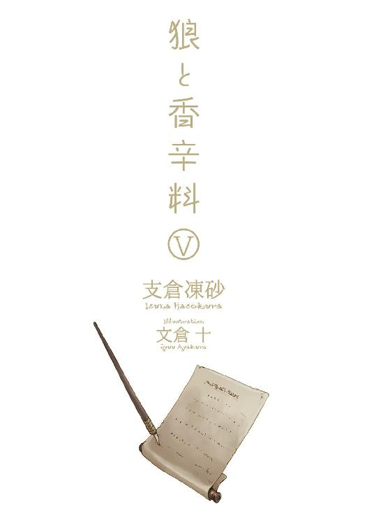
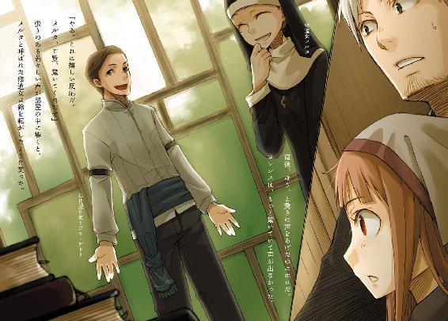
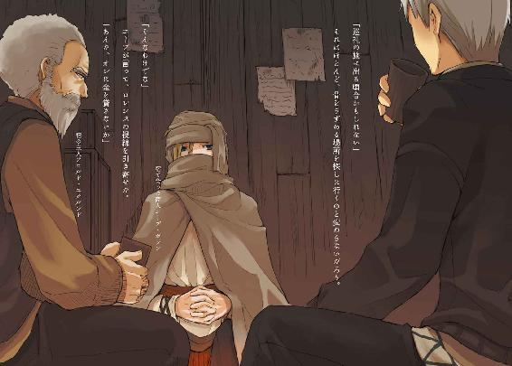
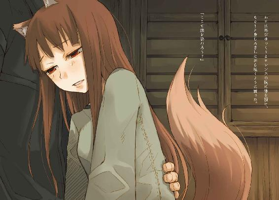
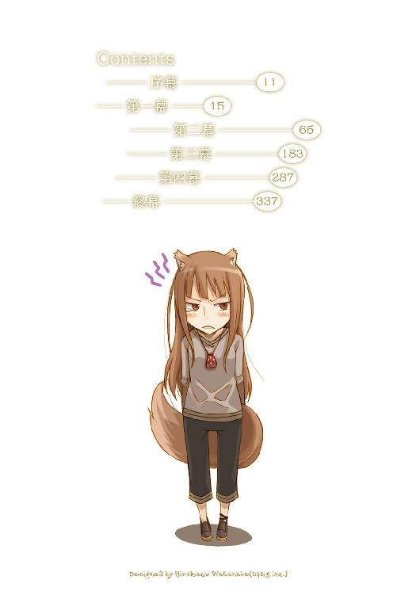
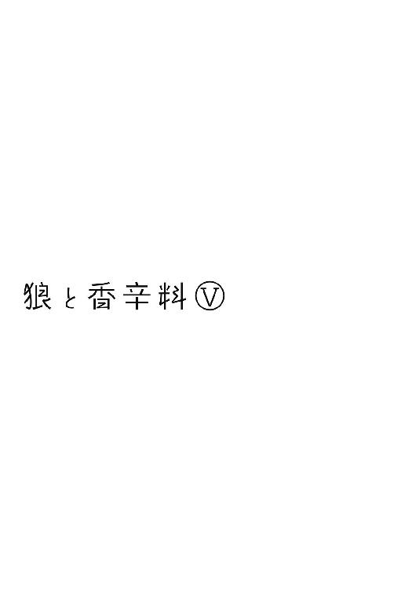
本書（電子版）に掲載されているコンテンツ（ソフトウェア／プログラム／データ／情報を含む）の著作権およびその他の権利は、すべて株式会社アスキー・メディアワークスおよび正当な権利を有する第三者に帰属しています。
法律の定めがある場合または権利者の明示的な承諾がある場合を除き、これらのコンテンツを複製・転載、改変・編集、翻案・翻訳、放送・出版、公衆送信（送信可能化を含む）・再配信、販売・頒布、貸与等に使用することはできません。
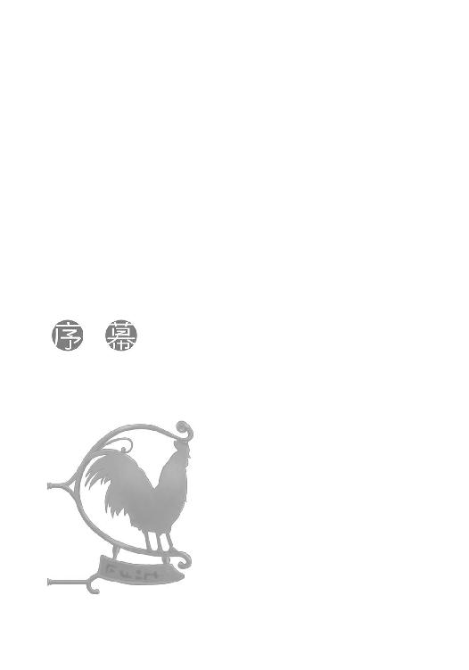
静かな旅だった。
荷馬車の音だけが響き、会話もなにもない。
ただ寝起きをし、荷馬車に揺られ、飯を食う。
荷馬車の御者台で手綱を握る青年、クラフト・ロレンスは十八の頃に独り立ちをして今年で七年目になる行商人だ。
独りで野を行く行商には孤独がつきもので、ついうっかり荷馬に話しかけてしまうことだってあるし、異様に独り言が多くなったりもする。ここ数日もほとんど言葉らしい言葉を発することがなく、静かに旅を続けていた。
しかし、それが寂しいかと問われれば、答えは否だ。
その理由は間違いなく、隣で静かな寝息を立てている相棒のお陰だ。
今はローブだの毛布だのに包まっていて男か女かすらわからない状況だったが、その容姿は十人が十人とも振り返るような美しさで、貴族の娘のような長い亜麻色の髪の毛が振り返った男連中の目をしっかりと絡めとる。
黙って楚々としていればどんな立派な場所に出たって恥ずかしくないだろう。
ただ、その相棒はそうおいそれと表舞台に出ることなどできない。
なぜなら、札つきの悪ならぬ、獣の耳と尻尾つきの娘だったからである。
相棒の名はホロ。
その真の姿は人を軽く丸飲みにできるほどに巨大な、麦に宿りその豊作を司る狼だった。
「っ......」
ふと、そんなホロがなにか言ったような気がしたが、単に軽く目を覚ましたのだろう。こういう時は大体理由が決まっている。
ついさっきは尻尾の位置を変えたので、今度は耳の位置のはず。ロレンスはノロ鹿の革で作った手袋を嵌めたまま、ホロのフードをつまんで少し持ち上げてやる。
すると、フードの下で満足のいく位置を探すように耳を動かしているのが手袋越しに伝わってきた。しばらくぴくぴくと小さな振動が伝わってきて、やがて収まった。気難しい貴婦人が花瓶に活けた花の位置を気にするような微調整を経て、満足する位置を見つけたらしい。ホロは小さいため息のようなものをついたのちに、毛布の内側から軽く頭をこすりつけてきた。
礼の代わりだろう。
ロレンスは視線を前に戻し、また静かな旅に戻る。
もう、互いに互いの気持ちがわからない仲ではない。
会話がなくとも、寂しいはずがなかった。
村の揉め事に巻き込まれ、あわや罪人として断頭台の露と消えそうになったテレオの村を出て一週間。
ホロとロレンスの二人は、ホロの伝承が残るという町、レノスを目指していた。
レノスは北の地方ではなかなかに大きい町で、材木や毛皮の市場として知られている。
もちろん訪れる者たちも多く、レノスに続く道ではすれ違ったり追い抜いたりする同業者の姿がちらほらとあった。ロレンスも過去に何度か訪れたことがあるが、今回は商用ではない。
旅の相棒たるホロの、帰郷のための情報集めに立ち寄るのだ。
だからいつもは必ず積んでいるはずの積荷もない。
本当は、テレオの村で山ほど分けてもらったクッキーを多少なりとも売り物にできればと思っていたのだが、隣で眠る狼に全て食べられてしまった。うまいものはあればあるだけ食べてしまい、挙句になくなると怒り出す。
呆れるほどよく食べてよく飲み、そして、よく眠る。
寒いうえにすることもないから確かに手綱を握っていなければ眠るほかない。それでも散々昼間寝たうえで夜もしっかり眠れるのだからすごい。夜中にこっそりと起き出して月に向かって遠吠えしているのかもしれない、と何度も疑った。
そんな暢気で静かな旅も一週間になって、ついに雨に見舞われた。
どういうからくりがあるのか、ホロはその雨を二日前から予測していて、そのせいか雨が降り出すやもそもそと毛布の下から顔を出して責めるような視線を無言で向けてくる。
そんな目をされてもこればっかりはどうにかなるわけでもない、とロレンスは目をそらす。
昼頃から降り出したそれは、雨粒が体を叩くものではなく煙のような霧雨だったのが幸いといえば幸いだが、この寒さでは氷を削って降りかけられているのと変わらない。
ホロは毛布を頭からかぶって知らんぷり。寒いから一枚寄越せと言えば親の仇のように睨みつけてくるだろう。
ロレンスは早速手先がかじかんできていて、それこそ荷馬車の荷台の下にでも潜り込もうかと考えていたが、神様というものは日頃の行いをきちんと見てくれているらしい。
ホロも気がついたようで、毛布から顔を出すや欠伸を一つした。
「くぅ......あふ。どうやらこのまま凍りつかなくてすみそうじゃな」
「人が震えながら手綱を握っているのに、自分だけぬくぬく毛布に包まっている奴の台詞か？」
「ふむ。わっちゃあ冷たい心根じゃからな。よく暖めんといかぬ」
楽しそうな笑顔で言われたら、怒る気にもなれない。
ロレンスたちが行く道の先には、乳白色の景色の中にぽつんと黒い影が見えていた。
「あれじゃな。シチューの中にお焦げが浮いておるみたいじゃな」
ホロがそんなことを言うので、ろくなものを食っていなかったすきっ腹が間抜けな音を立てて鳴ってしまう。さしもの意地悪な賢狼もこの頃合で腹の虫を鳴らされるとは思っていなかったらしい。きょとんとしたあとに、からかうのも忘れたように無邪気に笑った。
レノスの町はローム川と呼ばれる幅広でゆったりとした流れの川に面して作られた大きな港町で、町の影が見えてきたということは川も見えそうなものだが、今は霧雨に塗りつぶされて空と一緒くたになってしまっているらしい。晴れていれば大きなローム川を行くたくさんの船影が見えただろう。
町の中に入れば、日々行き交う船に加えて繫留されているおびただしい数の船を見ることができる。それにホロが大好きな露店もたくさんあるだろうし、酒も度の強いものが多い。
雪に見舞われて足止めをくらっても一冬くらいならば楽しく過ごせること間違いなしだ。
ただ、一つ心配があった。
「で、念のため言っておきたいことがあるんだがな」
「ん？」
「昔お前はこの町に来たというが、忘れているかもしれないので改めて言う。レノスの町は材木と毛皮が有名だ」
「ふむ」
今更、という感じがしないでもないが、確認しておくのとしないのとでは取れる対応が違う。
「その毛皮の中に、狼がいても怒るなよ？」
ホロは怒るでも笑うでもなく、なんともいえない曖昧な表情を浮かべてから、もそもそと襟元をいじくって子狐の襟巻きを取り出した。
クメルスンの町で、魚商人のアマーティからもらった贈り物だ。
物には罪がないし寒い時期には実に有用な毛皮なのでロレンスは黙っているが、それを見ると尻の辺りが落ち着かなくなる。
きっとホロはそのあたりのことに気がついたうえでなお殊更暖かそうに首に巻いているのだろうが、そんな襟巻きを取り出すと、顔の部分を持ってロレンスのほうに向けた。
「ぼくは狼に食べられることもあるし、鼠を食べることもありんす」
子狐のつもりなのか、声音を変えてホロはそう言った。
ロレンスは小さく肩をすくめる。
相手は、賢狼ホロなのだ。
「ふん。狩ったり狩られたりは当然じゃ。大体じゃな、ぬしら人のほうがよほど信じられぬことをする。ぬしらは自分たちの仲間を売ったり買ったりするじゃろう？」
「そのとおりだ。奴隷商はとても儲かるし、必要な商売だ」
「それが人の世の決まりとぬしらが落ち着いて言うのと同じくらい、わっちらだって狩られる者たちに対する態度は冷めておる。それに、逆の立場になったらどうじゃ？」
ホロが、その赤みがかった琥珀色の瞳を少し細くして向けてくる。
ロレンスはホロと出会ったばかりの時に交わしたやり取りを思い出した。ホロが、狼が賢いのは人を食うからだというたちの悪い話を出した時のことだ。
ロレンスだって、狼の縄張りに入ってしまって逃げられなかった旅人が命を落とすことは旅人が悪いのだとは思う。それで狼を恐れるのはまだしも、恨むというのはお門違いな気がする。
それは、あまりにも当たり前なことなのだから。
「じゃがまあ、実際のところは少しでも己と関係のある者が目の前で狩られておったら、さすがに平静ではおられぬがな」
その言葉もわかる。
ロレンスがうなずくと、ホロの言葉が続いた。
「ぬしもわっちが人の雄に狩られそうになった時、慌ててくれたじゃろう？」
細められたままの目は、つい数瞬前までとはまったく違う雰囲気のものだ。
ホロも飽きないなと、口元が笑ってしまった。
「ああ、慌てたよ。すごい慌てたよ」
視線を馬に戻しつつおざなりに答えると、ホロはたちまち不機嫌そうに言った。
「なんで棒読みなんじゃ」
「そりゃあ」
ロレンスは答えて、顔を前に向けたまま、呆れるように目を閉じて言った。
「恥ずかしいからさ」
まったく恥ずかしい台詞だ。
そんなことを胸中で呟いてしまう。
しかし、隣に座る狼は、淡白なものよりも脂身こってりのこんなものが好物なのだから仕方ない。
ホロは、顔が白い息で隠れてしまうくらいに吹き出して笑った。
「恥ずかしいの」
「まったくだ」
寒くて単調な旅の途中では自然と会話がなくなって、気心が知れていれば無言のやり取りで十分心が癒されるとは思っても、やはりこのやり取りには敵わない。二人で笑い合っていると、馬がいい加減にしろとばかりに尻尾をきつめに振り、また漣のように二人で笑い合った。
小さく笑いながら子狐の襟巻きを巻き直すホロから、ロレンスは全景が見えてきたレノスの町に目を向けた。
異教徒の町クメルスンよりも二回りほど大きいのか。百年だか前に作られた立派な市壁に囲まれており、とっくに市壁の際まで家々が増えてしまったのでこれ以上はなかなか広がることができない。そうすると自然に建物は密集し、空へ空へと伸びていく。
ただ、間もなく見えてきた光景に、ロレンスはついに町の中身が市壁の外にあふれ出てしまったのかと思った。
霧雨の中、レノスに続く道の両脇に多数のテントがあったからだ。
「門前市というやつかや」
「荒野にぽつんと建つ教会の前ならな。市壁の前で堂々と店を出すのはおかしいだろう」
町が豊かになるためには税を集めなければならず、税を取るには市壁を通過させなければならない。
もちろん、狭い町が大々的な市を行う時には市壁の外でやることもあるが、その時だってやはり縄なり柵なりで囲いが作られる。
「ふむ。なんじゃ、それに、皆商いをしておるわけでもなさそうじゃな」
ホロの言葉どおり、近づいてみると彼らは一様に旅装で、テントの下で煮炊きをしたり雑談しているだけのようだった。服装は旅装といってもまちまちで、ここからさらに北に行った国の者もいれば、西や南の者たちもいる。テントの数はざっと数えただけでも二十ほどで、その中に三人か四人ずつ入っているのがちらほら見える。
彼らに共通しているのは、どうやら皆がなにかを取り扱う商人であること。また半分くらいの連中は大きな荷物を持っていて、馬鹿でかい樽をいくつも積んだ荷馬車まである。
どの顔にも旅の疲労と垢がついており、ぎらりと光る商人の目にはわずかな苛立ちがあった。
レノスの町でなにか政変でもあったのだろうか、とも思ったが、それにしては道行く人たち全てがテントの住人というわけでもないらしいのが理解できない。ロバを連れた農夫や荷物を背負った商人ふうの者たちが、雨を避けるように足早にレノスの町へと向かったり、各々の目的地へと旅立ったりしている。
それを見る限り、町はいつもどおりと考えられそうだった。
「また、一悶着かや」
また、のところに力を込めてホロが言い、フードの下でにやりと笑う。
ロレンスは一体誰のせいだという顔をしてそんなホロを横目で見たが、当のホロに同じ目で見つめ返された。
「もしかしたら、ぬしはわっちと出会ってから急にあれこれと揉め事に巻き込まれておるのやもしれぬが、わっちがそれらを直接引き起こしたことなど一度たりともありんせん」
「う」
「最初の一つは......まあ、一部わっちのせいもあったかもしれぬがな、元はといえばぬしが欲を搔いてじゃ。次の一つは完全にぬしが欲を搔いて失敗。もう一つはぬしが一人で勝手に慌てて。最後の一つは単に運が悪かった。違うかや？」
ホロの言葉はいつだって的確だ。
寒空の下で湯も使わずに剃る勇気がなく、かなり長くなってきている行商人の象徴である顎鬚を撫でながら、ロレンスはそれでも素直に首を縦に振らなかった。
「頭の中では理解できるんだがな」
「うむ」
「どうにも、納得できない。確かに、事件の起点にお前がいたわけではないんだが......」
それでもなお、承服しかねる気持ちがロレンスにはあった。
なぜか、ホロのせいだ、と言いたくなる。
ロレンスがその不可解な気持ちに唸っていると、ホロがなにをそんな簡単なことで、とばかりにこう答えた。
「わっちが事件の元の元になっておらぬのに、ぬしがそれにうなずきがたい気持ちは、わっちにもよーくわかりんす」
「......」
またどんな権謀術数で煙に巻くのかと眉につばつけようとしたところ、ホロは「にひひ」と笑って嬉しそうに言った。
「ぬしはぬしの行動の基準にいつもわっちを置いてくれるからの。それでわっちに振り回されておる気がするんじゃろ」
思わず、左の眉だけがピクリと動いてしまう。
それは限りなく正解に近い。
しかし、それをこの狼の前で認めるのは負けだ。
つまり。
「くふ。意地っ張り」
ホロは、空を舞う霧雨同士がこすれるような声でそう言った。
儚くて、清らかで、それでいて冷たく、逃げるように舞う笑顔。
追いかけなければ！
理性ではないどこかに、強烈にそう呼びかけるようなホロの笑顔。
次の瞬間には、両腕の中にホロの小さな体があった。
そんなことになっていても、おかしくはなかった気がする。
「むう」
都合、荷馬が四歩歩く間だったにすぎない。
ロレンスはレノスへの入り口から伸びる検問の列に荷馬車を並ばせ、結局取り乱すことはしなかった。
理由はもちろん簡単だ。
辺りにはたくさんの人の目がある。
旅から旅の行商人で、周りの者たちもまた同様であっても、商売の世界は狭いのだ。町の入り口で人目もはばからずじゃれ合っていればいい笑いものだ。
ホロはつまらなそうに横を向く。
実際に、つまらない、と思っているのだろう。
ただ、女の笑顔といえば全部同じに見えていた昔ならいざ知らず、ホロの顔ならわずかな変化だってよくわかるようになっている。つまらなそうな色のほかに、そこには不安があった。
それを見て、ロレンスは気がついた。ロレンスの中には二つの行動基準がある。
一つは、ホロ。
もう一つは、商人。
孤独をロレンスよりも恐れるホロなのだ。自分が時として商売というものと天秤にかけられるのがとても怖いのかもしれない。究極のところでその天秤がどちらに傾くか、その答えは神にしかわからない。あるいはぎりぎりのところで、という可能性がないわけではないのだ。
それでなくとも、旅の終わりはそう遠くない。
だから敢えてロレンスが商人の顔を気にするような場所で揺さぶりをかけて、自分の重さを確認しているのだろう。
金勘定と私のどちらが大事なの、というやつだ。
そんな不安になるほど軽いわけがないのに、とロレンスは思ったりしてしまうのだが。
じりじりと進む列に合わせて荷馬車を進めていると、ホロのフードの下からとても大きな白い煙が上がって、不機嫌そうな顔のままこちらを振り向いた。
「シチューがよい」
きっと晩飯のことだろう。小娘のような確認は終わりにしたようだ。
「寒いからな。値段にもよるが、小麦粉からきちんと作ったやつでもいいな」
「んふふふ。ミルクの甘い香りは時として酒の香りを越えるからの」
首をすくめ、首に巻いている子狐の毛皮に顔半分をうずめながら、この上なく楽しみな顔をされたら日頃の腹の立つ言動も帳消しだ。
たまには具のたっぷり入ったものを注文したっていいだろう。
「この季節の野菜入りなんてのがまた格別でな」
「野菜じゃと？ あの乳白色の中に浮かぶ黒くて柔らかい牛の肉の味をぬしは知らぬのか」
田舎の村の畑に何百年といたはずなのに、ホロの趣味は貴族よりも貴族的だ。
甘い顔を見せるんじゃなかったと、レノスの町の立派な市壁を目前に、ロレンスはせめてもの反撃を試みる。
「良い物は目の毒舌の毒というがな」
「その良い物を何百年も食えなかったわっちのことを、ぬしは気の毒と思わんのかや」
ぴたり、とホロは上目遣いに見つめてくる。
少しも揺るがない赤味がかった琥珀色の瞳は、綺麗に磨かれた宝石のようだ。
宝石の輝きの前で、人はどうしても膝を屈してしまう。
しかし、ロレンスは商人で、宝石を集めるのが趣味の貴婦人ではない。値段が釣り合わないと見れば、綺麗な宝石に対してだって当然このように言う。
「一度財布と相談してからだ」
ホロが子供のようにむくれて前を向く。
こんなやり取りを経てもなお、結局肉入りにしてしまうのだろうなとロレンスは思うし、ホロもそれをほとんど確信しているはず。
それでも喧嘩をしたふりの、いつものやり取り。
ロレンスは手綱を操り、荷馬車を進める。
雨で濡れて苔色になっている石の市壁を見上げながら、検問をくぐる。
少しうつむいたのは、関税を逃れるために商品を隠すのではなく、つい浮かんでしまう笑みを髭の下に隠すためだった。
霧雨が舞う冬の日だからだろう。
道行く人の数はとても少なかった。
いるのは白い息をたなびかせて胸元を押さえながら走っている子供くらいで、どこかの店か職人の使い走りに違いない。ボロ布を集めた化け物のような姿で歩いているのはきっと同業者だ。
露店もほとんどに人がおらず、柔らかい霧雨に濡れて時折滴をたらしている。
その前にいるのは普段は店主に追い払われてしまう物乞いたちだけで、典型的な雨の日の平和な町だった。
ただ、市壁の入り口の前にずらりとテントが並び、商人と思しき連中が煮炊きをしているとなればなにもないわけがない。
検問をくぐる際に渡された、〝外地商人証明札〟なる木の札を手の中で弄びながら、ロレンスはホロの不満に相槌を打っていた。
「確かに万物の頂点に位置するなどとはわっちも思わぬ。じゃがな、それは種として越えられぬ差であり、優劣の差ではありんせん。ぬしもそう思うじゃろう？」
「そうだな」
「元から優れておる種類の中で劣るものと、元から優れておらぬ種類の秀でたものならば、敬意を払うべきは後者じゃ。違うかや」
「......そうだな」
旅の疲れなのか、ホロはいつものようにすっぱりとした怒り方ではなく、粘土のような怒り方で不満をぶちまけている。
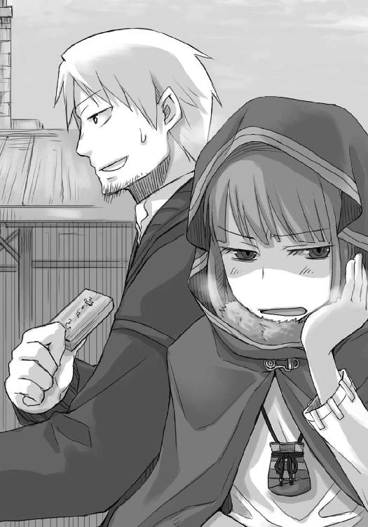
まったく検問の門兵も余計な一言を言ってくれたものだとロレンスは胸中で一人ごちるが、返事をおざなりにしすぎてホロの怒りがこちらに向きかけていることにようやく気がついた。
「いや、名声も人格も財産もなく、血筋だけがある貴族と、名声も人格も財産もある平民とでは、どう考えたって敬意を払われるのは後者だ」
普段ならもっと怒りそうな見え透いた追従だが、今のホロにはなんでもいいらしい。
絡み酒の酔っ払いのようにそうじゃろうと大仰にうなずき、牛のごとく鼻息を吐いた。
実は、検問の時にひどく慎重に身体検査をされ、ホロの尻尾が門兵にばれてしまったのだ。
もちろん、ホロは少しも慌てずに腰巻ですよとばかりにすましていたのだが、思惑どおり腰巻と思ったらしい門兵がこう言ってしまった。
「なんだ安物の狼の皮か」と。
狐や犬ではなく一目で狼と見抜くのはさすが毛皮と材木の流通拠点で検問をする門兵だった。
評価も間違いではなく、毛皮の序列の中では狼の毛皮は犬に次いで安い。それがどれほど優れていて、狼の毛皮としてならばどの毛皮商も涎をたらしながら最高の評価をくだそうとも、絶対に鹿の毛皮には勝てないのが現実というものだ。
ただ、問題はその当の狼の誇りまでもが安くないことで、その点に関してホロはとてもとてもお高かった。
そんなわけで、隣のホロは頭を撫でてやりたくなるくらい子供っぽくぶつぶつと怒っている。
することといえば手綱を握るだけの旅の途上なら愚痴に付き合ってやるところだが、今はロレンスはそんなホロを横目に見ているだけ。飯でも食わない限り収まらないか、と冷静に木札の角で顎を搔く。
ロレンスの興味は、今はこの木札のほうにある。
簡素な木札で、割り印もなにも押されていない急ごしらえの品だ。
町の中で仕入れをする時にはこれを提示しないと売ってくれないと言われた。
説明はそれだけで、ウナギが細い筒を通り抜けるように旅人が次から次へと通される検問から追い出された。
これが気にならない商人などいない。
こんなもの、レノスの町だけでなく、他の町も含めて初めてもらうのだから。
「で、ぬしよ」
「え、あ？」
脚を小突かれてロレンスは我に返り、ホロの鋭い視線に少したじろいだ。
なにか話を聞き逃していたのだろうかと思ったが、語るに落ちる前にホロが先にあとを続けた。
「宿はまだかや」
きっと寒いのも腹が減っているのもずっと乗ってきた荷馬車にこれ以上乗ることにも腹が立つのだろう。「あの角を曲がってもう少しだ」と指差して教えてやると、目の前が宿ではないことに怒るようにため息をついて、フードの下に潜ってしまう。
これはシチューの肉の量を慎重に吟味しなければならないかもしれない。
そんなことを考えながら荷馬車を進めていき、やがて目的地に着いた。
立派、と呼ぶには少しためらいを覚えてしまう建物で、ごく普通の四階建ての住居だ。
通りに面した一階部分は壁が二枚の鎧戸になっていて、下の部分を開けて水平にすれば商品陳列棚に。上の部分を開ければ庇になる。今はどちらも閉まっていて、外の寒い空気を中に入れまいと頑張っていた。
店構えがしっかりした宿屋に連れていってもらえるものとでも思っていたのか、ホロが殊更不満そうな顔を向けてくる。
大金を払ったからといって心安らぐ宿に泊まれるわけではない、という言葉は省略して、ホロの面倒くさい視線から逃れるように御者台を降り、小走りに駆け寄って扉のノッカーを叩く。
宿の看板すら出していないようなところなので満杯ということはないだろうが、今日は寒いから営業終わり、ということは十分ありうる。
そんなわけで、扉の向こうに人の気配が感じられ、扉が開いた瞬間には少しだけほっとした。
「泊まりかい。荷物かい」
寒いからだろうが、少しだけ開けた扉の隙間から、物憂げな顔を真っ白く長い髭で半分以上覆った中背の老人が短く聞いてきた。
「泊まりで、二人」
老人は軽くうなずいただけですぐに身を翻す。
扉は開けたままなので、部屋は空いている、ということだろう。
ロレンスはいったん後ろを振り向いて訊ねた。
「暖かい部屋と明るい部屋、どっちがいい？」
眉根に皺が寄ったのは、質問が意外だったからだろう。
「......暖かい部屋以上のものがあるかや」
「じゃあ、厩に馬を回しておくから、先に入って店主......今の爺さんにそう言えば、空いてる部屋を言ってくれる」
「うむ」
ホロと入れ替わりに御者台に上がり、手綱を握る。馬もようやく野風の吹きっさらしから厩に入れるとわかるようで、急かすように首を振る。ロレンスが手綱を引いてそんな荷馬を歩き出させると、扉を開けてホロが宿の中に入っていくのが横目に見えた。
幾重にも重ね着された薄汚れたローブの後ろ姿は、きっと百人の雑踏の中に混ざっていたってすぐに見分けられるだろう。
重ね着したってわかるくらいに尻尾がパンパンに膨れていたのだから。
ロレンスは少しだけ笑い、荷馬車を厩に入れる。厩には見張り兼住人の物乞いが二人、ぼろに包まってこちらを品定めしていた。
彼らは一度来た人間を絶対に忘れないので、もちろんロレンスのことも覚えていて、軽く顎をしゃくってそこに止めろと示してくる。逆らう理由もなく示された場所に馬を向けると、隣には足の太い山岳用の馬がつながれていて、灰色がかった長い毛の奥からやぶ睨みの一瞥をもらった。きっと北方からの毛皮をもたらす馬だろう。
「仲良くしろよ」
と、自分の馬の背を叩いてロレンスは御者台から降り、二人の物乞いに二枚の銅貨を渡すと荷物を手に宿屋に入った。
この宿屋は元々革紐職人の工場付き住居だった。一階部分は革紐職人の工場だったこともあって壁が少なく床が石になっている。今は倉庫として利用されていて、あっちこっちの商人たちが色々な目的で荷物を長期間保管してもらっている。
雑然としている身長よりも高い荷物の山をすり抜けて、その一角だけ綺麗に片づけられた主人の居間にたどり着く。
片づけられたそこには小さなテーブルセットと、鉄の鍋を支える三本足の鉄の支柱がある。主人は鉄鍋に炭を入れ、日がな一日ここで温めたぶどう酒を飲みながら、遠い土地に思いをはせているのだ。「来年には南へ巡礼の旅に」が彼の口癖だった。
ロレンスに気がつくと、長い眉毛の下から青い目を向けてきた。
「三階。窓側」
「はい。三階、え、窓側？」
料金は先払いでも後払いでもいいが、無口な店主も先払いだと多少は機嫌が良くなったりする。そんなわけでロレンスは先に多めの宿泊料金をテーブルの上に置いていたのだが、その言葉に驚いて振り向いた。
「窓側」
主人はもう一度だけ呟いて、目を閉じた。
話しかけるなという合図だ。
ロレンスは少し首をひねり、まあいいかと思い直してその場をあとにした。
手垢のしみこんだ手すりを伝って階段を上る。
職人の工場付き住居がどこもそうであるように、二階には暖炉付きの居間と屋敷の主の部屋があり台所もある。ここの建物がちょっと変わっているのは居間のど真ん中に暖炉があることで、三階四階のなるべく多くの部屋が煙突から暖を取れるような工夫になっている。
もちろんこうなると代わりに間取りが変なことになってしまううえに、煙突が通る部屋に煙が漏れないようにと整備が大変になるが、屋敷の主は三階四階に住む徒弟たちの住環境の良さを取った。
無口だが優しい親方、というのが今は宿の主人である、元革紐職人親方のアロルド・エクルンドだ。
夜になればいびつな形の居間では宿泊客が各々酒を持ち寄ったりしてささやかな談笑が聞けることだろう。今は暖炉の中で薪が弱々しく燃える音だけが響いていた。
三階に上がれば部屋は四つ。
工場時代、新入りや雑用係の使っていた部屋は四階なので、三階のほうが部屋は広い。
ただ、その部屋全てが暖炉の煙突の恩恵に与れるというわけではなく、四つあるうちの一つだけが通りに面していて、窓という明るさを手に入れられる代わりに暖かさに与れない。
窓側ということは、暖かくない部屋ということだ。
ホロは確か暖かい部屋がいいと言っていたような気がしたが、と思ってロレンスが部屋に入ると、すでにホロは濡れた服を脱ぎ散らかしてベッドの中だった。
悔しさのあまりに泣いているのかとも思ったが、毛布の丸まり方を見るに早々に眠っているらしい。
いつまでも怒っていたのはやはり疲れによるところが大きかったのか。
脱ぎ散らかされた服を集めて、いったん椅子の背にかけて自分も旅装を解く。旅をしていて一番ほっとするのが、この濡れた服を宿で脱ぐ瞬間だ。重い粘土でできたような服を脱ぎ捨て、まだ雨がしみ込んでいなかったいつもの格好に戻る。
さすがにその格好では空気が冷たいが、濡れたままでいるよりかはよほどましだ。
それに、人のいない間に二階の暖炉で乾かさないとならない。
夜になれば暖炉の暖かさに与れないこの部屋は焚き火のない野宿と同じになってしまう。
とても毛布だけでは寒さをしのげないだろう。水を吸って重くなった衣類をホロの分もまとめて抱え、仕事を決して厭わない真面目な下男よろしく部屋を出ようとしたところで、それに気がついた。
ホロの尻尾が、ベッドの上にパンとベーコンとチーズのように積まれた毛布の合間から少しだけ見えていた。
まったくずるい奴だ、とロレンスは思う。
貴族の娘が意中の騎士の目を引くために、窓の隙間から長く美しい髪を覗かせるのとはわけが違うのだ。
それでも、ロレンスには、こう言うしか選択肢がない。
「立派な尻尾だと思う。暖かい良い毛皮だ」
しばしの間をあけて、すっとホロの尻尾が毛布の下に引っ込んだ。
やれやれ、とため息をつくほかない。
ホロがとてもいじらしい娘で、ロレンスにだけ褒めてもらえればあとはどんな侮辱を受けてもいい、なんて考えているとはとても思えない。今この瞬間にだってまだ腹の底ではぐらぐらと怒りが煮えているはずだ。
それでも、ロレンスに尻尾を褒めさせるようにした。
階段を下りるロレンスがもう一度、苦笑いしながらやれやれとため息をつくのにそれ以上の理由は要らなかった。
ホロはホロなりに甘えてくれているのだ。
それがホロ一流の罠だったとしても、嵌って悪い気分ではなかった。
人の胸中を読む狼が隣にいないのをいいことに、そんなことを臆面もなくあれこれ考えながら二階へ下りて暖炉のある居間へと入る。
居間には誰もおらず、薪の燃える音だけが小さく響いていた。
家具もほとんどなく、椅子が一脚だけ暖炉の明かりに揺られている。両手に抱えた服を乾かすにはもちろんその椅子だけでは足りないが、ロレンスは特に慌てることもない。
居間の壁にはところどころ釘が半分打ち込まれていて、各々フックのように先が折れ曲がっている。そのうちのいくつかには革紐がぶら下がっていて、伸ばせば反対側の壁に打ち込まれた釘へと届くようになっている。
雨の日には外から来た旅人が服を干し、晴れの日にはこれから旅立とうとする旅人が肉や野菜を干すのだ。
ロレンスは手早く革紐を通し、さっさと濡れた衣服をかけていく。
思った以上に布が大きく、結局革紐一本分丸ごと使ってしまう羽目になった。
乾くまで誰も服を干しに来なければいいが。
胸中でそんなことを呟きながら、暖炉のまん前の特等席に腰を下ろした直後、みしり、という階段の軋む音を聞いた。
「......」
ただ、それは正確には廊下の軋む音だったらしい。
軋む音の聞こえたほうに目をやれば、階段を上り終えたついでに居間の中を覗こうとしていた旅人と目が合った。
フードというよりも頭巾といったふうに頭に布をきつく巻き、口元も鼻の上まで覆っているので表情は見えないが、その眼光はとても鋭い。背はそれほど高くなく、かといって低くもなく、ホロより少し高いくらいだ。
旅装はかなりの重装備で、体が真四角に見えるほど服を着込んでいるが、その中で最も目を引くのが、ふくらはぎまでぐるぐるに紐で縛られた重厚な革の靴だ。馬を使わない徒歩の旅人の証で、おそらくは結構な距離を歩いてきたのだろうに、少しも結び目が揺るんでいないあたりが年季の深さを窺わせた。
幾重にも重ねられた布の隙間から向けられる薄い青の瞳は、鋭さの中に涼しさを有していたが、あまり愛想が良いほうではないらしい。
こちらがそうしていたように、相手もこちらの品定めを終えると、挨拶もなく階段を上っていってしまった。
重そうな荷物を背負っていたのに足音がほとんどしない。
それでもどうやら三階の部屋を取ったらしいことが、頭上からわずかに聞こえた扉の開け閉めの音でわかった。
アロルドは客に対してほとんど関心を示さないため、この宿はあまり社交的ではない者たちにとって重宝がられている。たとえ商人であっても、全員が全員社交的なわけではもちろんない。
ロレンスがレノスの町でいつもここを利用するのは単純に設備と値段の兼ね合いと、アロルドがもともとローエン商業組合に属していたため。元は旅の毛皮商人で、入り婿として革紐職人の親方を継いだという話だった。
この町にはローエン商業組合の商館がないので、組合に所属する商人などが利用することも多い。
それに、今回はホロがいるので客の詮索をしないアロルドの宿は実に都合が良かった。
もっとも、目下ロレンスの頭を悩ませるのはホロの機嫌を直すために晩飯を肉入りのシチューにしなければならないことだ。ホロの機嫌が直るならシチューの一杯や二杯どうってことはないが、一度甘い顔を見せれば一気にこの町の滞在費が跳ね上がる。
さてどうやってこの難問を越えようかと考えているうちに、旅の疲れが出てきて暖炉の前でうとうとと居眠りをしてしまっていた。
アロルドが薪を足しに来て一度目を覚ましたが、アロルドはもちろんなにも言わず、それどころか少し多めに薪をくべていってくれたので好意に甘えることにした。
二度目に目を覚ましたのは、日も完全に暮れ、暖炉の明かりに照らし出される闇がコップですくえそうなほどに濃くなってからだ。
寝すぎたことに気がついて慌てて体を起こすも、時間が戻るわけではない。おそらくわがままなホロはとっくに目を覚まし、服がないせいで部屋から出るに出られず空腹にいらいらしていることだろう。
ロレンスはため息をついてのそのそと起き上がり、干していた衣服が乾いているのを確かめると、手早くまとめて三階に戻った。
ホロのご機嫌が思い切り斜めだったのは言うまでもない。
結局、適当に入った酒場で頼んだシチューは肉がたっぷり入った豪勢なものになったのだった。
翌朝、目を覚ますとどうやら晴れのようで、木窓の隙間から暖かそうな日差しが差し込んでいた。暖炉の恩恵に与れなくとも寒さはそれほど厳しいものと感じなかったのはこの日差しのお陰なのか、それとも厳しい野宿の寒さに体が慣れているからだろうか。
どちらにしろ、これくらいの寒さならホロが明るい部屋を選んだ理由もなんとなくわかる。
やはり、朝は朝日を拝みたい。
体を起こすと珍しくホロはまだ眠っていて、それも毛布の中から顔を出して眠っている。いつもは獣のように丸まって眠っているので普通の娘のような寝相はなんだか新鮮な感じがした。
ただ、過去数回ホロが寝坊した時は大体二日酔いだったので少し心配だったが、顔色も良いので二日酔いではないだろう。
単純に寝坊らしく、無防備な寝顔を晒して眠りこけていた。
「さて」
いつまでもホロの寝顔を見ていてもいいが、意地悪な賢狼にそんなことを気取られるとあとあと厄介だ。
だとすれば、やっておくべきは町に出る身支度で、まず顎に手を当てる。
北の地では長い髭もごく当たり前だが、やはりちょっと長すぎるうえに好き放題伸びているので見た目も良くないはず。アロルドに湯を借りて剃ってくるかと荷物の中から手ぬぐいと薄いナイフを取り出している最中に、耳の良い狼は物音で目を覚ましたらしい。
不機嫌そうなうめき声のあとに、ロレンスは自分の背中に向けられた視線に気がついた。
「毛皮の手入れに行ってくる」
振り向きざま、顎にナイフの鞘を当ててそう言うと、ホロは欠伸のあとに声なく笑って目を細めた。機嫌は良いらしい。ロレンスはもう一言付け加えた。
「せいぜい高値がつくようにしないとな」
ホロは口元を毛布の中に隠すように答える。
「ぬしは立派に高値じゃと思いんす」
寝起きだからか、その目はどこかとろんとしていてとても優しげだ。
ロレンスもまっすぐにそんなふうに言われたら、からかい半分であっても嬉しくないわけではない。
それでもつい照れ隠しに肩をすくめると、ホロがあとを続けた。
「買い手がつかぬほどにな」
言って、うつぶせから仰向けに姿勢を変えた頃には、その目には意地悪な光があった。
「これまで誰か買ってくれたかや？」
まったく、人をぬか喜びさせる才能だけは素晴らしいとロレンスは思う。
降参を示すようにナイフの先を軽く振ると、ホロはくつくつと笑って、二度寝のために毛布の中に潜っていったのだった。
「やれやれ」
相変わらず軽くあしらわれてしまうことが悔しくもあり、楽しくもあり。
ロレンスは部屋から出て苦笑いのまま階段の手すりに手をかける。
ひょいと笑顔が引っ込んだのは、人の気配があったからだ。
「おはようございます」
直後、階段の下に現れた同宿の客に向かって、ロレンスはよそ行きの笑顔で挨拶をしていた。
昨日、暖炉で服を乾かしている最中に目が合った、重装備の旅装をしていた客だ。
相変わらず頭巾を巻いているが、体を覆っている布は幾分緩められていて、足もサンダルになっている。焼きたてのパイでも朝食用に買ってきたのか、右手には湯気の立っている袋を持っていた。
「......ああ」
布の隙間から青い目を片方だけ覗かせていた客は、ロレンスとすれ違いざまにぼそりと言った。
かすれたような、乾いた砂と岩の大地が似合う旅人の声。
無愛想でも、それだけで親しみを感じてしまう。
とりあえず、すれ違った時に立ち上ってきたミートパイの香りを嗅いで、これは絶対ホロもミートパイを食べたいと言うだろうなと思ったのだった。
「で、どうするのかや」
口の端に肉のかけらをくっつけたまま、ホロはミートパイ片手にそう口火を切った。
「まずはお前の話を集めるのが先だろう？」
「うむ。わっちの話と、ヨイツの場所......」
もく、もく、もく、と自分の手と同じ大きさのパイを三口で食べて、あっという間に飲み込んでしまう。
「クメルスンの時と同じように、まず年代記作家に当たろう」
「そのへんは任しんす。方法はぬしのほうがよく知っておるからの......どうしたかや？」
ホロの不審げな視線にロレンスは軽く手を振った。ちょっと笑ってしまったのだ。
「なに、俺は方法を知る。ではお前はなにを知る？」
ホロはきょとんとして、ロレンスを見返す。
「こんな言葉がある。方法を知る者が職を得て、彼の働く理由を知る者が雇い主になる、と」
「ふむ。なるほど。わっちゃあぬしが甲斐甲斐しく働く理由を知っておる」
「昔の人はよく言ったものだな」
ロレンスがパイにかぶりつくと、ホロはベッドの上で胡坐を組み直して言葉を向けた。
「わっちがぬしの雇い主なら、褒美を与えねばな」
「褒美？」
「うむ。つまり......」
妖艶な、という言葉を薄く水に溶いて顔に塗るとこんな笑みになるのだろう。
「なにか欲しいものはあるかや？」
薄暗闇で、雰囲気たっぷりに言われたら少しはどきりとしただろうが、口の端に肉のかけらをつけたまま言われればいくらロレンスであっても動揺しない。
ホロに遅れてパイを食べ終えてから、自分の口元を指差してホロに教えてやった。
「特にいらない」
「むう」
ホロが少し悔しそうに口の周りの肉のかけらをつまんで口に運んでいるところに、ロレンスは言葉を重ねた。
「機嫌良くしてくれていればそれが一番いい」
ピクリと手を止めたホロは、唇を尖らせて指の上の肉を弾いて飛ばしてきた。
「わっちを手のかかる子供扱いかや」
「子供は叱れば言うこと聞くからまだましだな」
手元の水差しを取って、よく冷えている水を飲んで一息つく。
「まあ、まずはここの主人から話を聞くか。腐っても宿屋の主人だからな」
立ち上がり、ロレンスは外套を羽織るだけで準備を終える。ホロはといえば、ベッドから這い出した時そのままの格好だ。
「ついてくるんだろう？」
「手を叩かれても、の」
憎まれ口は軽くかわし、ホロが靴、腰巻、ローブ、ケープの順にあわただしくも実に着なれた手つきで身に着けていく様を、なにかの魔法のようだなと眺めていると、当の狼娘が芝居気たっぷりにくるりと一回転してこう言った。
「ここでぬしの目の前で手を叩いたら、ぬしにかけた魔法が解けてしまうかもしれぬ」
そうくるか。
ロレンスは乗ってやることにした。
「はっ、俺は一体なにをしていたんだろう。そうだ、ここは毛皮と材木の町レノス。毛皮を仕入れて次の町に行かないと」
旅の途中で旅役者の劇を見ることだって少なくない。
ロレンスが大仰な身振りでそう言ってやると、ホロはとっておきの喜劇でも見たかのように腹を抱えて笑っている。
そして、ひとしきり笑うと扉に手をかけたままのロレンスの側につつっと歩み寄ってきた。
「ぬしは旅から旅の行商人かや。わっちは毛皮の良し悪しを見分けることができるんじゃがな」
ホロの手を取って、扉を開けながらロレンスは答えた。
「ほう、確かに良い選別眼だ。では人の良し悪しを見抜く目はどうか？」
朝の静かな空気に満ちた宿の中を、ぎっぎっと階段の軋む音が響く。
ホロは二階に下りてから、ロレンスのことをしげしげ見つめて口を開いた。
「わっちは悪い魔法にかかっておるのかもしれぬ」
ロレンスは思わず笑ってしまう。どういう意味だ、と。
「ならば、それが覚めないように手は叩かないようにしないとな」
「すでに一度叩かれておる」
「だから覚めかけているって言いたいのか？」
まったく会話のどこに罠を仕掛けているかわからない。
これでホロは露店でなにかうまいものをねだる口実ができた。
ロレンスはこのへんだけはどうにかしないとな、などと思いつつ、二階の居間の暖炉の前で談笑したまま眠りこけてしまったらしい旅人二人に目をやっていた。
そして、一階に続く階段を二段下りた時、ロレンスはその手を引かれて振り返った。
正確には、手を持ったままのホロが階段を下りなかったのだ。
ロレンスのことを見下ろす形になったホロは、フードの下で柔らかく笑っていた。
「じゃからな？ 覚めぬように魔法をかけ直してくりゃれ？」
まったくもって、悪魔の所業。
きっとここでロレンスが言葉に詰まればそれで満足なのだろう。
ただ、ロレンスもたまにはホロを出し抜きたい。
だから、その場で振り向いて、ホロに少し引っ張られる形になっていた手を持ち直した。
古今東西、この形で男がすることといったら一つしかない。
その手を軽く掲げると、ホロの白い手の甲に軽く口づけをした。
「こんなふうに、でよろしいか？」
もちろん台詞は時代がかった発音で。
気を抜くと首の付け根でなんとか止めている血が顔に駆け上ってきそうだ。
それをこらえて顔を上げると、フードの下でホロが目を真ん丸くしていた。
「ほら、行くぞ」
唇の端につい浮かんだのは、馬鹿なことをやっているという自嘲の笑みと、ホロに対してしてやったりという勝利の笑み。
ホロの手を軽く引っ張ると、糸の緩い操り人形のように階段を下りてきた。
うつむいているので翳って表情がよく見えなかったが、どうやら悔しがっているらしい。
恥ずかしさをこらえてやった甲斐もあるものだと胸中でほくそ笑んだ。そんな勝利の余韻に浸っていると、ホロが階段を踏み外したようで急にがくんと姿勢を崩す。ロレンスは慌ててそれを胸で受け止めた。
茫然自失になるほど悔しかったのか、とロレンスが笑おうとすると、その瞬間にぎゅっと抱きついてきたホロが耳元で囁いた。
「強くかけすぎじゃ、たわけ」
怒るような、むずがるような声。
出会った当初なら頭の中が真っ白になって、あるいは思わず抱きしめ返していたかもしれない。
しかし、今はそのどちらにもならず、よっぽど悔しかったんだな、と笑えてしまう。
テレオの村でロレンスは、このホロとの甘ったるいくらいに楽しい旅の終わりの結末という、見たくもないものが詰まった箱の蓋に触れた。その蓋はもちろん一人だけで開けてみるようなものではなく、ホロも一緒に手を添えてわずかに開きかけた。
しかし、その時にはどちらにも箱の中身を全て見てみる度胸がなく、蓋は未だ開かれていない。
それでも、わかったことがある。
ホロも、できれば見たくなかった、ということだ。
真正面からしがみつかれ、耳元で囁かれても取り乱さないようになるのに、これほど役に立つこともそうはない。
ろくに櫛も通していないのにさらさらで、香油を使っているわけでもないのにどこか甘い匂いのするホロの前髪が頰に当たる。それは一本一本数えていくのをはなから諦めさせるのに十分なくらい細い。
そんなことを思っていると、ロレンスが一向になんの反応も見せないことに気がついたホロが少し体を離して顔を上げた。
「いつ、ぬしは取り乱してくれるのかや？」
「そうだな。お前がこういうことをしなくなったら、かな」
ホロの頭はよく巡る。
すぐに言葉の示すところに気がついたらしく、悔しそうにした。
「ぬしの知恵の巡りもなかなか良くなったの」
「まあな」
ロレンスが言うと、ホロは軽く鼻でため息をついて体を離し、ゆっくりと階段を下り始めた。
ホロがロレンスの取り乱す様を楽しむのであれば、ホロはロレンスになにかしら仕掛けなければならないが、ロレンスが一番取り乱すのはホロがなにも仕掛けてこなくなった時だ、となればホロはおとなしくしているほかない。
なかなか良い封じ方だった、とロレンスが我ながら感心してホロのあとについて階段を下りると、先に階段を下りたホロがくるりと振り向いてこう言った。
「本当にぬしは口がうまくなったがな、誰かに教えてもらったのかや？」
ロレンスが驚いたのは、フードの下にあったのが、妙に機嫌が良さそうな、触れれば凍った手も温まりそうな笑顔だったからだ。
本当ならホロは悔しそうにするはずなのだが、一体これはなんだろうかと少し警戒しながらホロの前に立った。
「いや、とっさに思いついただけだが......」
「とっさに？ くふ。それは、なお嬉しい」
ホロが仔犬だったらぶんぶん尻尾を振りそうな機嫌の良さだ。
ただ、ロレンスは訳がわからず左手に指を絡めてくるホロのことを見つめていた。
考えろ。ホロのこの様子は、なにかある。
「わっちがなにもしなくなったら、かや。くふ」
ホロはもう一度呟いて、甘えるように体を寄せてきた。
なにもしなくなったら？
改めて言われ、ロレンスはなにか妙なことに気がついた。
そして、その言葉が指し示す別の意味に気がついた瞬間、ロレンスはびしりとその場に凍りついた。
「んふふ。どうしたかや？」
春の雪解け水のように透き通っていたホロの機嫌の良さに、沼地のような粘り気が混じる。
ロレンスはホロのほうを見ることができない。
ホロがなにも仕掛けてこなくなったら取り乱す。
一体なんてことを言ってしまったんだと胸中で思いきり叫んだ。
これでは完全に、ホロに構って欲しいと宣言しているようなものではないか！
「おや？ ぬしは血の巡りも良くなってきたようじゃな？」
顔に血が上っていくのが止められない。
ロレンスは、せめてそれを、発言の意味に気がつかなかった迂闊なことを恥じているのだということにしたくて目を手で覆った。
しかし、ホロがそれを許してくれるはずもない。
「まったく、そんなに子供じみた甘い言葉を恥ずかしげもなく」
ぱたぱたと尻尾が揺れる音がした。
賢狼を口で封じ込めるなど、見果てぬ夢なのだ。
「くふ。ぬしは本当に可愛いの」
覆った手の隙間から見えたのは、信じられないほど底意地が悪そうな、頰を思い切りつねりたくなるような満面のホロの笑顔だった。
アロルドは厩のほうでなにかしていたらしく、幸いなことにホロとの馬鹿なやり取りは聞かれていなかったようだ。
もっとも、ホロはそのへんを承知でロレンスを弄んだに違いないが。
「年代記作家？」
「ええ。あるいは、町の古い言い伝えをご存じの方を」
薄い鉄の板を叩いて組み上げた使いやすそうなコップに温めたぶどう酒を注ぎ、いつもの椅子に座るアロルドは、珍奇な生き物でも見るかのように左眉を吊り上げた。こんな質問をする客がこの世に存在するのかと言わんばかりだ。
それでも、他の宿なら当たり前に客の素性を詮索するのにそれすら一切しないアロルドだから、なぜそんなことを聞くのかと問うこともせず、真っ白い髭を軽く撫でると答えてくれた。
「リゴロという男がそんな役目を負っているようだが......生憎と今は五十人会議中だ。人とは会わんだろう」
「五十人会議？」
ロレンスが問い返すと、片手に入る小さな土器に温めたぶどう酒を軽く注ぎ、ロレンスとホロの二人に勧めてきた。
五十人会議はその名のとおり、町の職人や商人や貴族たちなどからなる五十人の代表者の会議だ。彼らは自分たちの所属する組合なり家なりの利益を代表して会議で議論を戦わせる。そのほとんどが町の運命を左右するような重要な案件のため、参加者の責任は重い。
昔はその席を巡って政治的な駆け引きがたくさんあったそうだが、今では何年か前に疫病が大流行したせいで欠員が何席もあると聞いている。
「町の入り口を見なかったのか......？」
「見ました。商人ふうの連中がたむろしていましたね。それと五十人会議が関係するということはやはり町になにか問題が？」
ホロは勧められるままにぶどう酒に口をつけて、すぐに動きを止めた。
きっと尻尾の毛が膨らんでいることだろう。慣れないとこの飲み物の良さはわからない。
「毛皮が......な」
「毛皮が？」
毛皮という単語に、ぞわりと背筋が粟立った気がした。それはホロのことを気にしてではない。むしろその逆で、あまりにも聞きなれたその単語に、ロレンスの体はこれまで散々慣れ親しんできた金儲けの匂いを思い出したのだ。
ロレンスが勢い込んで聞くと、アロルドは聞こえなかったようにあとを続けた。
「あれは、その会議の書記だ」
会議の内容については話したくないらしい。それに、アロルドは元々それほど親切な人間ではない。
「それで、古い言い伝えを知っている者でもいいのかね」
「え、ええ、それでも構いません。ご存じないですか」
しかし、それを顔に出すわけにはいかない。
ロレンスの自戒はうまくいったようで、ともすれば瞼の皺の中に埋没してしまいそうなアロルドの青い目は、少しもロレンスに向けられることなくすっと遠いものを見るよう細められた。
「皮なめしのボルタの祖母が物知りだった......が、四年前の疫病で死んだ」
「他にはいらっしゃらない？」
「他に？ そうだな......ラットン商会の叔父御が......いや、あれも一昨年の夏の暑さで......なんと、そうか......」
かこん、と音がしたのは、アロルドが口に運ぼうとしたコップを置いたからだ。
ホロが音につられたのかそんなアロルドを振り向いたのがわかった。
「町の古い知識は、こうして書物にしか存在しなくなっていくのか......」
アロルドは愕然とするように言って、遠い目をしたまま顎鬚を摑んだ。
その言葉に、びくり、とホロの体がローブの下ですくんだのがわかる。
自分のことを直接知る者が誰一人としていない。ホロはまさしくその忘れ去られた知識そのものだったからだ。
ロレンスは、ついさっきに散々やり込められたことも忘れて、無言でホロの背中に軽く触れてやった。
「と、なると、リゴロさんの下で記録を見せていただくしかないですか」
「そうなるな......。年月は石の建物ですら風化させる。いわんや人の記憶など。恐ろしいことだ......」
アロルドは首を横に振り、そのまま目を閉じて沈黙してしまう。
初めて出会った時から隠者然としたアロルドだったが、ますますその度合いを深めているらしい。
死というものの迫る音がよく聞こえる歳になるとこうなるのだろうか、と思わなくもない。
もう話しかけても嫌な顔をされるだけだろうと思い、ロレンスは勧められたぶどう酒を一息に飲んで、ホロを促して外に出た。
昨日とは打って変わって人通りが多く、左手から差し込んでくる朝日に一瞬眩暈を起こす。
水を吸ったままの石畳の上に立ち、隣のホロを見た。
心なしか、しょげているようだった。
「なにか食べるか？」
我ながら口にしてから最低な発言だったと思ったが、何事も度を過ぎれば裏返るらしい。
ホロはフードの下で吹き出して、呆れ気味の笑顔を向けてきた。
「もう少し語彙を増やしんす」
そう言ってから、ロレンスの手を引っ張った。
またこんな衆人環視の中で何か始めるのか、というのは邪推に過ぎたらしい。
ロレンスが引っ張られるのと、後ろの宿の扉が開くのは同時だった。
「......」
出てきたのはつい先ほども会った同宿の客だ。
忙しそうな様は旅商人の鑑だったが、その旅商人は、ロレンスと、その隣のホロに目をやると明らかに驚いて足を止めた。
「......失礼」
ただ、それも一瞬のことで、例のかすれた声でそう言うとさっさと人ごみの中に紛れてしまった。
まさか耳か尻尾が出ていたわけでもあるまいな、と思ってホロに目を向けると、ホロも少し首をかしげていた。
「わっちを見て驚いておったな」
「相手が人ならざるもの、とか」
「そんな感じはせんかったが......あの娘、わっちの見目麗しさにたじろいだのやもしれぬ」
「まさか」
わざとらしく得意げに胸を張るホロにロレンスは笑ってから、「え」と聞き返していた。
「娘？」
「ん？」
「女だったのか」
あまりにも旅なれた様子とかすれた声から男だとばかり思っていたが、ホロがそういうことを間違えるとも思えない。
一体なにを商っているのだろうか、と女旅商人の消えた方向を見ていると、再び手を引っ張られた。
「わっちの側で他の雌のほうばかり向いているのはどういう料簡かや」
「そういうことは直接言わず、態度で示したほうが可愛げがあると思うんだがな」
ホロは眉根に皺を寄せることすらせず、軽蔑するような目で答えた。
「ぬしはたわけじゃから言わねば気がつかぬじゃろうが」
先ほどのこともあり、明確に反論できないのが悲しいところだった。
「で、どうするかな」
馬鹿なやり取りはこのへんにして、今日の予定を組み直さないといけない。
「なんとかいう男に会うのは難しいのかや」
「リゴロ、とかいってたな。会議の書記となると難しいかもしれない。しかし、会議でなにをやっているのかにもよると思うが......」
ロレンスが整えたばかりの髭をぞりぞりと撫でながら言うと、ホロは一歩前に出てこう言った。
「会議でなにをやっておるか知りたくて仕方がないという顔じゃな」
「そうか？」
顎から頰を撫でて聞き返すと、振り向いたホロの顔は実に意地悪そうだ。
「ならまったく気にならず、会議とやらが終わるまでだらだらと過ごしてくれるんじゃな？」
ロレンスは笑ってしまった。
「いや、さすがは賢狼の観察眼。俺は町でなにが起こっているか知りたくてたまらない。それどころか」
「あわよくば一儲けしたい」
肩をすくめると、ホロは首をかしげて微笑んだ。
「こんな木札を配るくらいだからな。なにか面白いことになってるんだろうさ」
ロレンスは腰のポケットから〝外地商人証明札〟なるものを取り出した。
「じゃが、ぬしよ」
「ん？」
「ほどほどにしてくりゃれ？」
さらわれたり、地下水道で追い詰められたり、破産の危機に直面したり、大喧嘩をしたりを経てからのホロのその言葉は、苦笑いしないでいられるほど軽いものではない。
「わかってるよ」
だからそう答えたのだが、その瞬間、つい数瞬前まで可愛かった賢狼は実に腹の立つ顔になってこう言った。
「どうだか」
男どもは口ばかり、と言わんばかりのホロに反論するには、一つの方法しかない。
ホロの手を取って、ロレンスは努めて商談用の顔と口調を作り上げた。
「では、まずこの町の観光などいかがですか？」
階段で手の甲に口づけをしたあとでは少し効果が薄かったようだ。あるいは、直後にきっちり逆転されたからかもしれない。
それに、ちょうど目の前を通り過ぎた馬車の荷馬がぼとぼとと糞をたらしながら歩いていたのも良くなかった。
それでもホロは及第点をくれたらしい。ふんと鼻を鳴らして、ロレンスの隣に立った。
「ま、それでもいいじゃろ」
「かしこまりました」
半年前の自分が今の自分を見たらきっと腰を抜かすだろうなとロレンスは思ってしまう。
「で、観光なんてどうするのかや。確かにわっちゃあ本当にここに来たことがあるのか思い出せぬほど様変わりしておるが」
「港に行こう。船が主流になったのは最近だと聞く。海のそれほどじゃないが、結構圧巻だぞ」
「ほう、船かや」
ホロの手を引いて歩き出す。
二人だと早く歩けなくて面倒だ、などと、一体誰が言っていたのだろうか。
隣を歩くホロに歩調を合わせて、ロレンスは胸中で一人呟いて笑ったのだった。
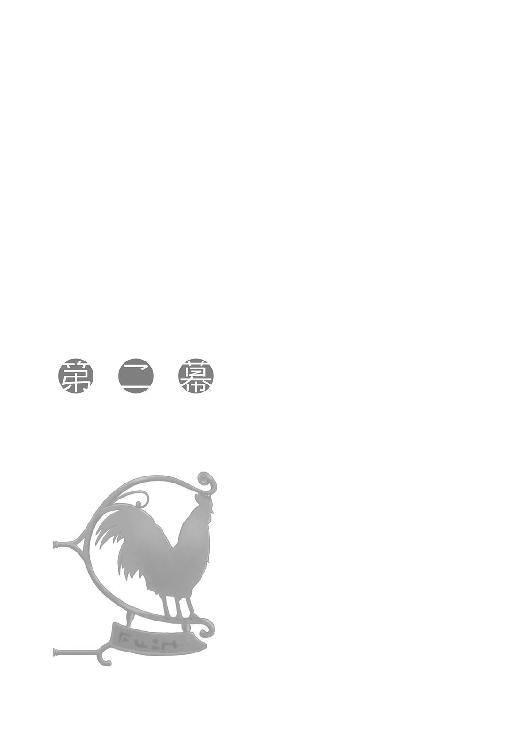
「まあ、結局こうなるよな」
「んう？」
ロレンスが呟くと、ホロはジョッキで半分隠れた顔をこちらに向けてきた。
「なんでもない。こぼすなよ」
「うむ」
他の町で作られるものよりも度の強い、その名も重きビールを軽々しく飲み干して、ホロは焦げあとのついた貝を手に取った。
レノスの側を流れるローム川で採れる二枚貝で、大きさはホロの手と同じくらい。実が柔らかく、すりつぶしてからパンくずと共に練って殻に戻して焼いた、この町の名物だ。たっぷりと芥子種を載せて食べれば、これ以上ビールの進む食べ物など存在しないと思えてしまう。
ローム川の岸辺を削って作られた大きな楕円形の港を前にした当初こそ、そこに停泊するたくさんの平底舟に感嘆の声を上げていたホロだったが、船乗りや船から降りたばかりの旅人の空腹を狙う露店からの良い香りに鼻をくすぐられると、あっさりとそちらに心奪われてしまっていた。
使い古された木箱を積み上げただけの簡素なテーブルの上には三人前の貝が並び、飲み干されたビールはすでに二人前だ。
ロレンスはアロルドが飲んでいたような温めたぶどう酒を頼んでホロに嫌な顔をされた。
この酸味があれば、あとはただ酒をゆっくりと飲む時間さえあればよい。
「しかし、こうして見るだけじゃ町になにか問題があるようには見えないな」
なにが積まれているのか、人の身長ほどもある木箱が船から下ろされると、早速数人の商人が蓋をこじ開けて中身についてあれこれ議論を始めている。
これほど立派な港があれば、そこに入ってくる商品の数というのは途方もない。それでなくとも、傍から見ているだけでは想像もできないほどたくさんの商品が集まるのが町というものだ。
日常の食料品はいうに及ばず、例えば材木が入ってくるならば、それを加工する鋸、のみ、釘、金槌や、それらそのものを修理したり作製したりする旅の鉄細工師が町にやってくるし、材木をまとめるための縄、革紐、陸路運搬用の馬やロバ、またはそれらにつける馬具の数々と、数えていくときりがない。
あるいは単純に港に船が入ってくるのだから、造船技師や工具類、または船そのものだって商品としてやってくる。一体どれくらいの種類の商品がどれくらいの量で行き来しているのかは、全知全能の神くらいしか把握していないだろう。
雑多な、という言葉がこれ以上当てはまる場所もないくらいに活気に満ちた港の全景を見ていると、多少の問題などあっという間に覆い隠されてしまう。
ロレンスから借りたナイフで器用に貝に盛られたすり身をすくっては口に運んでいるホロは、言葉につられたように辺りを見回してから、ぐびりと一口ビールを飲んだ。
「狼の群れと群れが縄張りを争って熾烈な戦いをしておってもな、森というものは遠くから見ればいつもと変わらぬ静けさじゃ」
「お前くらいに目と耳が良ければ、遠くからでもわからないか？」
ホロはすぐに返事をせずもったいぶるようにうつむいて、フードの下で狼の耳を動かしている。
いつもなら焦れたところをホロにからかわれる流れだが、今日は酸味の強い温かいぶどう酒がある。それをすすりながら、ホロの報告を待った。
「あそこの、見えるかや」
しばらくして、ホロは貝のすり身をすくったナイフの先で体中から湯気を立てている男を示した。彼が寄りかかっているのは細かく砕かれた岩のようなものが山盛りに盛られている腰ほどの高さの桶だ。筋骨隆々のその見た目は、へたをすれば海賊に見えなくもない。
そんな彼に渋面を作って相手をしているのは、手に羊皮紙かなにかの束を持った細身の商人。
ロレンスがホロの言葉にうなずくと、ホロは真剣な顔でこう言った。
「あの男は怒っておる」
「ほう？」
「どうやら船の積荷にかけられた税がものすごく高く、当初の値段では積荷を渡したくないと言っておる。首の値段？ が、どうこうとか言っておるな」
「人質税だな。川の上を行く船は、川を所有する領主の人質だからな」
「ふむ。そして、それに対するやせっぽちの男の返答はこうじゃ。今年は北の大遠征がなくなったせいで町は大揉めに揉めている。金を払ってもらえるだけありがたいと思え、と」
毎年冬に行われていた、教会がその権威を誇示するための北への大遠征は、その通過点となる国プロアニアと教会権力との政治的な関係に影が落ちたために中止された。それが理由でロレンスも一時は破産の危機に直面した。
だからというわけでもないが、ロレンスは少し驚いてホロを見る。ホロは相変わらず耳をそばだてているようでうつむいたまま目を閉じていた。
それからロレンスが視線を再び二人の男に向けると、遠目でも商人ふうの男が最後通牒を船乗りに言い渡したのがわかった。
「なんなら毛皮と共に会議にかけてもいいんだぞ」
ホロはそう言って、目を開けた。
ホロに担がれている、と思うのはうがちすぎだろうか。
「似たような会話をしておる連中が少なくとも......四組はおる。税金が高すぎる。北の大遠征。町の輸入がどうこう」
喋りつつ貝のすり身をナイフでほじくり、ナイフの上に身が載れば載るほど、ホロの興味はこちらに移っていっているらしい。
山盛りにすくったそれを口に運ぶ時は、この世にはその食べ物しかないといった感じだった。
「そう言われればそうか......。物流の基点になるような町が、北の大遠征中止の影響を受けないわけがない。リュビンハイゲンではそれで痛い目に遭ったわけだしな。しかし、それと町の入り口で足止めを食らっていた連中とどういう関係が？」
町が普段と違う様子ならば、そこには普段と違う商売の機会が転がっている。
ロレンスが一人呟きながらあれこれ考えを進めていると、だらしなくげっぷをしたホロがこつこつとテーブルを叩いた。
「おかわりか？」
レノスの町の現状が見えてきて、ロレンスの興味は完全にそちらに奪われている。ホロが静かにしてくれているか、あるいは推察の協力をしてくれるなら酒の一杯や二杯安いものだ、と瞬時のうちに損得勘定をする。
露店の店主のほうにロレンスが手を上げて追加を注文すると、ホロは満足げな笑みを浮かべて小首をかしげた。
「今頼んだ酒は、わっちのためではなく、自分自身のためじゃな」
「ん？」
「酒で酔うのはわっちじゃが、ぬしは別のもので酔っ払っておる」
楽しそうに笑うホロの頰はほんのりと紅い。
それでも、いつもならロレンスが眉をしかめるのに、ためらいもせずにおかわりに応じた理由には気がついているらしい。
「酒は金を払って酔っ払うものだが、目の前に商売の種が転がっていないかと考えるのは無料だからな」
「しかも、わっちが側でぎゃんぎゃん吠えず、あるいは素直に協力に応じてくれるようなら酒の一杯や二杯安いもの」
小さな巨人とはこのことだ。
口の端にビールの泡をつけたままのホロに対し、ロレンスは降参の意を示した。
「ま、色々考えておるぬしは実に楽しそうじゃからな。わっちはその横顔を見て酒を飲むことにしよう」
運ばれてきた酒と、今火から外されたばかりといった音を立てている貝の料理と引き換えにぼろぼろの黒いリュート銀貨を店主に渡しながら、ロレンスはホロを見据えて言葉を返す。
「俺はお前がいつの間にかいなくならないように、時折そっちを振り向けばいいわけだな？」
ビールがなみなみと注がれたジョッキを手渡すと、ホロは笑ってこう言った。
「まあまあじゃな」
点が辛い割にローブの下で尻尾が楽しそうにしていたようだったので、「それはどうも」とすまし顔で返したのだった。
結局、昼前にロレンスは一人でレノスの町を歩いていた。
ホロ自身も驚いていたが、体の底で未だくすぶっている旅の疲れはいつも以上に酒の効果を強くしたらしい。足にきて一緒に歩けないというよりも、眠くて仕方がない様子だった。
そんなホロを宿まで送り、ロレンスは呆れつつも少しだけほくそ笑む。
ホロはこの町でロレンスがまた商売に首を突っ込むことを嫌がっている節がある。これまでの旅を振り返れば納得できなくもないが、ロレンス自身がホロと旅をする前のことまで振り返ってみれば、じっとしているほうがおかしいともいえる。
なので、のびのびと町を走り回ることができるようになったのはちょっと好都合だった。
とはいうものの、この町に親しい知人がいるわけでもない。
しばらく悩んだのちにロレンスが足を向けたのは、過去に利用したことのある酒場だった。
〝獣と魚の尻尾亭〟という変わった名前の酒場で、軒には大きな鼠を象った青銅の看板がぶら下がっている。川に堤防を作る奇妙で賢いこの鼠は、体が獣ならその大きな平べったい尻尾と水かきのついた後ろ足は魚であると教会によって定められている。
そのために、肉の焼ける匂いが香ばしい酒場でありながら、ここで舌鼓を打つ聖職者も少なくない。魚はいくら食べたところで誰にも非難されないからだ。
ただ、そんな珍しい鼠を取り扱う人気の酒場であっても、昼を前にしたこの時間はさすがに閑散としている。客はおらず、隅っこのテーブルで店の娘が前掛けにつぎあてを当てていた。
「開いてますか？」
ロレンスが入り口で問うと、糸を口で嚙み切った赤毛の娘は、手元の前掛けを軽く掲げながらいたずらっぽく笑った。
「穴は今ふさいだばかりですよ。見てみます？」
酒場の看板娘の見本のような切り返しだ。
「遠慮しておきます。それに、穴が開くほど見てしまう、なんていう言葉もあります。あまり見すぎてまた穴を開けてしまったら大変ですから」
娘は針を木箱にしまい、立ち上がると穴のふさがれた前掛けを着けながらおどけるように首を振った。
「なら、前掛けにすぐ穴が開くのはお客さんが私を見ずに前掛けばかり見ているからかしら？」
さすが酔客どもをあしらう酒場の娘。
ロレンスも商人として負けてはいられない。
「せっかくの美貌ですから鼻の穴が三つにならないように皆気遣っているのでしょう」
「そう？ 残念ね。そうなれば胡散臭い客をもっと早くに嗅ぎ分けられるのに」
最後に前掛けの紐を締めて、娘は殊更残念そうに言ってため息をつく。
ロレンスは、娘に花を持たせるために負けましたと肩をすくめた。
「ふふ。やっぱり旅のお客さんは乗りが違いますね。で、お酒？ 食事？」
「魚の尻尾料理を二人前お願いしたいのですが。包みで」
しばし娘が迷う素振りを見せたのは、奥の厨房から鍋をふるう音が聞こえているからだろう。
昼に備えて港で働く連中向けの弁当を作る仕上げの時間のはずだ。
「急ぎではありません」
「それなら、お酒を一人分追加でどうですか？」
しばらく待ってくれということ。
娘の営業のうまさにロレンスは笑顔でうなずいた。
「麦か葡萄か、あるいは梨なんてのもありますけど」
「この季節に梨の酒？」
果実酒はどれも腐りやすい。
「どういうわけか倉庫の中で腐らなかったんですよ。おっと」
娘は言って、わざとらしく口を押さえる。
過去に来た時はいつも客でごった返していたのでろくに話したことがなかったが、この酒場がはやっているとしたらやはりこの看板娘のお陰だろう。
「なら、梨で」
「はーい。しばらくお待ちを」
元は何色だったのか、臙脂色に濃い灰色を混ぜたような不思議な色のスカートを翻して、娘は奥に引っ込んでいった。
港町の酒場の賢く明るい看板娘とくれば、将来の引き取り手は船を何艘も所有する商会の次男坊あたりだろうか。
あるいは、血道を上げて彼女に求愛する金持ちや美男子を袖にして、たまたま酒場にやってきたなんでもない普通の職人とあっさり恋に落ちるのかもしれない。
買われていく商品の落ち着きどころならば想像はできても、このあたりはロレンスの領域ではない。ホロに聞けばあっさりと正解を教えてくれそうな気もしたが、それはなんとなく悔しかった。
「お待ちどおさま。ちょっと時間がかかりますけど、お客さんが聞きたいことに答えていたらちょうどいいかもしれませんね」
本当に賢い娘だ。
ホロと会話をさせたら素晴らしい芝居が見られるかもしれない。
「こんな時間に行商人ふうの方が酒場に来るなんて目的は一つしかないですからね。私で答えられることなら喜んで」
「その前に料金を」
ロレンスは梨酒の入ったジョッキに手をつける前に、真っ黒い銅貨を二枚置く。
銅貨一枚でこの酒が二杯から三杯は飲めるだろう。
娘の顔が、酒場の女のものになる。
「それで？」
「ええ、なんてことはないんです。この町が普段と異なっているところ。例えば、町の入り口に商人ふうの人たちがたむろしていることなどを聞ければ」
気前よく銅貨二枚を出されたせいで、どこかの商会の裏話でも聞かれると思っていたのかもしれない。娘はちょっと表情を緩めた。
「ああ。あの人たちはね、毛皮と、それに関係する物を扱っている人たちですよ」
「毛皮？」
「そうです。半分くらいは遠くの国から毛皮を買い付けに来た人。もう半分は、毛皮を加工するのに必要な物を商っている人たち。ええと......」
「石灰、明礬、オークの木の皮」
毛皮の加工といわれればすぐに思い浮かぶのはこのあたり。変わったところでは鳩の糞などもある。染色になればもっと多種多様の商品が挙がる。
「確かそんな商品だったかしら」
ロレンスはアロルドの言葉を正確に思い出す。
間違いなく、町で開かれている五十人会議の内容は毛皮の輸出入にまつわることだ。
「で、なんで町の入り口に人がいるかというのはですね、今、町の偉い人たち皆で毛皮を商人さんたちに売るか売らないかで議論してるんですよ。その間、毛皮を売ることも買うことも禁止。そうすると、職人さんたちは毛皮を加工するのに必要な商品を買おうかどうしようか迷うじゃないですか？ それで、あんなことになってるんですって」
きっと散々聞かれて説明しなれているのだろうが、それが本当なら一大事のはずだ。
ロレンスは、梨酒のことも忘れて加えて訊ねた。
「では、そもそもなぜそんなことに？」
「それはあれですよ。毎年冬になるとたくさん北に人が来るじゃないですか」
「大遠征？」
「そうそう。それが中止になったせいで、毛皮の服を買ってくれる人がいなくなったとか。だからいつもならこの時期はもっとたくさん人がいるんですけどね」
人が来れば金が落ちる。特に北の毛皮は南では大人気だから土産としても喜ばれるだろう。
ただ、それがなぜ毛皮の売買を停止してまで会議するようなことになるのか。
第一、町の入り口にたむろしているのは毛皮の買い付けに来た商人たちではないのか。いつも毛皮の服を買ってくれていた北の大遠征でレノスにやってくる人間が来なくなったといっても、買い手はいるのだから売ればいい。
まだ、なにか情報が足りていない。
「毛皮の服の買い手がいなくなったのはわかりましたが、それならたむろしている商人の方たちに売ればいいのでは？」
ロレンスが訊ねると、娘はロレンスの手元にあるまったく中身の減っていないジョッキに目をやって、微笑みとともに飲むようにと促した。
酒場の娘は本能で男を焦らす方法を心得ているのかもしれない。
逆らって回答を催促したら気を悪くするか軽く見られるかのどちらかだ。
ロレンスがおとなしく甘い梨酒を口にすると、娘は合格とばかりに歯を見せた。
「騎士様とか傭兵とか、皆お金の使い方が荒いですよね。でも、商売でこの町に来る人たちは皆お金の支払いが渋いです」
娘はロレンスの支払った二枚の銅貨をテーブルの上で軽く弄ぶ。
「私も、時折貴族のお嬢さんが着るようなふかふかの服を贈られたりするんですよ。もちろんものすごい高価です。でも......」
ロレンスは、「ああ」と口にしていた。ホロに付き合ってぶどう酒など飲んでいたから頭が鈍っていたのかもしれない。
「なるほど。服になる前の毛皮は驚くほど安いですからね。服にしてから売らないと、町に落ちるお金が少ないというわけだ」
娘が、悔悛した信徒を前にした聖職者のように微笑む。よくできました、と。
これで構図がいっぺんに見えた。
しかし、ロレンスが全景を確認する前にすっと娘がテーブルの上に身を乗り出した。
そして、弄んでいた銅貨を一枚、そっと胸の中にしまうと、顔つきが変わった。
「ここまでは、他の酒場の尻軽女からでも集められる話」
上目遣いに、少し顎を引いて突然言葉遣いを悪くする。ロレンスが娘を見ようとすれば、自然と視線の先には細くて綺麗な鎖骨と、その先が目に入るような姿勢だ。
酔客との心の距離の詰め方を完全に心得ている。
ロレンスは瞬時にこれは商談だと自分に言い聞かせた。
相手は、客に高価な毛皮の服を買わせるような女なのだ。
「気前と乗りの良いお客さんは大事にしないといけませんからね。これから言うことは、聞かなかったことにしてくださいよ？」
ロレンスは、娘の雰囲気に飲まれているふりをしてうなずいた。
「十中八九、外の商人さんたちの毛皮の買い付けは阻止されるはずです。職人さんや毛皮を扱う人たちは怒るでしょうけど」
「情報元は？」
訊ねると、娘は妖艶に微笑んだまま口をつぐんだ。
ロレンスの勘では、娘はきちんとした情報元を持っている。それはおそらく店に来る五十人会議の参加者の誰かだろうが、もちろんそれを言えるわけもない。
ただ、「それは言えない」とすら言わなかったのは、この一言が娘の独り言だからだし、真偽のほどは極めて怪しいからに他ならない。
ある種ロレンスを試しているというのに近いのだろう。
本当に重要な話をあっさり話すわけがないのだから。
「私は酒場の娘なので毛皮の値段がどうなっても気にならないんですけど、商人さんたちはそれを肴にお酒を飲まれるでしょう？」
「ええ。時として深酒をしてしまうくらいに」
ロレンスが商談用の笑顔で答えると、娘は目を閉じて口元だけ笑ったままうなずいた。
「良い酒場から出ていく人は皆べろべろ。お客さんもそうだと嬉しいわ」
「酒は飲みましたから、酔いが回るのもすぐですよ」
娘は目を開く。
口は笑っているのに、目が笑っていない。
ロレンスが口を開こうとすると、厨房のほうから娘を呼ぶ声がした。
「あ、ちょうど料理ができたみたいですね」
そう言って椅子から立ち上がる頃には、ロレンスがこの店に入った時の娘に戻っていた。
「ところでお客さん」
と、テーブルから離れる直前に娘は振り向いた。
「なんでしょう」
「奥さんとか、います？」
予想していなかった質問にややたじろぎつつ、ホロにいつも意表をつかれているせいか、すぐに返事をすることができた。
「財布の紐は握られていません。ですが......手綱はしっかりと握られています」
ロレンスが答えると、友達に向けてそうするように、娘はにーっと歯を見せて笑った。
「くー。きっととてもいい人なんだろうな。悔しい」
酔った男連中を籠絡する腕前にちょっとした誇りを持っているのだろう。
ロレンスだってホロと出会っていなければ、あるいはもう少し酔っていればあっさりと引っ掛かっていたかもしれない。
ただ、それを言うことは敗者の傷に塩を塗ることになってしまう。
「機会があったら店に連れてきてくださいよ」
「ええ」
これはほとんど本気だ。
この娘とホロが会話しているところをとても見てみたい。
ただ、側にいるととんでもないことに巻き込まれそうだったが。
「じゃ、ちょっと待っててくださいね。料理持ってきますから」
「よろしくお願いします」
娘は再びスカートを翻して奥の厨房に引っ込んだ。
ロレンスはその後ろ姿を眺めながら、梨酒を口に運ぶ。
ホロの存在の大きさは、他人から見てもわかるらしかった。
手には熱いくらいの尻尾料理を包んだ麻布の袋を持ち、ロレンスは港沿いの大通りに出てもう一度停泊している船を見て回った。
酒場の娘の話を聞く前とあとでは、なるほど停泊している船の様子も少し違ったように見える。
よくよく見れば山盛りの荷物に藁や麻布で覆いがかぶせられ、しばらく出港の予定がないようにしっかりと桟橋に固定された船がかなりの数あった。もちろん中には元々この町の港で冬を越させる予定のものなどもあるのだろうが、ちょっとその数が多いような気がする。少し乱暴に推測すれば、あれらは毛皮そのものか、その加工に必要なさまざまな物資なのだろう。
レノスは毛皮と材木の町、と呼ばれるくらいに毛皮の取引量が多い。
旅の行商人であるロレンスにはどれくらいの総量が行き来しているのかわからないが、例えば毛皮専門の商人が胸の高さあたりの大きさの樽一杯にリス皮を仕入れたとしたら、それだけで三千枚や四千枚に達してしまう。そんな樽がごろごろしているだけで、気の遠くなるような枚数になるだろう。
そんな大量の毛皮の取引が停止されたら、どれほど大勢の人間が困ることか。
ただ、レノスの町ができるだけ多くの税金を取ろうというのもわかるし、なにより毛皮のまま外地商人に買われてしまっては町に住む職人たちが路頭に迷うことになる。どんな商売でも原料を調達して加工してから売り捌くのがもっとも利益率の高いことは誰だって知っている。
かといって、北の大遠征が中止され、南からの大量の旅人が期待できない今、毛皮を町で加工してもそれが金に換わる保証がまったくない。
それに毛皮の良し悪しと加工技術の良し悪しはまた別問題で、服を作るだけならばレノスよりも優れている技術を持った町がいくらでもある。レノスの町で土産品としてなら飛ぶように売れる服も、わざわざ輸送費をかけて遠くの町に輸出するとなると、厳しいものがあるはずだ。
そう考えるとやはり町としては職人たちの大反対を押し切っても外地商人たちに毛皮を売る決断を下したほうがよい気がする。
そうなれば少なくとも今年は毛皮が金に換わる。わざわざ外地商人が大挙して押し寄せてきているのは、レノスに集まる毛皮の質が良いからだから、それなりの値段がつくことだろう。
それでも酒場の娘は、五十人会議は外地商人の毛皮の買い付けを阻止するだろうと言った。
となると考えられる可能性は少ない。
そもそも町の外に商人たちがたむろしている、ということからしておかしいのだ。
損得勘定で得と出れば他人を蹴散らしてでも出し抜くことは正義だと信じて疑わないような商人たちが、揃っておとなしくしていることなどあり得ない。
一人二人と抜け駆けをして、結局収拾がつかなくなるのが落ちのはず。
それが大した混乱もなさそうに収まっているのは、外にいる商人たちが個々人の思惑だけでそこにいるのではないからだろう。
間違いなく、裏に大きな権力機構が控えている。
それが服の加工で有名な西の海を渡った町の巨大な商人組合なのか、あるいは毛皮に関する貿易を独占したいと考える眩暈がするほどの大商会なのかはわからない。
とにかく、大きな力がその裏には控えている。
そして、レノスの町の頭脳たちはそのことに気がついている。
ロレンスは港の前を通り過ぎ、活気と喧騒に満ちている通りに入って結論づける。
レノスの町は外にいる商人たちにこう言われているはずだ。
毛皮が売れずにお困りでしょう。買い取ってあげましょうか。でも、その場限りのお付き合いということじゃあ世の中うまく回りません。どうでしょう、来年、再来年も我々に売っていただけませんかね、と。
これを飲めば、やがてレノスの町は本当にただ毛皮が集まってきてそれがよそに流れていくだけの町になってしまう。そうなればそのうち毛皮を集める機能そのものを町の外の誰かに取られてしまうだろう。
ただ、これをあっさりと突っぱねられないのは、なにも町の中の職人からの反対だけではない。
後ろに大きな権力機構が控えているのだとすれば、考えなしに外地商人たちの要求を突っぱねると、後ろに控えている権力機構から「レノスの町は外地商人を差別するのか」と言われるに違いない。
こうなると町だけの問題ではなく、町とつながりのある領主貴族にまで問題が波及する。商売の問題が政治の問題になった時、問題解決のために必要な金額は三桁も四桁も跳ね上がる。
これは個々の商人の思惑など芥子粒ほどの意味も持たない大きな構造同士の戦いだ。
ロレンスは髭をぞりぞりと撫でる。
自然と、口元が笑ってしまう。
「動く金がでかい」
久しぶりの独り言は、一週間履き通しだった靴を脱いだ時のような快感をもたらした。
動く金がでかければでかいほど、おこぼれの金額もでかくなる。
商人の錬金術は、商品と商品、人と人との関係の複雑な構造から泉のように金をわき上がらせることだ。
頭の中には古ぼけた羊皮紙が一枚。
その羊皮紙には次々と毛皮を巡る構図が描かれていき、それはどんどん宝の地図と化していく。
さて、宝は一体どこにあるだろう。
ロレンスが舌なめずりをせんばかりにそう問うた時、左手が宿の部屋の扉を開いていた。
「......」
ロレンスはいつ自分が宿にたどり着いたのかまったく覚えていなかったが、沈黙してしまったのは別の理由による。
一眠りしてすっきりしたのか、ベッドの上で毛づくろいをしていたホロが、ロレンスの顔を見るなり尻尾を背中の後ろに隠したのだ。
「......どうした？」
どことなくわざとらしさはあったものの、酔いは覚めているらしいホロの警戒した視線を向けられてロレンスは思わずそう聞いていた。
「敵わぬからな」
「え？」
「尻尾を売られたら敵わぬ」
言って、ホロは少女が隠れた木の後ろから顔を出すように尻尾を見せて、また背中の後ろに隠した。
もちろん言葉の意味はわかった。
顔が、完全に商人になっていたのだろう。
「俺は狩人じゃない」
肩をすくめて、笑いながら部屋に入り、扉を閉めて机に歩み寄った。
「売れるものはなんでも売るといった顔に見えたんじゃがな？」
「それは正確じゃないな。たとえば俺は道の途中に生えている木苺を摘んで売ろうとはしない」
ホロは一度だけ視線をロレンスの手に持たれている料理の包みに向けて、またロレンスの顔に戻す。
「俺は行商人だからな。必ず誰かから仕入れて、誰かに売る。それは譲れない大原則だ」
金が欲しいと思うのは全ての商人に必要なことだが、自分がなんの商人であるかを忘れた時、金が欲しいという欲望だけが暴走する。その時に、信用とか、倫理とか、信仰とか、そんなものはなくなってしまう。
そこにいるのは、ただ一人の金の亡者だ。
「そういうわけで、お前の尻尾は刈り取らない。夏になって暑くて毛を剃りたいというなら、喜んで刈り取って売るだろうけどな」
机によりかかって話すロレンスの言葉に、ホロは子供のようにべっと舌を出して再び尻尾を手元に置いた。
ロレンスとしても、毛がなくなったホロの尻尾など絶対に見たくない。
「ふん。で、それはなんじゃ？」
片目だけロレンスの土産に向けて、尻尾を軽く嚙みながらホロは言った。
「これか？ これはな......そうだ。匂いだけでなんの獣のどこの肉か正確に当てられたら晩飯はお前の好きなものを好きなだけにしよう」
「ほう」
ホロの目の色が変わる。
「ニンニクが使われてると思うが......そのくらいなら平気だろ」
机から体を離し包みごとホロに手渡すと、ホロは早速真剣な面持ちでまるっきり獣っぽくすんすんと鼻を鳴らして匂いを嗅ぐ。獣っぽい仕草は別段珍しくもないが、なんとなく愛嬌があってつい見つめてしまった。
そして、ふとロレンスの視線に気がついたホロは不機嫌そうに顔をしかめた。
裸は見られても気にしないのに、これは嫌らしい。
もちろんなにを気にするかなんて人それぞれだ。ロレンスはおとなしく後ろを向こうとして、しかし体の回転を止めた。
「俺が後ろを向いている隙に包みをはがそうなんて真似は、まさか賢狼様はしないだろうな？」
ホロの表情は微動だにしなかったが、尻尾の先が変なツボを刺激されたかのようにピクリと動いた。
図星らしい。
ホロは人ではないのだから独特の感覚があるのだろうと気を遣おうとすればこれだ。
これ見よがしにため息をついてやると、さすがにちょっと罪悪感があったのか唇を軽く引き結んでそっぽを向いた。
「で、わかったか？」
「待ちんす」
怒ったように言ってもう一度匂いを嗅ぐ。もちろんロレンスは目をそらしておく。
しばらく、女の子が泣いているかのような音だけが部屋の中に響き、少しだけ居心地が悪い。
意識的に耳を木窓から聞こえてくる外の喧騒に向ける。晴れているのでもちろん音だけでなく日光も入ってくる。
やはり寒いことは寒いが、窓のある部屋というのはとてもよい。
窓がなく暖かい部屋ではまるで穴蔵で冬眠するような気分だっただろう。ホロの判断は英断だった。
「ぬしよ」
そして、そんな声でロレンスは意識と共に視線をホロに戻した。
「わかったか？」
「うむ」
肉料理はもちろん獣の数以上に存在する。味や歯ごたえでならば区別がついても焼いた匂いで区別がつくものかどうか。それに、体は獣で尻尾は魚、なんていう珍しい鼠の尻尾料理だ。鼠の存在そのものは知っていてもその料理となれば知らない公算が大きい。
ちょっと意地悪だったか、と思いつつも差し出したのは晩飯の自由な選択だからちょうどいいだろう。
ロレンスが「で、答えは？」と訊ねると、ホロは返事とは裏腹に少し怒った顔でロレンスのことを見つめてきた。
「わっちがこれを当てるのと、ぬしの出した条件が釣り合っておらぬように思えてきたんじゃがな」
ロレンスは小さく肩をすくめる。わからなかったらしい。
「そういうことは初めに言うものだ」
「それはそうじゃが......」
うつむき、なにか考えるように視線をあらぬ方向に向けている。
これは単純にして明快な賭けなのだから、どれほど賢いホロでも屁理屈をこねる余地はないだろう。いつだって単純な契約がもっとも強力なのだ。
「で、答えは？」
ロレンスが重ねて訊ねると、ホロはふっと表情を諦めのそれに変えた。意地悪な発想だが、たまにはこういう表情も見てみたい。
そして、そんなことを思った直後にホロの表情が勝利の笑みに変わったのは、まさしく本当に一瞬のことだった。
「名は知らぬがな、でかい鼠の尻尾じゃろう、これ」
声が出ない。
驚くので精一杯だった。
「じゃからわっちは言ったのに。条件が釣り合わぬと」
んふふふ、と意地悪そうに笑い、ホロは包みを解き始めた。
「し、知ってたのか？」
「包みをはがして調べたのか、と言ったらぬしが泣き崩れるほどの料理を頼もうかと思っておったがな、勘弁してやろう」
布の包みの中から出てきたのは、薄い木の皮と蔓で巻かれた料理で、どう見たって簡単に解いて元に戻せるものではない。
それに、実際のところは材料の原形をとどめている料理を見たところでなかなかわからないはず。ホロは、いつの間にかその料理の存在を知っていたのだ。
「わっちゃあ賢狼じゃからな。この世に知らぬことなどない」
うそぶいて牙を見せるその様も、一笑に付せぬ迫力がある。
蔓を解いて木の皮を取り、途端に立ち上る湯気にホロは幸せそうに目を細めて尻尾を揺らした。
「知っていた、というのは正確ではない」
短冊状に切られた尻尾は、やはりそのままでは見たところでもとがなんだったかわかる由もない。ロレンスの口真似をしたホロは、それを一切れつまんで顔を上に向け、大きく開けられた口にゆっくりと落とし込み、目と口を閉じてゆっくりと嚙み締める。
本当においしそうに食べる奴だ。
しかし、その様子は少しだけいつもと違った。
「うむ......。やはり、そうじゃ」
いつもの、うまいものは早く食べなければ誰かに奪われるとでも言わんばかりの食べ方ではなく、ゆっくりと味わうように、なにかを思い出すように食べながら、ホロは言った。
「この宿の主は、確かこう言ったな？」
脂のついた指を舐め取って、ロレンスを見る。
「年月は石の建物ですら風化させる」
「いわんや、人の記憶など」
ロレンスが続けるとホロは満足げにうなずき、ふと小さくため息をついて木窓のほうを眩しげに見た。
「ぬしは、記憶の中で最も長持ちするものはなにかわかるかや？」
また突拍子もない質問。
人の名前？ 数字？ それとも故郷のこと？
そんなことが頭の中で現れては消えたが、ホロはまったく違った方向から答えた。
「匂い、が一番記憶の中でよく残る」
言われて、少し首をひねる。
「見たこと、聞いたことなど簡単に忘れてしまいんす。じゃがな、匂いだけは明確に、なんの匂いかいつまでも覚えておる」
ホロは料理に目を落として、笑った。
ロレンスがそれを見て場違いにも動揺してしまったのは、その笑顔がとても嬉しそうな、懐かしそうな笑顔だったからだ。
「この町はまったく見覚えなどなかった。じゃからな、実は少し不安じゃった」
「本当に自分はここに来たことがあるのかと？」
ホロはうなずき、噓をついているふうにも見えない。
ただ、そう言われると、ホロがいつにも増してじゃれついてきた理由がわかるような気がした。
「それでも、この食べ物だけははっきりと覚えておる。なにせ突飛な生き物じゃからな。昔も特別扱いされておった。でな、昔はな、いくらでも獲れるのかこういくつも串に刺してな、豪快に焼いておったんじゃ」
膝の上で眠る子猫を慈しむように、料理を両手で持って、ホロは顔を上げた。
「もしや、とは最初から思っておったがな、きちんと匂いを嗅いだ直後に懐かしさで泣かなかったのが勝負の分かれ目じゃな」
「あんな策を取ったのは、わざとか」
考えてみれば、ロレンスが後ろを向いている最中に中身を見てしまおうなんて浅はかな策をホロが本気でやるのも妙な話だ。
そして、その後ロレンスが目を離した時、ホロは少し泣いていたのかもしれない。
「わっちを人の好意につけ込む卑劣な奴じゃと？」
「つけ込むこと自体はしょっちゅうだろう」
これにはきちんと答えると、ホロはいつものように牙を見せて笑った。
「じゃからな」
ホロは言いながらロレンスに小さく手招きする。
またなにをされるのかとわずかに警戒心を抱きながら近づくと、ホロは手招きした手でロレンスの服の裾を摑んで引き寄せた。
「わっちはこの匂いもきっとずっと忘れぬ」
予想していた範疇の言葉。
ただ、いつものように切り返しは考えなかった。ロレンスを引き寄せたホロが、服に顔を当てたまま動かなかったから。
ホロは単なる旅の道連れではない。
その耳と尻尾が見えているなら、ロレンスにもホロ並みの読心術が使えた。
「俺もだ」
ロレンスが言って、わずかにためらったのちにホロの頭を撫でてやると、目尻を服にこすりつけたホロが顔を上げて、ぎこちない笑顔でこう言った。
「ぬしが言うとあまりにもクサいの。それこそ、忘れられぬほどに」
こっちは苦笑いだ。
「......悪かったな」
ホロは笑い、軽く鼻をすすってからもう一度笑った時には、いつものホロだった。
「わっちは確かにこの町に来たらしい」
「なら、お前の昔話もはっきり残ってるだろうな」
書物に、とは敢えて言わなかったが、こんな自己満足に近い気遣いでもホロはきちんと気がついて喜んでくれる。
ただ、逆に言うとそのへんを気をつけないとうっかり尻尾を踏んでしまうことになりかねないということなのだが。
「で、ぬしはまたどんな話を聞きつけてきたのかや？」
子供が新しい知識に触れ、それを自慢するのを聞く母親のようにホロは言った。
ホロはいつもか弱い女の子なわけではない。
「今回はまた格別に楽しそうなんだがな」
ロレンスがそう話し始めると、ホロは尻尾料理を食べながら、興味深げに聞いてくれたのだった。
この町の年代記作家であり、五十人会議の書記をしているというリゴロに会いたい理由が二つになった。
一つはホロの話がこの町に残っていないか、記録に当たらせてもらうため。もう一つは、この町の詳細にして最新の状況を聞くため。
後者は完全に職業病的な興味からで、やはりこれまでの旅の前例を振り返り、ホロは話を聞いてくれたもののいい顔をしなかった。
実際のところ、揉め事の隙間から錬金術のごとく金を吸い上げるなどという危険を冒してまで金儲けをする必要があるかと問われると、その必要はまったくない。異教徒の町クメルスンでの儲けは、これまでどおり静かな商売を続けていればそう遠くない将来に店を持つ夢を叶えられるくらいにはあった。そうであるならば、一分一秒を惜しんで商品を運んで儲けたり、危険を冒して投機的な商売に首を突っ込むよりかは、町に静かに滞在してじっくり人脈を築いたりするほうがよほど将来の儲けにつながることだろう。
ホロは商人ではないので将来の儲け云々とは言わなかったが、似たような論調だった。
金に困っていないのであればのんびりしよう、と。
じっとしていると寒いので、話している最中にもホロは毛布の中に入り、やがてうつらうつらとし始める。ロレンスはホロの眠るベッドに腰掛けて話していたが、そんな中、なんの衒いもなくそっとホロが手を握ってきた。
ベッドに腰掛け、そんな静かな時間を過ごしていると、ホロの意見がこの上なく正しいもののように思えてきたが、旅の途中ならまだしも町に来てのんびりしていられるほど行商人という生き物は悠長ではない。
そこを理解して欲しかったが、それは無理なことなのだろうか。
ただ、幸いというべきなのか、ロレンスも今すぐどうこうするというわけにはいかなかった。
レノスの町を巡る状況から、リゴロを含めて会議に参加している者たちは不用意に外地の商人たちとは会わないだろう。
事が町の血液とも取れるような毛皮の輸出入に関することなのだから、素性のわからない外地商人と会っていたなどという余計な勘ぐりをされることは町の中での社会的破滅につながりかねない。ロレンスが会議参加者なら、絶対に会わない。
それでも会おうとするのなら、誰かしらに口利きを頼まなくてはならないだろう。
ただ、そこまでする必要があるかと考え直してみれば、うなずきがたい。それに、無理をして悪い印象を持たれればホロの記録を調べられなくなる。
ホロは表面上、のんびりしよう、などと言っているが、きっと腹の底では記録が見られるものならすぐに見たいと思っているに違いない。万が一にも記録を見られなくなるということだけは避けたい......とロレンスがあれこれ考えていると、いつの間にかホロが寝息を立てていることに気がついた。
腹が減ったら食べ、眠くなったら寝る。
まさしく獣のように自由気ままなホロだったが、日々の糧を得るために果てしない労働の道を一歩一歩歩む者たちならば大半が一度は夢見るような生活だ。
そんな生活を当たり前のこととしているホロが少し恨めしくて、つないだ手を解き、磨かれた卵のような頰を人差し指の背で撫でてやった。寝入りばなは軽く頭を小突いても起きないことがある。今もうるさそうに顔をしかめただけで、目は開けずに毛布の中に顔をうずめてしまった。
なんでもない、静かで幸福な時間。なにも生み出さず、ただ流れるだけの時間といえばそれまでだが、これは一人荷馬車に乗る時に望んでいたものの一つのはず。
それはほぼ確信に近いものだったのに、ロレンスの胸のうちにははっきりと、今この瞬間を無駄に過ごしている、という焦燥感がある。
金を稼がなければ、商売の情報を集めなければ取り返しのつかない損をしてしまいそうな気がどうしてもしてしまう。
商魂とは絶対に消えない炭火である、とは師匠の言葉だが、それはもしかしたら身を焦がす地獄の炎なのかもしれない。
独りでいる時はその火が体を温めても、二人でいる時は少し熱すぎる気がしてきた。
特に、ホロの笑顔はそれだけでとても温かい。
世の中ままならないらしい。
ロレンスはベッドから立ち上がり、うろうろと部屋の中を歩いた。
レノスの町の動向は、首を突っ込まないまでもせめて後学のために詳細を把握しておきたい。
そのためには五十人会議の参加者に直接会うのが最良で、偏りのない情報を手に入れるには特に誰の利益も代表しないある種傍観者的な者だとなお望ましい。
その条件にぴたり当てはまるのは年代記作家にして会議の書記であるリゴロ。
しかし、会議の参加者は誰であっても外地商人には会いたがらないはず。
問題は堂々巡りに入る。
これを抜けるには別の方面から攻めないとならないが、ロレンスの現状の情報源といえば酒場の娘くらいのもの。
これをより事情通の町の商人に広げようとすると多大なる労力がかかるはずだ。
会議の情報を探ろうと暗躍している者はたくさんいるはずで、自分だけが知恵と策略で周りを出し抜けるとは到底思えないし、情報を売りたがっている者は客が引く手数多なのだからどんな高値をつけてくるかわからない。
旧知の人間がいる町でならば、あるいは核心に近づいてどうこうできたという可能性もある。
商品は貨幣があれば買えるが、情報は信用がなければ買えないことが多い。
やはり、こんなにも面白そうな事態を前にして、じっとしているほかないのか。
狭い隙間の向こう側にうまそうな肉を見つけて困っている犬のように部屋をうろうろとしながら、ロレンスはやがてため息をついて立ち止まった。
今の自分の姿は理想としていた商人像と大きくかけ離れているような気がしたのだ。
それどころか、とっくに手に入れたはずの冷静さと慎重さもどこかになくしてしまったらしい。これではまるで一攫千金しか頭になかった独り立ちした直後の少年時代に逆戻りだ。
足元が浮ついている。
そう自分に言い聞かせて、ちらりとホロのほうを見る。
この生意気な狼娘にいつも足元をすくわれているせいだろうか。
そんな気がしないでもない。
ホロとの会話は楽しすぎるのだ。
だから他のことがおろそかになり始めているのかもしれない。
「......」
顎鬚を撫でながら、責任転嫁もいいとこだ、と胸中で呟いた。
非常にもったいないが、毛皮を巡る話はしばらくお預けだ。
とすれば、まずはここからさらに北のニョッヒラに至る道の情報を集めることを始めるのが妥当なところだ。運が良ければまだ道が雪に閉ざされておらず、先に進めるかもしれない。
毛皮の話は......やはりそのついでに集めよう、と付け加え、部屋をあとにしたのだった。
宿の一階に下りると、乱雑に荷物が積み上げられている一角からごそごそと音がしていた。
鍵もなければ見張りもいないが、この簡易倉庫は結構な数の商人が利用しているようだった。
料金もそれほど高くなく、行商の中継点として利用している者や、季節によって値段にばらつきのあるものを保管している者がほとんどだろうが、なかには密輸まがいのことをしていたり、盗品を保管している者がいてもおかしくはないような気がした。
そんな倉庫からは荷物をいじっているという音は聞こえるものの、荷物の陰になっていて誰が荷解きをしているのかはわからない。
ただ、宿の主たるアロルドも、客が他人の荷物を勝手に開けているかもしれないなどとは露ほども思っていないようで、我関せずといった顔で少し強くなりすぎた炭火を調節するために水をかけていた。
「北の道？」
朝方に年代記作家のことを訊ねた時は子供から難解な神学的質問をされたかのような顔をしていたが、この質問は聞きなれたものだったらしい。
それならば、とばかりに軽くうなずいて、舞い上がる灰も気にせず一つしわぶきをして口を開いた。
「今年は雪が少ない。どこに行くつもりなのかは知らないが、さほど苦労はしないだろう」
「一応ニョッヒラを目指しているのですが」
左眉を吊り上げて、今にも瞼の皺に埋没しそうな青い目をぎょろりとむく。
ロレンスが商売用の笑顔の下でややたじろぐと、炭に水を注いだ時に舞った灰を髭から払い、アロルドは呟くように言った。
「わざわざ異教の地に赴くなど......。だが、商人とはそういうものなのか。金の袋を担ぎ、どこにでも行く......」
「結局、死の床ではその袋を捨てることになりますが」
信心深いアロルドのご機嫌を取るつもりだったが、アロルドは少し不機嫌そうに鼻を鳴らす。
「ならばなぜ金を稼ぐ？ 捨てるために得るなどと......」
これは多くの商人自身が思うことだろう。
ただ、ロレンスはこの問いへの面白い答えを聞いたことがある。
「部屋の掃除をする時に、同じ質問は致しません」
金はごみであり金儲けとはごみ集めだ。
神から借りた世界を汚す金を集めて捨てることこそ最大の美徳、とは死の床で改心したというとある南の国の豪商の言葉だ。
聖職者は感動してこの言葉を聞くが、商人たちは曖昧な笑みをぶどう酒の注がれたコップで隠す。大商人になればなるほど財産は目に見える形ではなく、帳簿の上の数字や証文の上の文字として存在することになるからだ。
要するに、その数字や文字が世界を汚すのであれば、紙に書かれた神の教えも似たり寄ったりなのだからまとめて捨ててしまうのが世のためだという皮肉なのだ、というのが商人たちの見解だった。
ロレンスも後者に加担する。ホロには悪いが、祈ってもなにもしてくれない神様の教えより、大商人の商売の手引きのほうがよほど役に立つ。
「ふっ」
アロルドは楽しそうに笑い、「まあいい」と滅多に聞けないような機嫌の良い調子で言った。
ロレンスの言葉に気を良くしたというよりも、その言葉の皮肉の意味までも知っていて、それを楽しんでいるふうだった。
「それで早々に発つのか。確か多めの金額を受け取っていたな......」
「いえ、ひとまず五十人会議が終わるまで待ってからと思っています」
「......そうか。リゴロに会うのだったか。年代記作家などと朝方に聞かれたな。久しく聞いていなかった単語だ。今の時代、昔のことを振り返る者などいないからな......」
喋りながらアロルドの目は遠くを見るように細められる。
その先には、きっとアロルドのこれまでの生涯があるのだろう。
ただ、そんな視線もすぐにぎょろりと戻ってくる。
「まあ、北に行くのであれば、早いほうがいい。今ならばまだお前の持つ馬でも途中まで行けるだろう。その先は......長毛種に乗り換えて橇がいいだろう。急ぐのであれば、だが」
「厩に一頭いましたね」
「あれの持ち主は北の人間だ。詳しい道の事情を知っているだろう」
「お名前は？」
ロレンスがそう訊ねると、アロルドは初めて見せるような意表をつかれた顔をした。
意外に愛嬌があった。
「そうか。長いことここに泊まっているが名を聞いたことがない。毎年ぶくぶくと太っていく様すら克明に記憶しているのにな。なるほど......こういうこともあるのか......」
宿帳すらないのだから、すごい宿だ。
「北の毛皮商だ。今は町を東奔西走だろうな......。見かけたら、お前の話をしておこう」
「よろしくお願いします」
「ああ。だが、五十人会議を待っていては春になってしまうかもしれないな」
そう言ってから、初めて温めたぶどう酒に口をつけた。
こんなにも饒舌にアロルドが喋ってくれたのは初めてのことだ。よほど機嫌が良かったのだろう。
「会議はそんなに長引きそうですか」
だからなにか追加の情報が引き出せないかと話を振ったのだが、アロルドは途端に顔から表情を消して沈黙した。静かな余生を送るには正しい選択だろう。
ロレンスがそう思って、切り上げ時かと話をしてもらった礼を言おうとしたところ、それを遮るかのようにアロルドが口を開いた。
「人の人生ですら趨勢がある。ならばその集まりである町にも趨勢があって当然である......」
現役を退いた人間らしい言葉だ。
ただ、ロレンスはまだ若い。
「運命には逆らうのが人の常かと思います。過ちを犯したのちに、償いを求めて祈るように」
アロルドは、青い瞳を無言でロレンスに向けてきた。
怒っているようにも、蔑んでいるようにも見える。
それでもロレンスが少しもたじろがなかったのは、その様子が楽しんでいるように思えたからだ。
「くっく。反論は難しいようだ......。久しぶりに愉快な時間だった。この宿は三度目だな。名は？」
もう長いことこの宿を利用しているらしい毛皮商の名前は知らなかったのに、ロレンスの名を訊ねてくれた。
これは、宿の主としてではなく、職人としてだろう。
腕の立つ職人が客の名を訊ねる行為は、その客からの注文であればどんな難しい仕立ての一品でも仕上げるという信頼を与える儀式だ。
ロレンスはこの無口で無愛想な元革紐職人の親方に気に入られたらしい。
手を差し出しながら、「クラフト・ロレンスです」と名乗った。
「クラフト・ロレンスか。アロルド・エクルンドだ。昔であるならば自慢の革紐を仕立てるところだが、今となっては静かな夜を過ごしてもらうことくらいしかできない」
「なによりです」
ロレンスが言うと、アロルドは欠けた歯を見せて初めて笑ったのだった。
「では」
と、ロレンスがその場をあとにしようとした瞬間、アロルドの視線がロレンスの後ろに向けられた。釣られて振り向けば、予想していなかった人物がいた。
ホロが娘だと指摘したあの女商人が、相変わらずの格好で右手に麻袋を提げて立っていたのだ。倉庫の荷物をあさっていたのはこの商人だったらしい。
「オレは五度目の時だった。オレより早く名を聞くのか、アロルドさん」
かすれた声の一人称はオレ。やはり、ホロが言わなければ年季の入った男商人としか思わなかっただろう。
「お前と会話をしたのが五度目の時だからな」
アロルドは言って、軽くロレンスに視線を向けてから、続けた。
「お前こそ口を開くとは珍しい。私と同様に、機嫌でも良いのか」
「かもしれない」
そう言って頭巾の下で笑った口元は、なるほど確かに髭が薄いという話ではなさそうだった。
「あんた」
と、女商人がロレンスに向かって言葉を投げてくる。
ロレンスはもちろん商談用の顔で受け止める。
「なにか？」
「少し話さないか。リゴロに用があるんだろう？」
ホロであればほんの少しだけ耳を動かす程度の驚きだった。
ロレンスは髭の一本も動かしていないという自信を持ちながら、「ええ」と答えた。
アロルドはリゴロの名が出た瞬間に顔を背け、ぶどう酒に手を伸ばしていた。この時期、商人が口にする五十人会議の参加者の名前は、そういうものなのだろう。
「上で構わないか」
二階を指差したので、もちろん異論なくうなずく。
「もらっていくぜ」
女商人はアロルドの椅子の後ろにあった鉄製の水差しを手に持って、さっさと階段を上っていく。アロルドと相当親しいようだったが、肉親でもないらしいのに、どういう関係なのか。
好奇心が頭をもたげたが、アロルドの横顔はいつもの無愛想な宿の主人のものに戻っていた。
ロレンスは一言礼だけを言って、女商人のあとを追ったのだった。
二階には誰もおらず、暖炉の前に着くと女商人は両足をたたむようにすとんとその場に胡坐をかいた。狭いところで立ったり座ったりをするのに慣れている座り方だ。両替商の連中ならば、一見商売仲間だと思うかもしれない。
やはり、昨日今日商人を始めたというわけではないようだった。
「やあ、やっぱりそうだ。温めて飲むにはもったいないぶどう酒だな」
そして、暖炉の前に座り込むや水差しの中身に軽く口をつけてそんなことを言った。
意外に気さくな性格なのか、もしくはわざとなのか。またわざとならば一体なんの目的があって、とロレンスは考えながら腰を下ろした。
女商人は一口二口と酒を飲み、口元を拭うと水差しごとロレンスに差し出してきた。
「で、ずいぶん警戒されているが、理由を聞いていいかい」
こちらからは頭巾に隠れて表情が見えないが、あちら側からはよく見えるらしい。
「一期一会で商売をすることが多い行商人ですから。癖みたいなものですよ」
言ってから水差しに口をつけると、なるほど確かに良いぶどう酒だった。
女商人はこちらをじっと頭巾の下から見つめている。
ロレンスは苦笑して白状した。
「女の商人は珍しいですからね。そのような方が声をかけてくれば、いつも以上に警戒します」
その言葉に、一瞬動揺したらしいのが見て取れた。
「......ここ数年、見抜かれたことなかったんだがな」
「今朝、宿の前ですれ違ったでしょう。連れが動物的に勘が働きまして」
動物的に、というか多少動物なのだが、ホロがいなければロレンスもこの商人が女だとは気がつかなかった。
「女の勘というやつは侮れない。オレが言うのもなんだがね」
「それは日々実感しています」
その言葉には笑ってくれたのかどうか、女商人は首元に手を当てると頭巾を縛っていた紐を緩め、手馴れた手つきで頭を引っこ抜いた。
さてどんな精悍な顔つきをした女なのだろうと、ロレンスは少し下世話な興味を持ってその様を眺めていたのだが、頭巾の下から現れたその顔を見たその瞬間、驚きを完全に隠せたという自信はまったくなかった。
「フルール・ボラン。フルールなんてしまらないからな、商売上はエーブ・ボラン」
フルール、あるいはエーブと名乗ったその女商人は、若かった。
ただ、それだけで価値があるというほどの若さではない。磨き上げられ、洗練されてきたからこそ美しく輝くといった歳の程。具体的にはロレンスと同じくらいだろうか。
目が青いからではなく、その顔には鍛え抜かれた蒼い鋼のような雰囲気があった。
髪は短い金髪で、きっと笑えば美しい少年のように見えるだろう。
笑っていない時は、触れれば指を嚙み切られそうな、それこそ、狼だった。
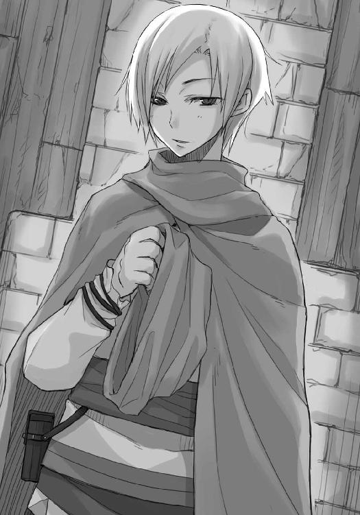
「クラフト・ロレンスです」
「クラフト？ ロレンス？」
「商売上はロレンスです」
「オレはエーブだ。ボランというのは好きじゃなくてね。それと、化粧をして髪をつければ自分の顔が男の目にどう映るかは把握しているつもりだがね、褒められるのもまた好きじゃない」
先手を打たれ、ロレンスはすんでのところで口を閉じた。
「隠せるなら隠すつもりだったんだが」
女であることを、だろう。
他の誰かに見られるのが嫌なのか、エーブはすぐに頭巾をかぶり、紐で固く縛ってしまう。
綿で包んだナイフではないが、ロレンスの胸中にはそんな感想が浮かんだ。
「オレも本来は無口なたちじゃなくてね、どちらかといえばお喋りだ。愛想も悪くないと自負している」
「愛想のところは、おいおい印象を変えていこうかと思います」
どういうわけか素顔を晒して饒舌になってくれたのだから、こちらも付き合わなければと軽口を出してみる。
相手が女とはいえ、箱入りのお嬢様相手でなければ緊張することもない。
「面白い奴だな。さすがあの爺さんに気に入られるわけだ」
「恐縮です。ですが、私は貴女とは短い挨拶しか交わしていなかった。気に入られた原因がわかりません」
「商人はひとめぼれをしない。だから残念ながらそうではない。まあ、顔は悪くはないと思うがな。で、オレが声をかけたのはな、単純に他人と話したかったからさ」
頭巾の下にあった顔つきからするとかなりがさつな喋り方だが、どことなくホロと同じ匂いがする。
うっかりしていると足元をすくわれそうだった。
「光栄にも私を選んでくれた理由は？」
「一つはアロルドの爺さんが気に入ったこと。あの爺さんは人を見る目だけは確かだ。もう一つは、オレの頭巾の下を見抜いたあんたの連れ」
「連れ？」
「そう。あんたの連れ。あれは、女だろう？」
あの見た目で少年と言われたら、それこそ道楽者の金持ち貴族が喜びそうな話だ。
ただ、ロレンスもエーブの言いたいことがわかった。
女連れで旅をしていたから、声をかけても大丈夫だと思ったのだろう。
「商談ならともかく、雑談をしながら女であることを隠し続けるのは難しい。自分が希少な存在だというのはわかっているからな。頭巾をはがしたくなる相手の気持ちもわからなくもない」
「どうしても褒め言葉になってしまいますが、頭巾を取ったら酒の入った商人連中は大喜びするでしょうね」
唇の左端を吊り上げてエーブは笑う。それだけでも、なかなかのすごみがある。
「だからな、雑談を持ちかける相手は考える。それに最も適しているのは枯れた爺か、女連れ」
妖精よりも珍しい女商人だ。日々の気苦労はロレンスになど想像もつかないほどなのだろう。
「だが、女連れの商人など滅多に見ない。大体女を連れているのは旅の聖職者か、旅職人の夫婦、あるいは旅芸人の夫婦だな。そしてこいつらと話しても話題がかみ合わずに面白くない」
ロレンスは少しだけ笑った。
「まあ、私の連れに関しては、色々と理由があります」
「もちろん詮索はしない。あんたら二人が旅なれた様子で、なおかつ金でつながっているようでもなかった。これなら話しかけても大丈夫。そう思ったわけだ」
エーブは喋り終えると水差しを催促してきた。
コップのない回し飲みの場でいつまでも酒を持っているのはよろしくない。
一つ詫びてから、手渡した。
「で、まあそういうわけだが、いきなり雑談しましょうどうですか、などと言えないだろう。だからリゴロの名を出汁に使ったんだが、あながち単なる出汁なわけでもない。あんた、リゴロに会いたいんだろ？」
頭巾の縁から視線を向けられるが、こちらからはその表情がまったく読めない。エーブは交渉術にも非常に長けている。
ロレンスはとてもこれを雑談とは思えず、依然商談用の頭で答えた。
「ええ、できれば早くに」
「その内容は詮索してもいいかい」
それがどういう意図を持ってのものなのかは測りかねた。
単純な好奇心か、あるいはどういった内容から会いたがっているのかを知って利用するつもりなのか、はたまた質問を投げてその反応からロレンスのことを試そうとしているのか。
ホロが隣にいればそれなりに優位に立てただろうが、どちらかといえば押され気味だ。
悔しいが、ロレンスは防衛に回るほかなかった。
「リゴロさんがこの町の年代記作家とお聞きしまして。この町に残る古い話の記録を見せていただきたいんです」
毛皮にまつわる話は機微に過ぎる。エーブの表情が皆目読めない今、それを出すのは危険すぎた。こちらはエーブのように頭巾で顔を隠していないので、警戒していることくらいは楽に見抜かれているだろう。
それでも、エーブはロレンスの言葉に一定の真実を嗅ぎ取ったらしい。
「また妙な目的もあったもんだ。てっきり毛皮に関する情報を仕入れるためだと思っていたんだがね」
「もちろん、私も商人ですからその情報が入るならばそれに越したことはありません。ですが、それは危険ですし、連れも望んでいない」
エーブを前に、下手な小細工は火傷の元と思われた。
「確かにあいつの書斎には何代にも渡って受け継がれてきたという山ほどの本がある。本人も日々それを読んで暮らすのが夢だそうだ。五十人会議の書記なんて役目はいつも辞めたがってるぜ」
「そうなのですか？」
「ああ。元々人付き合いが苦手なうえに、会議の内容を聞き出すにはうってつけの立場にいるだろう？ 次から次へと接触しようとする奴があとを絶たないんだよ。今正面から会いにいったら恐ろしい形相で睨まれて門前払いだろうぜ」
ロレンスは「なるほど」などと殊勝に返事をしておくが、エーブのほうももちろんロレンスが単純に話に聞き入っているとは思っていまい。
エーブは、そんなリゴロに、ロレンスを引き合わせられる、ということを匂わせているのだから。
「で、そう。あんたが気になっているらしいまさにそこだけどな、オレはここの教会を相手に取引していてな、その付き合いもなかなかのものだ。で、リゴロの奴も普段は教会相手に文字を書く仕事をしているからな。その縁で知り合って結構な時間になる」
疑い、はしなかった。
疑えばどうしても自分の中に先入観が生まれ、そこをエーブに気づかれたら簡単につけ込まれる危険性があった。
だから、あっさりと胸を開く。
「できれば、お会いして記録を見せてもらえるように取り次いでいただけると助かるのですが」
一瞬、エーブの口元が動いたように見えたのは気のせいではないだろう。
エーブもこの駆け引きをどこか楽しんでいるらしい。
「なにを商っているのか、とか聞かないのか」
「私の連れがなんの職業か、とは聞かれませんでしたから」
ホロと交わすものとはまた違った緊張感に満ちた会話。
ただ、ロレンスは心の底で呟いた。
楽しい、と。
「えふ......」
だから、そんな咳き込むような笑いが聞こえた時、自分の口から出たのかと一瞬思ってしまった。
「うはっはっは。いいな、これはいい。女連れの若い商人なんざ、と少なからず思っていたが、声をかけてよかった。商人ロレンス。あんたが傑物かどうかはわからないが、十把一絡げの有象無象とはちょっと違うらしい」
「褒めていただき恐縮ですが、握手をするならもう少し待っていただかないとできませんけどね」
エーブが、にんまりと口を笑みの形にした。
思わず牙が生えていやしないかと確認してしまうくらい、知り合いの誰かさんにそっくりな笑い方だった。
「掌に汗をかくような間抜けじゃないだろう。さっきっから底の読めない顔をずっと保っているんだ。これはアロルドの爺さんも気に入るわけだ」
それはさすがに世辞だと受け止めておく。
「では、なにを商っているのか聞く代わりに、一つお聞きしてもよろしいですか」
エーブは口を笑みのままの形にしていたが、絶対に目は笑っていないだろうと確信が持てた。
「なんだい」
「ええ。紹介料はいかほどで？」
底の見えない真っ暗な井戸の中に石を落とす。
その井戸は、どれくらい深くて、底に水があるのか、ないのか。
しばらくして、音が返ってきた。
「金も物もいらない」
乾いているのか。
ロレンスはそう思ったが、エーブは水差しをロレンスのほうに勧めながら、こう付け加えた。
「ただ、オレと雑談してはくれまいか」
返ってきた音は、思いのほか湿っぽかった。
ロレンスは敢えて顔から表情を消し、冷淡な目を向けて露骨にその言葉とエーブの顔を吟味する。
エーブは、笑って肩をすくめた。
「あんたうまいな。なに、噓じゃない。奇妙に思われるのももっともだろうがね、オレにとっちゃ女であることを隠さずに雑談できる相手、特に商人というのはリマー金貨より尊い」
「ではリュミオーネ金貨よりかは価値が低い？」
茶化された時の反応で井戸の深さが知れる。
エーブはもちろんそのことを知っていたようだ。
「オレは商人だ。どちらにしても金が一番さ」
なんの気負いもなく、笑みを持ってそう言われた。
ロレンスも笑う。
この相手とならば、一晩中でも雑談に付き合えるだろう。
「だがね、あんたの連れがどういう奴かわからんからね。できればあんたとサシがいい。側でむすっとされてちゃ酒もまずい」
ホロがそういうことで嫉妬したことはあっただろうかと少し記憶を探ってみる。
羊飼いのノーラと出会った時に不機嫌だったような気がするが、あれはノーラが羊飼いだからだったような気がしないでもない。
「それはないと、思いますよ」
「そうか？ 女心ほど訳のわからんものはないだろう？ 女のする話はよくわからねえし」
ロレンスは口が「お」という形になってしまうのを止められなかった。
してやったり、とエーブが小さく鼻を鳴らす。
「ま、オレはここに商売に来ててな、のんびりもできないが、都合が合うなら話の相手をして欲しい。こう見えてもな」
「お喋りで愛想がいい」
反撃を打ち下ろすと、エーブはかすれた声ながら少女のように笑って肩を揺らした。
「ああ、そうだ」
ただ、その言葉は軽い調子でも響きはとても真摯なものだ。
どういういきさつで女一人の商人をしているのかはわからないが、欲望渦巻く商人の世界を女の身一つで泳いでいくのは並大抵のことではないだろう。気軽に雑談すらできないのもきっと自衛のためだ。
ロレンスは水差しからぶどう酒を一口飲み、三階へと続く階段のほうをわざとらしく振り向いてから、こう答えた。
「連れが嫉妬しない程度になら」
「おお、そりゃあ大変な条件だ」
そして、二人で商人らしく声なく笑い合ったのだった。
会議が終わるのは夕方近くになってからだろうということだったが、エーブに所用があり同道できないので先にリゴロの家人に話を通しておいてくれるとのことだった。
なので、昼を過ぎてしばし休憩したのち、ロレンスとホロの二人連れで宿をあとにした。
リゴロの家は町の中心からやや北にずれた区画にあるらしかった。
その区画には土台部分や一階部分がしっかりとした石造りの家が立ち並び、それなりに裕福な者たちが住む区画に見えるのに、その割に雰囲気が良くない。家々は木で増築を繰り返され、せり出した壁が道を挟んで頭上でぶつかり合っていそうな感じがする。
元々は金持ちたちが住んでいたのだろうが、時の経過と共に没落していった区画らしい。
代々裕福な家系は金を使うことそのものには喜びを見出さないが、成金は違う。
金があれば形にしたがり競って家を増築していったのだろう。
ただ、増築したはいいものの、そのせいで区画の景観は台無しになり、薄暗い路地には野良犬や物乞いがやってきてうらぶれた雰囲気をまとい出す。
そうなると本当に金のある者からそこを離れ、どんどん建物の値段が下がり、区画の質も下がっていく。
大方、ここは金貸しや中堅の商会の主たちが家を構えていたのだろう。
今は職人の徒弟や露天商などが住んでいるようだった。
「それにしても狭い道じゃな」
石畳の道は両脇の建物の重さのせいか歪んでいるうえ、生活に困った連中に売り飛ばされたのか、そこかしこで石が抜き取られていた。
そこに水が溜まりうらぶれた雰囲気を一層濃くしていたのだが、道の狭さがそれに拍車をかける。ホロと並んで歩くこともできず、前から人が来たら壁に張りつかないとならないだろう。
「不便といえば不便だが、俺はこういう猥雑なところが好きだな」
「ほう」
「長い年月をかけてできたって感じがするだろう？ 傷だらけの道具類のように、少しずつ形を変えていって、ついには無二のものになるような」
後ろのホロを振り向くと、ホロは壁をなぞりながら歩いていた。
「川の形が変わっていくようなものかや」
「......残念だが、その例えは理解できない」
「ふむ。ならば......人の心などはどうじゃ。魂、とかいったな」
突然身近な例になり、ロレンスは少し頭の切り替えが鈍ったが、「そうだなあ」と答える。
「取り出して、形が目に見えれば、そんな感じかもしれない。少しずつ削れていたり、傷ついていたり、修復してあったりして、一目見れば俺だとわかるような、な」
喋りながら道をほとんどふさいでいる水溜りに突き当たり、ロレンスが先に大股に渡り、振り返ってホロに手を差し出す。
「どうぞ」
わざとらしく慇懃に言うと、ホロもまた大仰に手を預け、ひょいと水溜りを飛び越えてロレンスの側に立つ。
「もしもぬしの魂とやらが取り出せたなら」
「ん？」
「きっと相当わっちの色に染まっておるじゃろうな」
まっすぐに見上げてくるホロの琥珀色の瞳にも、もうあまりたじろがない。
さすがにそろそろ新鮮味もなくなるというものだ。
ロレンスは肩をすくめて、歩き出した。
「染まるというよりも、毒されているという表現のほうがしっくりする」
「だとすれば、猛毒じゃな」
するりと先に進み出て、肩越しに振り向いて得意げに言った。
「なにせ、わっちの笑顔にイチコロじゃからな」
毎度毎度よく思いつくものだと感心しながらロレンスは言葉を返す。
「で、お前の魂は何色なんだ」
「何色？」
ホロは聞き返しつつ、はて、とばかりに前を向き直した。歩く速度が遅くなり首をかしげているのも後ろから見えた。ロレンスはそんなホロに追いついたものの、道が狭いので追い抜くこともせずに後ろから軽く覗き込む。
なにか、両手の指を折ってはぶつぶつと呟いていた。
「ふむ」
そして、ロレンスが自分の手元を覗き込んでいることに気がつくと、ホロは顔を上げて後ろに寄りかかるようにロレンスのことを見た。
「色々じゃな」
「......へえ」
一瞬真意がわからなかったが、それがホロの恋愛遍歴なのだろうとすぐに気がついた。
ホロも長いこと生きているのだから、恋の一回や二回はしたはずだ。口のうまさから、相手が人のことも多々あったのだろう。
ホロが立ち止まると道がふさがってしまうので、ロレンスはホロの小さな背中を軽く押して歩くようにと促した。
ホロはおとなしく歩き始める。
隣にいることが多いので、あまり後ろ姿というのを見る機会がなく、それはちょっと新鮮な感じだった。
その後ろ姿はとても華奢で、厚着をしていても線の細さがよくわかる。歩き方も大股ではなく、また早足でもないので静々といった表現がぴったりくる。その上どことなく寂しげな様子が背中にあったりすれば、抱きしめたら柔らかそうだな、と思ってしまうのもしょうがないはず。
こういうのを、保護欲がそそられる、というのかもしれない。
ロレンスは苦笑まじりにそんなことを思い、そして、ふと疑問がわいた。
ホロは指折り数えていたが、一体何人の男がこの小さな肩を抱いたのだろうか、と。
その時に、ホロはどんな顔をしていたのだろうか。嬉しそうにして、甘えるように目を細めていたのだろうか。あるいは、耳を震わせ、嬉しさを隠し切れないように尻尾を振っていたのだろうか。
手をつなぎ、肩を抱かれ、ホロも子供ではないのだから......。
ロレンスは、胸中で呟いていた。
自分以外の誰かに？
「......」
そして、そんなことを思った瞬間に慌ててその考えを頭から追い出した。
嫌な色の炎が、ちろりと胸の奥底で舌を出したからだ。
崖から落ちそうになった時のように動悸が激しくなっていた。火が消えていると思って炭に触れてみたら、大火傷を負ってしまったような、そんな驚きともいえた。
ホロは指折り数えていた。
それはとても当たり前のことなのに、想像の中でホロの細い指が一回折れるたびに、心のどこかが折れるようで、挙句、くすぶるような怒りを伴った。
その感情を間違えることなんてない。
真っ黒い独占欲。
自分自身、それに呆れてしまう。なんて身勝手な生き物なのかと。
商人などという欲望の権化のような職を生業としているのに、ロレンスはそう思った。
この思いの罪深さは、自分だけ金が欲しい、という比ではない。
「で、反省はしたのかや」
だから、ホロが振り向いて蔑むような目を向けてきた時、どんな聖職者の戒めの説教よりも深く深く応えたのだった。
「......なんでもお見通しだな」
座り込みたいほど心が重たかった。
だからロレンスが気だるげに答えると、ホロは意外にも牙を見せて笑ったのだ。
「わっちも同じじゃからな」
「......」
「楽しそうに、これ以上ないくらいに楽しそうに、あんな色気のかけらもないようなのと話しおって」
そして、その瞬間のホロの顔は、怒っていた。
怒った顔はこれまで何度も見てきたが、それはその中でもっとも醜悪な形相をしていた。
ロレンスは胸中で呟く。ホロは賢狼なのだ、と。
「商人として楽しかったんだ、と言って通じるか」
一応の言い訳を試みる。
ホロは立ち止まり、ロレンスとの間が詰まってからまた歩き出した。
「わっちと金儲けのどちらが大事なの、と言って欲しいのかや？」
その台詞は、孤独に商売をする行商人連中が一度は女に言われてみたい台詞の上位三位に入るだろう。
そして、ほとんどの商人が頭を抱える問題のはず。
ロレンスは両手を上げて降参した。
「もっとも、わっちが怒る理由はぬしが思ったこととまったく同じじゃからな。それは実に身勝手な、子供じみた発想と言ってもよい。じゃが、わっちらは知恵と言葉を持ち、話し合うことができる。じゃからわっちは怒らぬ」
「......」
ホロは経験を経てきた賢狼なのだ。
剣を握りたてのロレンスでは太刀打ちなどできない。
しばらく少ない語彙の中から言葉を探していたが、結局適当なものが見つからなかった。
「悪いと思ってるよ」
「本当に？」
ホロに噓は通じない。
「本当に」
しかし、ロレンスが答えてもホロは振り向かない。
正解から外れるような回答だったろうか、と少し不安になる。
ホロは相変わらず静々と歩きつつ、やがて分かれ道に突き当たった。エーブに教えてもらった道順だと突き当たりを右だ。
やや気まずかったが、ホロが立ち止まったのでロレンスは口を開いた。
「そこ、右だ」
「ふむ」
そして、ホロは振り向いた。
「ここが分かれ道じゃな」
なんの、とは聞かない。
ひとまずはそれが第一関門だったらしい。ホロの右眉が少しだけ動いた。
「ぬしはその身勝手な独占欲にどう整理をつけるかや？」
そんな聖職者のような質問をするのか、と正直抗議をしたいくらいだった。
建前としては、あまりに自分勝手な黒い気持ちなのだからなくすのが当然だが、本音としては当然消せるわけがないものなのではないか。
ロレンスはそう思い苦々しい顔でホロのことを見返した。
だが、とも思う。
相手は賢狼ホロなのだ。気まぐれで相手を追い詰めるような質問をするとはとても思えない。
つまり、それが万人にとって正解ではなくても、ホロならそれを正解とみなすものがあるのかもしれない。
どうすればそれにたどり着ける？
ロレンスは考えた。
ホロはついさっき、自分も同じ気持ちだと言った。
ならば、正解はロレンスから見たホロの中にあるのではないか。
自分にとっては絶対に解けないように思われる難しい問題も、他人から見れば実に簡単に答えがわかる、なんていうことは珍しくない。
ホロ自身、独占欲からくる嫉妬心の扱いに困っているのかもしれない。
そして、ホロ自身が、その気持ちの整理の仕方を欲しがっているのではないか。
もしもそうであるのなら、他人事として考えるならばすぐに答えを出すことができる。
ロレンスが口を開くと、ホロが少し身構えたのがわかった。
「俺の答えはな、その気持ちに整理などつかない、だ」
静かな湖面に波紋が一つだけ生まれた。
そんなホロの表情に、豊かな彩が戻るためにはもう一つ投石が必要だ。
「ただし、それには自己嫌悪を伴って」
開き直りも、または逆の無我の境地も正解ではないと思った。
もしもこの問題を自分自身のことではなく、ホロのこととして置き直して考えてみれば、それが一番自然で、また、独占欲を向けられる側としては嬉しいことと思えた。
結局、それは自分だけのものでいて欲しいという願いなのだから、程度さえ間違えなければ、向けられて嬉しくないはずがない。
だからそう答えたのだが、ホロはしばし無表情だった。
それでも、ロレンスは目をそらさなかった。これが最後の関門のような気がしたからだ。
「んふ。で、右だったかや？」
とはいうものの、ホロが笑いながら首をかしげてくれた時には、ほっと安堵のため息をついていた。
「しかし......くふ」
「なんだよ」
「独占欲と自己嫌悪、かや。なるほどの」
ホロは笑い、にやりと牙を見せる。
それがとても不自然なものに思えた瞬間、ロレンスは右の道に向かって歩き始めたホロの背中を追いかけることができなかった。
「どうしたかや？」
振り向いたホロの顔は相変わらずのにやにや顔。
もしも、ロレンスがホロの満足いく答えを出していたのなら、ホロはこんな笑みを浮かべないはず。ロレンスが想像していたのは、ほっと安堵するかのような笑みか、まったく興味なさそうな仏頂面のどちらかだ。
ではこんな笑顔はどんな時に浮かべるのか。
ロレンスは、またしても自分の顔が赤くなるのを自覚した。こんなに一日に何度も赤面していては、そのうち赤ら顔になるのではと心配になるほどだ。
「くっくっく。気がついたかや」
ホロは笑いながら引き返してきた。
「ぬしが問題の難しさに苦悩して、発想を転換させ、回答に至るのが顔からよーく見て取れた。じゃが、少し考えてみればすぐにわかること。誰かに相談された時に返す、自分が正しいと思う答えはな、そっくりそのまま相手にそうあって欲しいと思うことじゃ。ということは？」
そう。
つまり、ホロは自分の悩みを解決するためにロレンスの言葉を待っていたのではない。
ホロは、ロレンスが自分の頭の中身をさらけ出すのをてぐすね引いて待っていたのだ。
「嫉妬して、じゃがそれに苦悩して。そんなわっちをお望みかや？ さしずめ、ぬしはそんなわっちに優しく手を差し伸べる役かや。わっちは可愛らしくめそめそと自己嫌悪で泣きながら、そして差し伸べられるぬしの優しい救いの手にすがればいいわけじゃな？」
「ぐっ......」
心をえぐられる、というのはまさしくこのことだ。
辱めを受けた少女が両手で顔を覆いたい気分が心の底から理解できた。
牙を持つ狼は、するりとロレンスの側に体を滑り込ませてくる。
ただ、徹頭徹尾ホロが楽しんでいるように見えなかったのが救いかもしれない。
ここまでやられればロレンスでもわかる。
エーブと楽しそうに会話したことを嫉妬していたのはきっと本当で、これはその憂さ晴らしなのだ。
「ふん、ほれ、行くぞ」
ロレンスのまったく隠せていない表情から胸中を読んだのか、ホロはこのへんにしておいてやろうとばかりにロレンスの手を引っ張って歩き出した。
ここまでやればきっとホロは機嫌を直してくれるだろうし、エーブと二人で商人として楽しく会話することも大目に見てくれるだろう。
ただ、迂闊だった、と思わなくもない。
ロレンスは、自分の願望をあまりにも赤裸々に白日の下に引きずり出されてしまったのだから。
「で、ぬしよ」
右に入った道の悪さは相変わらずだったが、多少広くてホロと並んで歩くこともできた。
なので当然のように隣を歩くホロがまた当然のようにいつもの調子で声をかけてきた。
「今度は純粋にわっちがぬしをからかう目的で聞くんじゃがな？」
こんな前振りをされても、ロレンスは捌かれるのを待つ兎なのだ。
「わっちが数えた人数、聞きたい？」
そして、純真無垢な満面の笑顔で振り下ろされたのは、あまりにも巨大な牛刀だった。
「俺は自分の心がいかに繊細なのかを改めて知ったよ」
満身創痍の中、そう答えるのが精一杯だが、ホロのお気には召したらしい。
嗜虐欲をたっぷり満たしたと顔に大書して、ロレンスの腕に抱きついてきた。
「ぬしのその繊細な心が冷えて固まる前に、たっぷりわっちの爪で傷をつけておかぬとな」
もうなにも言えずただホロの顔を見下ろすことしかできない。
すぐ側にあるホロの顔は、信じられないことに微笑ましいいたずらを仕掛けて喜ぶ少女のようだった。
しかし、どんな悪夢もやがては覚めるものだ。
エーブから教えてもらった、三本足の鶏を象った青銅の看板がぶら下がった家が見つかると、ホロはようやく狩りをやめてくれた。
「さて」
口火を切ったのはロレンスで、それでも恥ずかしかったり悔しかったりで、妙におどけた口調になってしまった。
「気難しい人らしいからな。慎重にいこう」
ロレンスが腕を離すともなしにホロはすり抜け、「うむ」とうなずいた。
「ぬしとの心地よい夢のようなやり取りは終わり、またつまらぬ現実かや」
どこまで本気かわからない小さい呟きに、ロレンスも小さい呟きで意地悪に言葉を向けた。
「なら、宿に帰ってまた眠ったらどうだ」
「む......それもよいかもしれぬ。もちろん、眠りに落ちる時に数えるのは羊の数ではなく......」
意地悪さではホロのほうが上。
ただ、妙にしつこくその話を出してくるので、ロレンスは開き直ってこう言った。
「で、何人なんだ？」
詳しく知りたくもないが、知りたくないかと言われれば噓になる。
ホロがやたらとその話を出すのでもしかしたらゼロなどということもあるのかもしれない。
そんな希望を持っていなかったといえばこれもまた噓。
ただ、その質問にホロは口を開かなかった。
表情を全て隠して、微動だにしない。
その顔は今まで誰も触ったことがないかのような無垢の人形に見える。
それがふりなのだと気がついた時、勝てない、とロレンスは思った。
「男は、その中でも俺は、本当に馬鹿な生き物らしい」
ロレンスが言うと、息を吹き返したホロはくすぐったそうに首をすくめて、笑ったのだった。
リゴロの家の軒下にぶら下がっている三本足の鶏は、大昔にこのレノスの町の側を流れるローム川が近く氾濫することを予測した鶏を象ったものらしい。
教会は神の使いだと言うが、言い伝えでは星と月と太陽の配置から、すなわち当時からすでにあった天文学の記録からそれを予言したのだという。
以来、その鶏は知識を活かす知恵の象徴として扱われることとなった。
代々年代記作家をしているらしいリゴロの家系は、自分たちの記した無味乾燥の知識が、いつしか未来を指し示す道しるべとなることを願っているのだろう。
銀メッキが施されたノッカーを叩き、ロレンスは一つ咳払いをした。
エーブを通じてすでに連絡が来ているはずだったが、あれほど交渉術に長けたエーブをして、難物と言わしめるのだ。どうしても緊張する。
少し後ろで手持ち無沙汰にしているホロが、情けなくもとても心強い。
しかし、もしかしたらそもそもエーブに圧倒されてしまったのは、ホロと出会ってこんなことを思うようになってしまったからかもしれない。ホロと出会う前はもちろん頼れるのは自分だけ。絶対に負けられないという気概があったし、負けたら終わりだという恐怖があった。
頼れる仲間がいることはいいことなのか悪いことなのか。そんなことを考えている最中に、扉がゆっくりと開かれた。
いつだって、扉が開いてその向こう側にいる人間の顔が見えるまでの時間が一番緊張する。
ゆっくりと開かれた扉の向こうには、髭だらけの初老の男性が......。
いなかった。
「どちら様でしょうか」
扉を開けて出てきたのは意外な格好をしていたという意味では少し驚いたが、緊張をする類のものではなかった。
二十歳になるかならないかだろうか。綺麗に額まで薄手の布で覆った、黒が基調の清楚な修道服を着込んだ修道女だった。
「エーブ・ボランさんの紹介なのですが」
「あ、承っております。どうぞ」
わざと名乗らなかったのだが、この修道女の人がいいのか、それともエーブが信頼されているのか。
ロレンスはどちらとも判断できずに、案内されるままにホロと共に家の中に入った。
「こちらにお掛けになってお待ちください」
家の中に入るとすぐに居間になっていて、木組みの床には色褪せた絨毯が敷かれている。
家具はどれも立派とはいえないが、長い年月を経てきたことを示すように飴色になっていて、この家の主がこの区画に古くから住んでいることを窺わせた。
年代記作家と呼ばれる人種を初めて見たのが異教徒の町クメルスンでのディアナだったので、もっと雑然とした部屋を想像していたのだがその部屋は思いのほか綺麗に片づいていた。
壁に備え付けの棚にはぎっしりと本が詰まる代わりに縫いぐるみや刺繡が飾られ、少し綺麗な棚には女性でも簡単に持てるくらいの聖母の石像があったが、そのすぐ隣にはニンニクやタマネギなどもぶらさがっている。ここが年代記作家の家なのだということを示すものといったらきちんとまとめられた羽根ペンやインク壺、それにインクを乾かすための砂が入っているのだろう小櫃くらいのもの。いかにもそれらしいといった羊皮紙や紙の束は目立たない場所にひっそりと置かれていた。
ホロも同じ感想なのか、少し意外そうに部屋の中を眺めている。
もっとも、普通の家には今すぐにでも宣教の旅に出られそうな格好をした修道女はいない。
聖母の石像や三本足の鶏を象ったレリーフは、多少お金に余裕のある信心深い家ならあるかもしれなかったが。
「お待たせしました」
エーブから聞いていた話ではリゴロは相当の難物だということだったので、難癖つけられて待たされるものだと覚悟していたが、これもまた意外なほどすんなりと会えるらしい。
柔らかな笑みと、とろとろに煮込んだスープのような物腰の修道女に案内され、ロレンスたちは居間から続く廊下を通って奥の部屋へと歩いていった。
ホロも見た目は修道女に見えなくもないが、やはり本物の修道女の楚々とした振る舞いは根本から違う。こんなことを思っていることがばれたらホロは怒るだろうな、と思った矢先に後ろから少し足を蹴られた。
きっと頃合を見計らってそうしただけなのだろうが、ロレンスとしては背中のボタンを外して心の中でも覗いていたのかと思いたくなる。
「リゴロさん、入りますよ」
こんこんと扉をノックする音も卵を上手に割るかのようだった。
しかし、その卵の中から何色の黄身が出てくるかわからない。
ロレンスはすぐに頭を切り替えて、扉の向こうから聞こえてきたくぐもった返事のあとに開けられた扉をくぐり、その部屋の中に入った。
直後、ほう、と驚きの声を上げたのはホロだ。
ロレンスは、もっと驚いていて声が出なかった。
「やあ、これは嬉しい反応だ。メルタ、ご覧、驚いてくれたぜ」
張りのある若々しい声が部屋の中に響くと、メルタと呼ばれた修道女は鈴を転がしたように笑った。
扉をくぐった先の部屋はやはりディアナの部屋のように乱雑に散らかっていた。
しかし、それは計算されつくした乱雑さ、とでもいえばいいのか、洞窟の中から明かりの見える出口に向かうように、扉から入った真正面に向かって本や書類が積み上げられ、天井からぶら下がっている木で作られた鳥の模型の向こうには、壁一杯に張られたガラスと、さんさんと注ぎ込む日光に照らされた青々とした庭園があった。
「ははは、すごいでしょう？ 方々手を尽くせば一年中緑を絶やさずにいられるんですよ」
そう言って自慢げに笑うのは、綺麗に仕立てられた襟付きのシャツと、貴族のように皺一つないズボンを穿いている栗色の髪の毛をした青年だった。
「フルールから聞いてますよ。僕に妙なお願いをしたがっている人がいるって」
「......これは、どうも......。ロレンス、いえ、クラフト・ロレンスです」
ようやく我に返ったロレンスはいつもの調子を取り戻してリゴロが差し出してきた手を取ったが、どうしても目は立派な庭園のほうに向いてしまう。
道からは決して見えない、建物に囲まれた秘密の花園。
そんな陳腐な表現が頭にこびりついて離れなかった。
「僕の名はリゴロ・デドリ。よろしく」
「よろしく」
そして、リゴロの視線がホロに向けられた。
「あ、こちら共に旅をしている......」
「ホロという」
初対面の相手だろうと決して物怖じしないホロだが、それだけでなくどのように振る舞えば相手が喜ぶか瞬時にわかるらしい。
妙に偉そうな自己紹介を受けて、リゴロは怒るどころか手を打って喜び、握手を求めていた。
「さて、自己紹介も終わりましたし、僕は自慢の庭園を褒めてもらっただけで満足だ。御礼に僕はなにをして差し上げればよろしいのでしたっけ？」
商人の中には時折恐ろしいほど性格に裏表のある者がいるが、リゴロはともすればそういう連中の仲間に見えなくもない。
ただ、ロレンスたちのために気を利かして小さな椅子を持ってきてくれたメルタがそんなリゴロを見て小さく笑っていたので、きっといつものことなのだろう。小さくうなずくように頭を下げて部屋をあとにしたメルタが噓つきでなければ、の話だが。
「エーブ・ボランさんからお聞きかとは思いますが、この町に残っている古い言い伝えの記録などを見せていただけないか、と思いまして」
「ほほう。その話は本当だったのか......。フルール......ああ、商人さんたちにはエーブでしたね。彼女は茶目っ気が強すぎるので、親しくなるとすぐ人にいい加減なことを言うのですよ」
ロレンスは、なるほどと笑った。
「リゴロさんが長い髭を顔一杯に蓄えた渋面の隠修士でないのはそういう理由からなのですか」
「ははは。また好き勝手言われていたらしい。しかしね、隠修士というのはあながち間違いでもないのです。ここのところ人に会うのは極力断ってきましたからね。それこそ人間嫌いの難物のように」
不意に声の調子が落ちたかと思うと、その笑顔の下にちらりと冷たい顔が見えた。
この町で功成り名を遂げた者たちが集う五十人会議で書記を務めているのだ。そんな一面があっても驚くには値しない。
「私も外地の商人ですが、お会いしても大丈夫なのですか？」
「うん。頃合がよかった。神のお導きというやつかもしれない。この服を見てください。まるで葬儀の列を先導する子供のようでしょう？ ついさっきまで会議でね、ようやく結論がまとまったから早めに閉会になったんですよ」
それが本当ならばまさしく神のお導きだが、会議の結論が出るのがずいぶん早いなとロレンスは思った。
アロルドの目算では春にずれ込むかもしれない、ということだった。
誰かが強硬に採決したのだろうか。
「へえ、さすがあの強情な娘から紹介された商人さんだ。油断ないですね？」
考えていたことを見透かされていたのか、と思って慌てて取り繕うのは三流だ。
ロレンスは本当に人の心を見抜くとしか思えないホロといるのだ。
それがかまかけかどうかくらいすぐにわかる。
「え？」
だからロレンスは無知を装ってそうとぼけたのだが、リゴロはずっと笑顔のままだった。
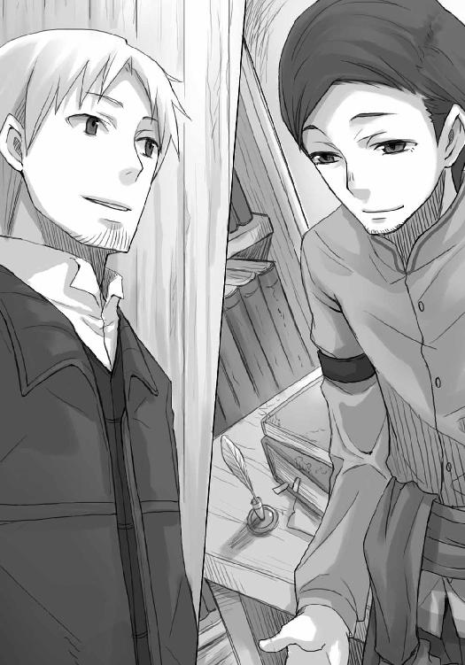
「虚々実々のやり取りばかりしていると訳がわからなくなってしまう。裏の裏が表のように」
かまかけだと見抜き、とぼけたのがばれていたのだろうか。
ロレンスはかなりの自信を持って見破られはしなかったと思ったのだが、リゴロの目が笑顔のまま鋭くなった。
「僕は五十人会議で書記を務めていますからね。一度に複数の人の表情の変化がわかる。ロレンスさんの顔だけを見ていたらわからなくても、その隣にいる方の表情と一緒に考えれば、答えは自ずと見えてくる」
ロレンスの口が勝手に笑みの形になってしまう。名うての商人でなくても、こういう人間が世の中にはいるのだ。
「ははは。まあ、余興みたいなものですよ。僕が悪意ある人間なら手の内は明かしません。それに、相手の真意を見抜いたところで僕は自分の要求をうまく相手に伝えられない。それでは商人失格でしょう？」
「......残念ながら」
「だからなかなか女性にももてないのです」
確かにこの口のうまさは商人とは違う、とロレンスは笑って肩をすくめた。
宮廷に出入りする詩人のように喋り立てるリゴロは、口を動かしながら手も動かして、机の引き出しの中から真鍮製の鍵を取り出していた。
「古い本は全部地下にあります」
そして、軽く鍵を振るとついてくるようにと身振りで示し、奥の部屋へと歩いていった。
ロレンスはそんなリゴロを追いかける前に、隣のホロに視線を向けた。
「裏の裏は表だそうだ」
「わっちの顔まで見ておったとは......」
「あんな芸当俺も初めて見るな」
皆が皆好き勝手に喋る会議で正確に全ての発言を書き留めようとしているうちに身に着いた特技なのかもしれない。
誰がなにを言っているか把握するには、相手の表情を把握するのが一番だからだ。
「ま、悪意がないのは本当じゃろうな。子供のような奴じゃ。しかし、あんな特技を持っておるのが側におったら、心労もなく実にくつろいだ毎日が送れそうじゃな？」
ホロの意地悪そうな視線が向けられる。
たびたびすれ違いや勘違いを起こしてホロと喧嘩してきた身としては、その視線が突き刺さるように痛い。
「お前はいつも悪意に満ちてるな」
ロレンスが言うと、ホロは返事もせずにリゴロのあとを追ったのだった。
一階は床も壁も木造だったのに、地下の倉庫だけは総石造りだった。
テレオの村でも地下の穴蔵は石造りだった。やはり貴重な本は石で囲いたくなるのかもしれない。
ただ、隠すために作られた穴蔵としまうために作られた倉庫という大きな違いはある。
天井はロレンスが軽く上に手を伸ばせば届く程度で、床から天井までの高さの本棚がずらりと並んでいる。
しかも棚には年代ごと、内容ごとに札がかけられており、番号まで振ってある。
装丁はテレオの村で見たものとは比べ物にならないくらい貧相だったが、管理の手間は段違いにかけられているらしい。
「この町もやはり火事が多いですか」
「時折ありますね。お察しのとおりご先祖様はそれが怖くてこんなところに押し込んだのです」
あの庭園が見える部屋にはいなかったのに、話を聞いていたのかメルタは先回りして地下室の入り口で小さな燭台を持って待っていた。
ホロはメルタに案内されて目当ての本を探している。
獣脂の灯りでは匂いと煤で本が駄目になってしまうので高価な蜜蠟の火だ。
甘そうな灯りがちらちらと本棚の陰から見え隠れしている。
「ところで」
男二人手持ち無沙汰にしていたところ、リゴロがそう口を開いた。
「僕は堪え性がないのでもう聞いてしまうんですけど、一体なぜ何百年も前の言い伝えを？」
ホロとの関係を聞かないあたり、リゴロという人間の興味の中心がよくわかる。
「彼女が自分の起源を探しているんですよ」
「起源？」
その洞察力は希代の大商人もかくやといった具合でも、自分のこととなるとからっきしらしい。驚きをあらわにして、組んでいた腕を解いた。
「訳あって彼女が故郷に帰るための道案内をしているのですが、そのためです」
事実を少し省略して伝えれば、相手は足りない部分を勝手に想像する。
そうすれば噓をつかずに相手の目を真実から遠ざけられる。
リゴロも、引っかかったようだ。
「なるほど......。ということは、北に？」
「ええ、まだ詳しい場所がわからず、彼女が知っている言い伝えを頼りに特定しようという段階です」
リゴロは深刻そうにうなずいた。
ホロのことを、北の地で捕らえられ南に売り飛ばされた奴隷かなにかだと解釈したのだろう。北の地の子供は南のそれに比べてとても丈夫で素直だという話がある。子供がいなかったり唯一の跡取りが病弱であったりする貴族が、遺産を親戚に取られるくらいならば、と養子に買ったりする例も多い。
「この町にも時折北からの子供たちが滞在しますよ。無事故郷に帰れるのなら、それが一番良いことだ」
それには疑いなく同意して、無言でうなずいた。
そして、そんなホロが見当をつけたらしい本を五冊ほど抱えて本棚の陰から現れた。
「またいっぱい欲張ったな」
ロレンスが呆れたように言うと、ホロの代わりにメルタが笑顔で答えた。
「これで全部なので、一度に持っていったほうがよいかと思いまして」
「なるほど。ほら、いくつかこっちに。落としたら向こう三日間飯抜きになる」
それにはリゴロが笑い、結局ロレンスはホロの持ってきた本全てを抱えて、一階に戻った。
「本当はここで読んで欲しい、と言いたいところですけど」
メルタが丁寧に包んでくれた本の束を見ながら、リゴロは言った。
「僕はフルールを信用しているので、フルールが信用したロレンスさんも信用する。でも周りがそうとは限らないので......」
外地の商人が入り浸っていると、なにかと疑われることになるだろう。
「ええ、もちろんそれは」
「ただ、落としたり燃やしたりなくしたり売ったりしたら、向こう三日間飯抜きですよ」
冗談にしても笑えない。何事も金に換算しがちなロレンスではあるが、この本の価値が金に換算できないことくらいはよくわかっている。
うなずいて、束に手を置いた。
「商人としての命運を賭けた商品のように扱わせていただきます」
「うん」
リゴロの笑顔は少年のようだ。
エーブはこういうところに心を開いたのだろうか。
「では、読み終わったら持ってきてください。僕がいなくても、メルタはいるので」
「わかりました。お借りします」
ロレンスの目礼にリゴロは笑顔で応え、ホロには軟派に手を振っていた。
このあたりが商人ではなく宮廷詩人のように思わせる所以かもしれない。
ホロは満足げに手を振り返していた。
「荷物を持っていないから実に振りやすそうだな？」
道案内から荷物持ちまで、まるっきりの下男役をやらされているのだからこのくらいの皮肉は許されるだろう。
ロレンスはそう思っていたのだが、ホロはこう切り返してきた。
「ぬしも振られぬように口には気をつけるんじゃな」
そんな台詞を残して一人でひょいひょいと先を歩いていってしまうホロが憎たらしいと思わないでもない。
ただ、こんなやり取りも本当に仲が悪かったらできはしない、ということくらいロレンスだって十二分にわかっている。
問題は、ホロがロレンスを少しも立ててくれないことだ。
「豚はおだてれば木にも登るが、雄はおだてたところで調子にしか乗らぬ」
抗議は軽く封じられてしまった。
完全に否定しきれないところが問題なのかもしれなかったが。
「立つ瀬がないのに腹ばかり立つな」
ロレンスが言うと、ホロはわざとらしく手を叩いて、けらけらと笑ったのだった。
本を宿に置いたあと、約束どおりに夕食はホロの好きなものをということで、適当に入った酒場でホロが頼んだのは子豚の丸焼きだった。
口から肛門まで鉄串を通し、直火で炙りながらぐるぐる子豚を回し続け、時折木の実から採った油を塗ってまた焼いて、を繰り返す手間のかかる逸品だ。
こんがりいい具合に焼けたら子豚の口に香草を挟んででかい皿にドンと盛る。子豚の右耳がナイフで削ってあるのは、幸運が訪れますようにというおまじないだ。
普通は五人とか六人で、なにかのお祝いだったりする時に頼むもので、ロレンスが丸焼きを頼むとまず注文を取りに来た娘が驚き、焼き上がって運ばれてくると店中の男どもが「おー」と感嘆と羨望と嫉妬が混じった声を上げた。
そして、それに真っ先にむしゃぶりついたのがホロだというのを見て、「あー......」という同情のため息のようなものも聞こえてきた。
美しい娘を連れて歩いていれば敵意のこもった眼差しを向けられることも少なくないが、そいつがえらく金のかかる存在だとわかると皆揃って溜飲が下がるらしい。
ロレンスはホロが自分では肉が切り分けられないので仕方なく世話を焼いてやったが、肉を自分の皿に取り分ける気力もなく、こんがり焼けたぱりぱりの皮だけを切り取って食べていた。木の実の油が香り高くておいしかったが、こりこりとした歯ごたえがうまい左耳はホロに取られた。肉に合うのはやはりビールよりもぶどう酒で、そちらの消費もなかなかのもの。
ホロは文字どおりがっついていて、フードの隙間から綺麗な亜麻色の髪の毛がこぼれ落ち、子豚の脂がついてもまったく気にしていない。その様はまるっきり狼の食事だった。
結局、大した時間も要さずにぺろりと子豚一匹を平らげてしまった。
ホロが最後のアバラの骨をしゃぶり終えた時、店中から拍手が起こった。
しかし、ホロはそんな騒ぎも一向に気にせず、指についた脂をなめたりぶどう酒を飲んで盛大にげっぷをしたりしていた。妙に貫禄のあるその様に、店の酔っ払いたちは感嘆のため息をつく。
相変わらずそれらに無関心だったホロは、みじめな姿に成り果てた子豚を挟んで初めてロレンスと目を合わせ、ロレンスにだけ向けて微笑んだ。
ご馳走様ということなのだろうが、子豚をまるまる平らげてなお、狩りに余念がないらしい。
いや、次に腹が減った時のための非常食なのかもしれない。
そんな笑顔だけで頭が痛くなるような支払いのこともまあいいかと思えてしまうので、ホロの牙から逃れることを考えるのは諦めた。せいぜい非常食として巣穴に埋められたまま忘れられないようにしようと思うほかない。
それからしばらく休憩し、十日間は十分に賄えたくらいの代金を支払って酒場をあとにした。
毛皮の流通が多いせいで獣脂がよく取れるのか、帰り際に夜の道をぼんやりと照らすランプの数が他の町よりも多い気がした。
昼間とは違い、皆が皆顔を寄せ合うようにして小声で話し、ぼんやりと揺れる獣脂の灯りを吹き消さないようにと静かに歩く。
ホロは子豚を平らげたのがよほど満足だったのか、夢を見て微笑んでいるような笑顔のままゆっくりと道を歩いていた。
もちろん、はぐれないようにと、ロレンスの手を握って。
「......」
「え？」
ホロがなにか言ったような気がして、ロレンスが聞き返すとホロは小さく首を横に振った。
「良い夜じゃ、と言った」
ぼんやりと地面を見ながらホロは言い、ロレンスももちろんそれに賛成する。
「ただ、こんな夜ばかり続いたら......駄目になりそうだ」
一週間も続けば財布の中身は空になり、頭の中身がどろりと溶け出してしまうだろう。
ホロも同感だったらしい。
小さく喉を鳴らして笑った。
「塩水じゃからな」
「？」
「甘い、塩水じゃ......」
酔っ払っているのか、それともなにかと引っ掛けた言葉だったのか。聞き返そうとも思ったが喋ることすら無粋な穏やかな雰囲気だ。ロレンスは結局聞き返さずに宿に着いた。
町に住む人間は、どれほど酔っ払っていても歩ける限り必ず自分の家にはたどり着けるものらしいが、旅人の場合はちょっと違う。どれほど足にきていても宿までなら頑張れる。
ホロは宿の玄関の戸を開けた直後に膝から下がなくなってしまったらしい。
いや、とロレンスは思った。
これは狸寝入りだろう。
「おや。他の宿なら店主が顔をしかめるだろうぜ」
ロレンスたちが宿に入るなり、アロルドと共に炭火を囲んでいたエーブが相変わらず頭巾の下に顔を隠しながら、かすれた声で楽しそうにそう言った。
「それも一日目だけでしょう。毎晩となれば笑ってくれるに違いない」
「へえ、よく飲むのか」
「それこそ、ご覧のとおりで」
エーブは声なく笑って、酒を飲んだ。
ロレンスがホロを抱えるようにして二人の横を通り過ぎようとすると、椅子に座ったままずっと目を閉じて眠っているかのようだったアロルドがふと口を開いた。
「北の毛皮商だったか。話をしておいた。やはり今年は雪が少なく北に行くには好都合だと」
「わざわざありがとうございます」
「詳しく聞きたければ......また名を聞くのを忘れたな」
「コルカ・クース」
エーブに補足され、アロルドは「そんな名だったかな」と呟いている。
こののんびりとした空気の中もまた、いつまでもとどまっていたいような雰囲気だ。
「クースとやらは四階に泊まっている。夜は大体暇だと言っていた。詳しく聞きたければ訪ねればいい」
万事順調だ。
ただ、ホロが急かすようにロレンスの服を摑む手に力を込めてきたので、アロルドの言葉に礼を言い、軽く挨拶をして階段を上っていった。去り際に、エーブがすぐに下りてこいよとばかりにコップを掲げていたのが見えた。
一歩一歩階段を上り、ようやく部屋に着いて扉を開ける。
こうやってホロを抱えて部屋にたどり着くのは何度目だろうか。
ホロと出会うまでは、どれだけ深酒しようとも、どれだけ楽しいことがあろうとも、独りで宿に帰ればその酔いも気持ちもいっぺんに覚めてしまうような恐怖があった。
もっとも、では今なら恐怖がまったくないかといえばそんなことはない。
代わりにあるのは、あと何度こんなことができるのだろうか、という恐怖だった。
考えても詮ないことだとはわかっているが、ずっと一緒に旅をしよう、と言いたい気持ちがもちろんないわけではない。ずっと一緒にいられるのなら、どんな形であれそれが一番望ましいと今は思う。
ロレンスはそんなことに苦笑しながら、ベッドの毛布をはいでホロをまず座らせた。演技ではなく本気で眠りかけているのもわかるようになってきた。
ケープをはいでローブを脱がせて、重ね着している上着をとって、靴を脱がせて腰紐を解いて、と哀しくなるくらいに手際よくホロの体を楽にしてやって、そのままベッドに横たえてやる。
このまま襲ってもなにも気づきそうにないくらいよく眠っていた。
「......」
酒のせいかそんな考えがむくりと頭をもたげたが、ホロのいつものふてぶてしさを思い出してしまい、たとえではなく本当に最後まで気づかれなさそうな気がした。
これほど空しいこともそうそうないだろう。
そう思うと、泡が弾けるよりも早くしぼんでしまった。
「嫌な奴だ」
ロレンスは自分の身勝手さをホロのせいにして笑いながら呟き、その直後に驚いて少し体を引いた。
ホロが目を開けて、ゆっくりとこちらに焦点を合わせたのだ。
「どうした？」
変に慌てなかったのは、気分が悪いのではないか、という考えがすぐに頭に思い浮かんだからだ。
しかし、どうやらそういうわけでもないらしい。
ホロは毛布の下からゆっくり手を出してきた。
思わず握ってしまう。そんな弱々しさだった。
「......ぃ」
「え？」
「怖い」
言って、ホロは目を閉じる。
悪い夢の途中だったのか、と思った。しばらくして再び目を開けた時、ホロの顔にはちょっとした恥ずかしさが残っていたからだ。
思わず口をついて出てしまった、といった感じだった。
「お前に怖いものなんてあるのか」
なので殊更明るく言ってやると、一瞬だけ感謝するように笑ったような気がした。
「今のところなにもかも順調だろう？ 本は手に入った。なんの困難にも巻き込まれていない。北への道も今年は良好らしい。そして」
握ったホロの手を少し持ち上げて、また下ろす。
「まだ喧嘩していない」
これは効いたらしい。
ホロは笑って、再度目を閉じると小さくため息をついた。
「たわけが......」
そして、手を離して毛布の下に潜り込ませてしまった。
ホロが怖いものだなんて限られている。
それは孤独だ。
だとすれば怖いというのは旅の終わりのことだろうか。それならばロレンスだって怖いし、もしもそうであるのなら順調すぎる旅も逆に怖いかもしれない。
しかし、それにしてはホロの様子としっくりこない気がした。
ホロは長いこと目を開けない。このまま眠るのか、とロレンスが思うのと、ホロがなにかを待つように狼の耳をひくひくとさせ、小さく顎を上げるのは同時だった。
「......わっちが怖いのは......」
ホロは喋りながら、満足げに首をすくめた。
ロレンスの手が、なにかに導かれるようにホロの頭を撫でていたからだ。
「わっちが怖いのは、こういうこと」
「え？」
「わからぬか」
ホロは目を開け、ロレンスを見る。
蔑むでも怒るでも呆れるでもなく、どこか怯えるような色がある。
本当に怖いのかもしれない。
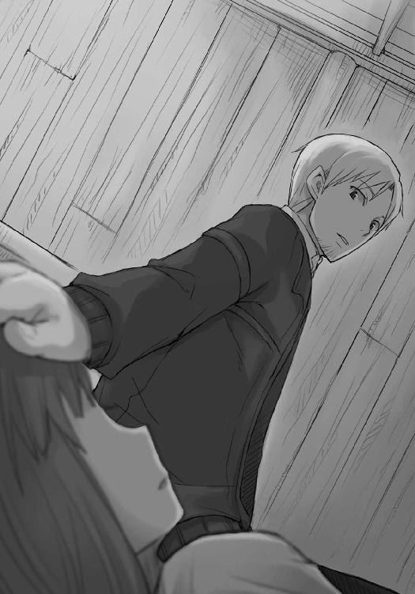
ただ、やはりロレンスにはなにが怖いのかわからない。
「わからない。それとも......旅の終わりが？」
やや思い切りが必要だったが、ロレンスがそう聞くと、ホロはどういうわけか安心したように表情を緩めた。
「それももちろん......怖い。久しぶりに、本当に久しぶりに楽しい時間じゃからな......。じゃが、それよりも怖いことがある......」
ホロの存在が一瞬遠くなった。
「わからなければよい。いや」
言って、再び毛布の下から手を出したかと思うと、自分の頭の上にあるロレンスの手を取って、どけた。
「ぬしまでそれに気がついたら、ちょっと困るかもしれぬ」
そして、おどけるように笑って毛布の下に手諸共に顔を潜り込ませてしまった。
不思議と、拒絶されたという気持ちはなかった。
どちらかというと、その逆だ。
やはり眠りに入るらしく、ホロは毛布の下で丸まっていく。
と、なにかを思い出したかのように再び毛布の下から顔を出した。
「下に行く分には構わぬが、わっちが嫉妬しない程度にな」
エーブの仕草に気がついていたのか、単なるかまかけなのか。
どちらにせよ正解なので、ロレンスは軽くホロの頭を小突いて答えた。
「俺は独占欲に自己嫌悪している娘が好きらしい」
ホロは牙を見せて笑ってくれた。
「先に寝る」
そう言って毛布の下に潜っていった。
ホロがなにを恐れているのかわからない。
ただ、できることならそれを取り除いてやりたいと思った。
ホロの頭を撫でた感覚がまだ残っている掌を眺め、その感覚が消え去るのを防ぐように軽く閉じる。
できればこのままずっと側にいたかったが、エーブにはリゴロを紹介してくれた礼も言わないといけない。
都合によっては明日にでも町からいなくなることがある商人だし、礼を言うよりも連れの女とよろしくやっているほうが大事な男と思われるのも非常によろしくない。
ホロが起きていたらまた容易に爪を引っ掛けられそうな気持ちだったが、こればっかりはどうしようもない。
ロレンスだって、人生の半分近くを商人として過ごしているのだから。
「では、お言葉どおり下に」
それでも小さくそう呟いたのは、なんとなしの言い訳のため。
酒場の娘に言った、財布の紐は握られていないが手綱はしっかりと握られているというのは本当にそのとおりかもしれないと思ったし、悔しいところだがそんなことはホロから見れば一目瞭然のはずだ。
「......」
やはりロレンスが怖いのは旅の終わりだけだ。
ホロはなにを恐れているのか。
ロレンスは、少年のように、首をひねったのだった。
二階では三人くらいの客が静かに酒を飲んでいるのが見えた。一人は商人ふうで、もう二人は遍歴職人に見えた。もしも三人ともに商人なら、あれほど静かに酒は飲まないだろうから、きっと予想は外れていないだろう。
一階に下りると先ほどと同じようにアロルドとエーブがいた。
時間が止まっていたのかと錯覚してしまうくらいに同じ姿勢で、二人とも黙って別々の場所に視線を向けていた。
「魔女がくしゃみでもしましたか」
時間が止まるといわれる迷信の一つだ。
アロルドは埋もれそうな瞼の底から軽く視線を向けただけ。
エーブが笑ってくれなければ、失言だったかと思っただろう。
「オレは商人だが、爺さんは商人じゃないからな。話なんて弾まない」
椅子の体裁を保っているものがなかったのか、エーブは空の木の箱を指差した。
「お陰さまでリゴロさんと無事会えました。陰鬱な顔をした御仁でしたね」
ロレンスが座ると、最愛の愛娘が来たって出迎えそうには思えなかったアロルドが、温めたぶどう酒を注いだコップを手渡してくれた。
「はは、そうだろう。あれほど陰気な男はいやしない」
「あの特技は羨ましかったですが」
エーブは、「見たか」という楽しそうな顔をした。
「あんた、リゴロに気に入られたな。あれと組んで商売したなら、ほとんどの商人は丸裸も同然だと思わないか」
「残念なことに、そのつもりはなさそうでした」
ああいうのを無欲な人間というのかもしれない。
「あいつは人生の喜びがあのうらぶれた屋敷の中で完結しているからな。庭園を見ただろう？」
「素晴らしかったですね。あれほど大きなガラスの窓は滅多にお目にかかれるものじゃない」
わざと商人丸出しの答えを返すと、エーブはうつむき加減の顔を上げて口元の笑みを見せつけるように笑った。
「オレはとても我慢ならんがね。発狂しちまう」
そこまでとはいかなくとも、ロレンスもわからないではない。
商人が金儲けのことを考えるのは、ほとんど呼吸に等しい行為だ。
「で、会議の話は聞けたか？」
エーブが頭巾の縁から瞳を覗かせる。アロルドは露骨に不機嫌そうな視線をエーブに向けて、顔を背けた。
ロレンスは会話を楽しむ笑顔を顔に貼りつけたまま、その下で商人の顔を用意した。
リゴロに会わせたのは、最初からこれが目的だったのでは、と思わなくもない。
「会議では結論がまとまったらしいですよ」
もちろんエーブからすればそれが本当にリゴロが言ったものかどうかの真偽は半々だろう。
ただ、それも事前の情報がなければの話だ。エーブが事前に手に入れていた情報と照らし合わせれば、色々見えてくることも多いに違いない。
「その内容は？」
「そこまでは残念ながら」
砂時計から砂が落ちるのをじっと待つ子供のように、エーブは頭巾の下からロレンスのことを見つめていたが、やがてそれ以上待ってもなにも得られないことがわかったらしい。
顔をそらして、酒に口をつけた。
攻守を入れ替える。
「エーブさんは聞き出しているんですか？」
「オレが？ はは、オレはあいつに警戒されているからな。だが、そうか、真偽のほどは別にして、リゴロの口からその言葉が出たとなれば......」
「案外本当なのかもしれません」
もしも本当に結論が出ているのなら、我慢できずに喋ってしまう連中が他にもいるはずだし、喋ったところで外地商人の利益にならないような結論だとすれば、困る者は誰もいない。
第一、公の会議とはそもそも内容が漏れることを前提で進められる節がある。
「ただ、気になるのは」
「ん？」
エーブが足を組み替えて顔を向けてくる。
「エーブさんがどういう目的でこの話を追いかけているのか、ということです」
アロルドが笑ったような気がした。
商人同士の会話の中では、利害の矢印の向きがあまりにも不鮮明だ。
「単刀直入だな。ちまい商売ばかりしてきたわけじゃないのか、それともろくに交渉してこなかったのか」
女とは思えない腹の据わった声。
いや、女の商人だからこそ腹が据わっているのかもしれない。
「オレも他の連中と同じだよ。どうにかしてここから大儲けを引き出せないか、そればかりだ。それ以外になにがある？」
「大損を回避する」
教会都市リュビンハイゲンでのことを思い出す。
頭ではわかっていても、経験しないとこういう発想は出てこない。
「人に目は二つあるが同時に二つは見えにくい。もっとも、大損の回避というのはある意味で正しい」
「というと」
ロレンスが訊ねると、エーブは軽く頭を搔いた。
アロルドがそれを見て髭の下で笑う。二人は気の合った相棒同士のようだ。
「オレは石像を商っているんだけどな」
「聖母の？」
リゴロの家にあった像が瞬時に頭に浮かんだ。
「ああ、リゴロの家にあったやつを見なかったか？ あれを西の海沿いにあるケルーベなんて港町、知ってるか？ あそこを経由して、ここの教会に売る。そんな商売をしていた。石を持ってきて売るだけの商売だから利益率は大して良くもないがな、これに教会が祈りを捧げた途端、高値で売れる。このへんは異教徒のほうが強い。毎年の大遠征もあるお陰で、ありがたそうに石像を買う連中がものすごく多かった」
教会の錬金術。クメルスンで人々の思惑と熱狂から黄鉄鉱の値段が高騰したように、信仰は容易に金に変わる。
一枚嚙ませて欲しいくらいだ。
「オレは残念ながらその利益には与れないがな、代わりにそこそこの量を取引していた。それが、今年は大遠征が中止になっていっぺんにおじゃんだ。教会ほど掌を返すのが速いところはないと痛感したぜ」
重く、かさばる石像を在庫として抱えることほどの悲劇もないかもしれない。
輸送費はかさむ。売れる場所は限られる。信用を用いて取引額を大きくしていたとなれば一気に息の根が止まってしまうだろう。
エーブほどの商人が危険を一箇所に集中させているとは思えないから即破産というわけではないのだろうが、痛手には違いないはず。
腹立ち紛れに投機に目がいってもおかしくはない。
「最近は南のほうでも教会の権威が失墜し始めているらしいからな。オレも沈む泥舟に荷物を預けるのはそろそろやめようかと思っていたわけだ。そこで、最後に一儲けして河岸を変えようかとな」
このへんは、一儲けしないと河岸を変えられない、という意味もあるかもしれない。
「で、せっかくだから大儲けできたら南のほうに行くかなと話していたわけだ」
誰と、というのは聞くまでもない。
隣のアロルドが、呟いた。
「巡礼の旅に出る頃合かもしれない」
それはほとんど、骨をうずめる場所を探しに行くのと変わらないだろう。
ロレンスが宿に来るたびに聞いていたその台詞も、にわかに現実味を帯びたようだ。
「そんなわけでな」
エーブが言って、ロレンスの視線を引き寄せた。
「あんた、オレに金を貸さないか」
脈絡があるようでない台詞。
ただ、あまり驚かなかったのは、ある種の予感のようなものがあったからかもしれない。
「オレは会議の内容について確度の高い情報を持っている。根回しもできる。あとは金がありさえすればいい」
両目を覗かせ、まっすぐにロレンスのことを見つめてくる。それはどちらかというと睨んでいるというほうが近いが、ある種の演技だというのがロレンスにはわかる。
「出資の内容を吟味し、危険と利益が釣り合うようであれば喜んで」
「毛皮の売買。利益はざっと投資金額の二倍」
これでよし乗ったと言う商人がいるなら見てみたいものだが、もちろんエーブもそれはわかっていたようだ。
声を落とし、演技をやめて表情を落ち着かせた。
「五十人会議は、条件付きで毛皮を外地商人たちに売ると決定を下したはずだ」
「情報の出所は？」
聞くのは無駄というものだろう。酒場で女の年を聞くようなものだ。
それでも、エーブがどう答えるのかは、重要な情報になる。
「教会」
「掌を返されたというのに？」
ロレンスが切り返すと、エーブは肩をすくめて笑った。
「たとえ喧嘩別れしても、内部に協力者を残しておくのが定石というやつだ」
もちろん信用はできないが、噓を言っているようにも見えない。リゴロから聞いたというわかりやすい答えよりも幾分信用できるような気がした。
「内容は？」
「外地商人は、毛皮を買う際に現金での購入しか認めないようにした」
町の毛皮流通が独占されるか否かの瀬戸際ということで、どんな決断を下すのかと思っていたが、ロレンスはその案のうまさに思わず言葉が口をついて出た。
「売らないとは言っていない。かといって、遠方から来る商人たちがジャラジャラ現金を担いできているわけがない」
「そうだ。だが、連中も手ぶらで帰るわけにはいかないだろうから、なけなしの現金で毛皮を買っていくだろう」
こうなると現金さえあればレノスの町の上質の毛皮を買い付け、よその町に持っていくことが可能だ。
ただ、気になったことがある。
そんなことをロレンスに喋ってしまうと、ロレンスがエーブを差し置いて一人で取引をしてしまうかもしれないというところだ。
「そんなお話を私にしてしまってよいんですか？」
「あんたが小遣い程度の儲けのみを考えているのなら、一人で取引をするがいい」
頭巾に隠れてエーブの表情が読めない。
これはロレンスを見くびっているのか、あるいはなにか一人では取引ができない条件があるのか。
迂闊な態度と言葉は慎むべき。ロレンスはそう判断して、エーブの言葉を待った。
「実際のところ、あんたが持っている現金なんて高が知れているだろう？」
「否定はしません」
「ならば、千載一遇の機会を無駄にすることもないだろう。あんたはリゴロの存在すら知らなかった。この町に金を貸してくれるような知り合いはいないんだろう？」
その言葉は確かに正しい。
ただ、ロレンスはほんの少しだけ背筋に冷たいものを感じていた。
もしかしたら、エーブが近づいてきたのはそもそもロレンスを出資者として吟味していたのかもしれない。こうなると情報と思考の量が圧倒的な差を持っていることになる。
ロレンスはエーブのことをまったく知らないのだ。
「ですが、いったん別の町に引き返して、そこで現金を用意することもできます。そもそも、それを当てにしてあなたは私に出資を持ちかけたのではないのですか」
ロレンスが現金を大して持っておらず、なおかつこの町で金を借りる先がないのであれば、それ以外にはあり得ない。
しかし、エーブの首は横に振られた。
「もちろん、あんたと連れの身なりと、宿の支払いの気っ風のよさから考えて、全力を尽くせばトレニー銀貨千枚は集まるだろうと思っている。しかし、そんなことをしている間に毛皮は買い占められてしまうだろうなとオレは考えている」
裏の裏は表。
エーブの術に嵌まらないように注意すればするほど、足を絡め取られているような気がしてきた。
会議の決定はそもそも毛皮の買い占めを回避するためのものではないのか。
そして、一見すると現金のみの買い付けを受け付けるというのはよくできた案だと思った。
「あんた、町の外にいる商人連中は個々人の思惑で集まっている、なんて思っていやしないだろう？」
「どこかの金持ちがさらなる儲けのために引き起こしている」
「そう。こりゃあ商戦だ」
「商......戦」
造語だろうか。
ロレンスは初めてそんな言葉を聞いたが、それは、商人にとって、なにかとてつもなく震えのくる言葉だ。
「海のほうには詳しくないのか。港町に行って商人どもが酒と共に口を開けばすぐにこれが出るってくらいにはやっている。で、そんな商戦なわけだ。当然ある日突然やってくるわけじゃない。山賊じゃないんだからな。攻め手の連中はとっくに根回しをすませてある」
それも道理だ。買い付ける商品をよく調べない商人などいない。
「大方、外でたむろしている商人連中は、会議の結論を何通りか予測して対策を練っているだろう。例えばこの町に金を持っている連中がどれくらいいるかわかるか」
突然言われてもわかるわけがないが、ロレンスも商人だ。
町の規模からすぐにざっと概算を出してみる。
「商会の看板を掲げているところが......大小含めて二十前後。特定の商品だけを商うところが二百か三百。それに、裕福な職人連中もそれと同じくらい」
「概ねそんなところだな。で、そのうちの何人が町の利益より自分の利益を優先させるか、だ」
この質問には答えられない。
それはロレンスが事情に詳しくないからではなく、いつだって人は私利私欲を隠して満たそうとするからだ。
「まあ、それなりの規模の商会が一つでも裏切ったらそれだけでごっそり毛皮は持っていかれちまう。よその町に支店を出させてもらうことを条件に出されたりしたら、軽く目がくらんじまうだろうしな」
商人という輩はとかく群れたがるので、あっさりと長年商売をしてきた町を裏切ることもないだろうが、利益の前にいつまでも義理堅くいられる者もいない。
「もっとも、規模の大きい商会が裏切ることはないだろう。今頃帳簿を調べられて貨幣の枚数をすっかり把握されていることだろうからな。外の商人にこっそり金を渡せば足がつく」
ロレンスもすぐに合点がいく。
「帳簿に記載のない裏金があったとしても、会議の結論に一筆加えるだけでいい。その現金はどこから持ってきたか確認すること、と」
レノスの町に入った時に配られた〝外地商人証明札〟なる木札は、当初は、外地の商人が思わぬところに商取引の罠を仕掛けることを警戒してのものだったのだろうが、それが生きてくることになる。
そういえば、とロレンスは妙に念入りに身体検査をされたことを思い出した。あれは外から来た人間が大量の現金を持っていないと確認するためだったのかもしれない。
もう、あの時点で会議の結論は出ていたのだろう。
「だが、商会以外にも金を持っている連中は山ほどいる。特に毛皮の加工をする職人の親方連中や、加工に必要な物資を売買している連中の中には、この町の毛皮産業はもう駄目だと悲観的になっている奴らもいるだろう。そんな奴らが新しい生活を始めるための資金目当てに、町の毛皮産業を脅かしている当の連中に尻尾を振ることだって考えられる。五十人会議の結論は、確かに最善の策ではあるのだろうが、それで買い占めを防げると少しの心配もなく思っている奴の数は少ないだろう。もう一度言おう」
エーブは冷たい声で言った。
「この町の毛皮はあっという間に買い占められる」
その間隙を縫って、自分たちも毛皮を買い付けようということなのだろう。
レノスの町の毛皮独占をもくろんでいる商人集団たちに勝っているのは、町の中と外にいることだ。
彼らはきっと自分たちが町の中にいて暗躍していてはいつまでも会議の結論が出ないどころか、過剰な防衛行動を取られると理解していたから、外で野宿をしていたのだろう。
ならば、会議の結論が出たという情報を摑んでも、すぐには町に入ってこないはず。一度その結論を五十人会議が公布し、覆せないものとなるのを待つだろう。
ロレンスたちが毛皮を買い付けられる可能性は、ないこともない。
「私が暢気に他の町からお金を集めている暇がないことはわかりました。ですが、そうなると私には今多額の現金など用意できませんよ。ご存じのとおり、知り合いもいませんしね」
ここが一番不思議なところだ。
エーブはなにを企んでいるのだろうか。
頭巾の下から、青い目が覗いた。
「大きな財産があるじゃないか」
ロレンスはすぐさま自分の持ち物を思い返してみる。
しかし、大きな財産と呼べるものなど一向に出てきやしない。
大体、エーブがそれを把握しているということは、傍から見てすぐにわかるものだ。
だとすれば荷馬くらいのものしかない。
ロレンスはそう思った直後、まさか、とエーブを見つめ返した。
「そうだ、見目麗しい連れがいるじゃあないか」
「......馬鹿な」
それはまったくの本音。
ただし、ホロを売ることなんてできはしないという意味ではなく、ホロを売ったところでそこまで金にはならないという意味だ。
ホロは確かに十人が十人とも振り返るような容姿だとは思うが、それがすぐさま銀貨千枚に変わるとはとても思えない。もしもそうであるのなら、美しい娘たちはこぞって誘拐されてしまう。
あるいはホロが人ならざるものだと見抜かれているのか、とも思ったが、そうだとしても状況はあまり変わらないように思える。
「馬鹿な、と思うだろう。だが、ここが、あんたを選んだ理由なんだ」
うっすらと浮かべられた笑みの意味がよくわからない。
自信の表れなのか、それとも自分の計画に酔っているのか、あるいは。
エーブは頭巾を取り、綺麗な短い金髪と青い双眸を晒してこう言った。
「あんたの連れを貴族の娘だと言って売ればいい」
「なっ」
「不可能だと思うか？」
エーブは右の犬歯を覗かせて笑う。
これは、自嘲の笑みだ。
「オレの名は、フルール・ボラン。正式には、フルール・フォン・イーターゼンテル・ボラン。ウィンフィール王国の国王に忠誠を誓うボラン家の第十一代当主。れっきとした爵位持ちの貴族だ」
突飛すぎる冗談は笑うことすらできないらしい。
ロレンスはそんなことを思ったが、実際は違うことにも気がついている。
商人としての目と耳は、エーブの顔と言葉に噓はないと告げていたのだ。
「当然、食うにも困る没落貴族だがな、名前だけは立派だろう？ 食い詰めてパンのひとかけらすら買えなくなった挙句、一度は成金の商人に買われた身だ」
没落貴族のたどる道の定番といえばそうだろうが、エーブの自嘲の笑みの原因はこれだ。
没落したとはいえ誇り高き貴族が、成金の商人にその名前と体を買われる。
事実だとすれば、エーブのどこか年経た商人のような雰囲気も理解できる気がした。
「そんな女だからな、自分の家の名を冠した娘を高値で売る伝の一つや二つある。どうだい」
ここは初めて踏み込む商売の領域だ。
商人が金を稼いでまずすることは自分の名に箔をつけることだ。大きな商会を築いた大富豪が元々はごみ拾いの孤児だったことも珍しくない。金さえあれば買える貴族の名前というものは存在する、らしい。ロレンスは話に聞いているだけで、実際に目の当たりにしたことがない。
目の前のエーブは、その、買われたほうの人間だというのだ。
「あんたの連れは、貴族の娘だといっても十分に通じる。貴族のオレが断言しよう」
と、言って笑った。
かすれたエーブの声は、自分の身を呪い通した挙句に嗄れてしまったのかもしれない。
「もちろん、本当に売るのが目的じゃあない。さっき言ったように、町は毛皮の買い占めを防ぐために現金での買い付けしか認めないと言っているのに、商会が外地の商人に現金を渡すことなんてできやしないだろう？ だが、商会にだって色々ある。周りが納得いく理由を出せるなら、いくばくかの利益と引き換えに現金を融資してもいいというところはあり、オレはそこを知っている。貴族の娘を売る、というのはそのための方便だ。商会側もそこはわかっている。ただ、万が一オレたちの商売が失敗した時のために、担保として機能する必要がある。それでオレがお墨付きを与えるわけさ」
そこまで織り込みずみなのかとロレンスは半ば感心してしまうが、それでも一方的にホロを質草に出すことなど危険すぎてできない。ホロ自身の身の安全はともかく、有事の際にロレンスの商人生命が終わることは間違いない。
「オレは、いや、オレたちはあんたにただ大事な連れを質草に出せと言うわけじゃない」
「オレたち？」
ロレンスがそう疑問符をつけて言葉を返すと、エーブがずっと黙っていたアロルドに視線を向けた。
「私は巡礼の旅に出る」
唐突に口を開いたアロルド。
それはロレンスがこの宿に泊まるたびに聞いたアロルドの口癖だ。
ただ、エーブはオレたちと言った。それはエーブがアロルドと手を組んでいるということで、そんなアロルドが巡礼の旅に出るというのはアロルドがエーブに資金や旅の面倒を見てもらうことに他ならない。
そして、巡礼の旅は一度出れば何年も、あるいは十年以上も帰ってこない旅になる。アロルドの年でその旅に出るということは、もはや二度とレノスの土を踏まないということ。
だとすれば。
「これが旅に出る最後の好機だと思っている。これまでももちろん旅に出ようと思えば資金にあてをつけることはできた。だが、踏ん切りがつかなかった......」
胃がひりつくような期待感。
アロルドは少し疲れたように笑い、エーブを見た。
きっとエーブの猛烈な説得を受けたに違いない。
そして、皺だらけの瞼の下から、青い瞳が向けられた。
「この宿を、差し出そう」
ロレンスは息を飲む。
「行商人の夢ってやつはどいつも同じだろう？」
その台詞を言った時だけ、エーブは明るい貴族の娘のようだった。
寝て起きれば多少は興奮が冷める。
そう期待して毛布に潜り込んだものの、エーブとアロルドの言葉は眠くならない酒に等しかった。
「受けるかどうかは、明日の晩に」
この言葉が、泥酔した時のように頭の中で何度も何度も響いていた。
ボラン家の一人娘と称したホロを質草に、トレニー銀貨にして二千枚。できれば二千五百枚を引き出し、それで毛皮を買い込み、船でローム川を下り誰よりも早くに売り捌く。
レノスに集まる毛皮ならば、関税を差し引いても原価の三倍近い値段で売れるという。
どうしても、それがあまりに皮算用に過ぎるとわかっても、概算を出してしまう。
銀貨二千枚分仕入れることができたとして、それが三倍になれば、四千枚の利益になる。エーブはアロルドと合わせて利益の八割を要求してきた。根回しのために必要なことや、情報料、それに、アロルドが担保として差し出す宿の建物はそのままロレンスのものにしてもよいという。
それでも建物はせいぜい千五百枚だろうから、八割は取りすぎかと抗議しようとした直後に、ロレンスは黙ることになった。
アロルドの宿の建物そのままと合わせて、全てが万事うまくいけば宿の経営権も渡していいということだった。
その価値がわからない商人はいない。
建物さえあればいつでも開業でき、安定した収入の見込める宿屋は、既存の宿屋が既得権益を守るために新規参入を猛烈に拒む。もしも経営権をよそ者が金で買おうと思えばいくらかかるかわかったものではない。
それに、もしもレノスの町で宿屋を開ければ、ここから温泉の町ニョッヒラはさして遠くもなく、そこから程ないヨイツを探すための拠点ともなる。
これでなにも考えず冷静でいられるほうがどうかしている。
だが、エーブの説明はどこか話ができすぎているような気がする。一見すると理屈としては成立しそうに思えるもののなにかおかしいような気がする。
目の前にある利益があまりにもでかいからしり込みしているだけだろうか、とも思う。
あるいは、この計画の肝になるのはロレンスの資金調達で、その調達法がホロを一時的にとはいえ売り飛ばすことだから、だろうか。
港町パッツィオでホロはロレンスの身代わりになって追っ手に捕まった。
あの時はどうしようもなく、最善の手としてホロが自ら立案したものだ。
今度は、ロレンスが、自分の儲けのために、ホロを売る。
商人が教会から蔑まれ、責め立てられる職業であることがようやく理解できた気がした。
ロレンスは、深い闇の中で、ホロが貴族として振る舞っても問題ないのではないかと思っているのだ。
寝苦しい夜が永遠に続く。
そんなことを思っていた矢先だった。
「ぬしよ」
ロレンスは、そんなホロの声で目を覚ました。
「......う......朝、か？」
いつまでも明けない夜のように思えたのは夢だったのか。ロレンスが目を開けると木窓からは明かりが差し込み、町がすでに動き始めていることを示すように喧騒も聞こえていた。
興奮の熱に浮かされながらあれこれ考えていたと思ったら、いつの間にか眠っていたらしい。
ベッド脇に立つホロに一度視線を向けてから、体を起こそうとしてひどい寝汗をかいていることに気がついた。
独り立ちしてから初めて大きな儲け話を持ちかけられた時のことを思い出す。あの時は寝小便をしたのかと思ったくらいに汗をかいていて、もちろん、それは結局詐欺だった。
「一体昨晩はなにをしておったのかや？」
どことなく不機嫌そうながら、からかう感じでもないのは気遣ってくれているからかもしれない。首筋に手をやると、べっとりとした汗をかいている。ホロがこんな寝汗をかいて寝ていたらロレンスもやはり心配するだろう。
「非常に......刺激的な話をな」
毛布から抜け出た途端に、朝の冷たい空気に触れて汗が氷のように冷たくなる。
ホロが自分のベッドに腰掛けてから手ぬぐいを投げてくれたので、ロレンスはありがたく受け取って汗を拭こうとして、気がついた。
「親切......と受け取っていいんだよな？」
「わっちの匂いをつけておかんとな」
ホロから手渡された手ぬぐいは、なにか新たな毛づくろいの方法でも試したのか毛だらけだった。
こんなので汗を拭いたら大変なことになる。
「わっちゃあ心配しておる」
「悪かったよ」
ロレンスが心配する時には信じられないほど悪質な茶化し方をするのに、自分が同じことをされるのは我慢ならないらしい。
「想像にかたくないように、大きな商売の話を持ちかけられた」
「あの狐に？」
ロレンスは狼だと思ったが、本物の狼たるホロには狐に見えるらしい。
「ああ。正確には、エーブ、あの女商人と、この宿の経営主であるアロルドから」
「ふ......ん」
あっそう、と言わんばかりのホロの返事は、無関心からのものではあり得ない。
尻尾が、少しだけ膨らんでいた。
「まだ話を聞いただけで、裏は取っていないし、もちろん返事もしていない。ただ......」
膨らみかけた尻尾をすっと撫で、一瞬細くなった尻尾のような目でホロは聞き返す。
「ただ？」
「利益が──」
「わっちの機嫌より？」
言葉を遮られ、ロレンスは開きかけた口を閉じ、再度開こうとして、また閉じた。
ホロはきっと、大きな利益の前にはまた危険も大きいと言いたいのだろう。
一度暖炉で火傷をした犬は決して暖炉に近づかない。
何度も火傷をするのは暖炉の中の栗を拾おうとする人間だけだ。
焼き栗は、甘い。
だから、ロレンスは燃え盛る火に手を伸ばした。
「大きい」
ホロの赤みがかった琥珀色の瞳がゆっくりと細くなっていく。尻尾をいじるのをやめ、耳の付け根をカリカリと音を立てて搔く。それでもロレンスはあっさりとエーブの話を諦めることができない。師匠に初めて口答えした時のことを思い出した。
「利益は、この宿そのもの。あるいはそれ以上」
それがどういうことを示すか、わからないホロではないはず。
ロレンスはその期待を込めて、簡潔にそう言った。
しばし沈黙が続く。
それがロレンスにとって辛いものではなかったのは、赤みがかった琥珀色の瞳が、満月とは言わずともそれに近い形になっていたからだ。
「それは......ぬしの夢に近いものではないのかや」
「......そうだ」
ロレンスが気負って答えると、ホロは先ほどまでのナイフの切っ先のような雰囲気など噓のようにきょとんとして、右の耳を一瞬だけ伏せた。
「それで、なぜ悩むのかや？」
挙句、そんなことを言った。
「ぬしの夢は店を持つことと記憶しておるがな、それならばわっちが口を挟む余地などありんせん」
そう言って、尻尾を手元に抱き寄せると毛づくろいを始めてしまった。
むしろ、どことなく呆れた色すらあった。
ロレンスは予想していなかったホロの反応に対処できず、呆けたようにその場に立ち尽くしてしまう。
場合によっては頭ごなしに否定されることにすら甘んじようと思い、あるいはホロがそんな誘いは危険だと言ってくれればエーブの言葉の真偽を見抜くための有意義な議論になると思った。
もちろん、千載一遇の好機ではあるだろうが、危険が勝るようであれば見送ることも考えていた。
金はまた儲ければいい。
だが、ホロとはまた出会うということはない。
「なんじゃ、構って欲しい犬のような顔をして」
反射的に顎鬚に触ってしまったのは、どことなく図星のような気がしたからかもしれない。
「わっちに反対されるのがそんなに嬉しいかや」
ホロの尻尾はこげ茶色だが、それは表面だけで中の毛は雪のように白い。
ホロはそれをこねて真っ白い毛玉を作っていた。
「反論されて、雲行きが怪しいようであればおとなしく引き下がるつもりでいた」
ロレンスがそこまで正直に言うと、ホロはやれやれとばかりに苦笑した。
「それはわっちの明晰な頭脳と先見の明を期待してのことかや」
「幾分は」
「残りは？」
隠してもしょうがないし、隠せば掘り起こされて遊ばれる。
ただ、一人の男として、まっすぐに言うのははばかられた。
「お前が嫌な顔をするだろう？」
ホロは乾いた笑い声を上げて、「たわけ」と短く言った。
「なら、逆に聞きたいが、なぜ、突然態度を変えたんだ。あれほど俺が首を突っ込むのを嫌がっていたのに」
「ふん」
それは尻尾の産毛が鼻に入ったのか、あるいはロレンスの言葉がその程度のものだったのか。
おそらくは後者だろうが、あまり不機嫌そうな顔はしていなかった。
「ぬしは本当に......いや、もうよい。ぬしがたわけなのは知っておるからの。これでもわっちゃあぬしにあれこれ言うのが辛いんじゃ」
まさか、というのが顔に出ていたのか、本気で嚙みつかれそうな剣幕で睨まれた。
「まったく......。結局わっちはわっちのためにしか口も頭も動かせぬ。例えば、わっちゃあぬしとごろごろできるならそれが一番だと思っておる。あたかもわっちが世の真理を説いているようにぬしに忠告をするのは、結局のところそれを実現させるためにじゃ。それは、正直、とても苦しい」
指でこねていた真っ白い毛玉を息で吹いて飛ばすと、ようやく不機嫌そうな顔で尻尾に目を落とした。
不機嫌よりももっと具体的に、馬鹿らしい、という顔だった。
「ぬしが得る利益と、こうむるかもしれぬ危険を天秤にかけて、釣り合うと思うならば手を出せばよい。店を持つことはぬしの夢だったのじゃろう？ わっちゃあそれを邪魔したくない」
「邪魔だなんて──」
「大体、わっちがいなければぬしは断ることなど最初から考えずにひとまず引き受けて、相手が騙そうと手ぐすね引いているようであれば裏をかいて大儲けを企む。それくらいの気概と、向こう見ずさを持っておったじゃろう？ それはどこに忘れてきたのかや？」
ホロに指摘されて、ロレンスはとても古い記憶を呼び起こされたような気がした。
確かに、港町パッツィオでの銀貨を巡る取引に首を突っ込んだ時は、それくらいの気構えがあった。喉から手が出るほど金儲けのきっかけが欲しく、多少の危なさは誰も信じないことでどうにかしようとした。
ただ、それが数ヶ月前のこととはとても思えない。半年前ですらないのに、そんな自分ははるか彼方の記憶の中の存在にしか思えない。
ホロは毛布の上でごそごそと丸くなり、顔をロレンスに向け、尻尾を顎の手前まで引き寄せた。
「人の雄ほど巣を守りたがる者もおらぬ」
ロレンスはその言葉に、「う」と小さくうめいた。
言われて初めて気がつく。自分の中にいつのまにか芽生えていた保守的な砦は、自分には一生縁がないと思っていた、守りに入るための砦だった。
「もちろんそれが悪いとは言わぬし、ぬしがわっちのことを......いや、わっちの顔色をびくびく窺う様もそれはそれで可愛いと思う」
最後で茶化したことが、余計にホロの気持ちを浮き彫りにする。
もちろん、それはホロの策略かもしれなかったが。
「わっちはだいぶぬしにわがままを言ってきた。たまにはぬしがわがまま言ってくりゃれ。それでぬしがわっちのことを忘れるようなら......」
ロレンスはすぐさまそれはないと言おうとしたが、ホロのしたいことに気がついて言葉を飲んだ。
「後ろから喰らいつくまでじゃ。安心して背中を見せるがよい」
牙を見せて笑うホロ。
ホロほど律儀な奴は貸し借りを常に気にする商人にだっていないかもしれない。
それに、ロレンスは家庭を持って粘り強くはなったが決して攻めなくなってしまった商人たちを何人も知っている。
自分が一生つましい行商人でいいならばそれでもいい。
では本当にそれでいいのかと自問した時、ロレンスはそれにうなずけるほど枯れてはいなかった。
ホロを故郷に送り届けて、それからまた行商に戻れば遠くない将来に店を構えられる資金は手に入るかもしれない。
ただ、宿の経営権を含む建物となると、そんな夢は哀しいほどつつましく思えてくる。宿と経営権、それに自由にできる財産があれば、どれほどのことができるか考えるだけで恐ろしい。
挑戦できるならばしたい、という気持ちは当然ある。
「だが、持ちかけられた計画には、俺自身ためらってしまうことがある」
「ほう？」
ホロが興味深そうに顔を上げる。
ロレンスは、軽く頭を搔いてから腹に力を込めて言った。
「取引に必要な金を調達するためにお前を利用しなければならない」
表情をぴくりとも動かさないのは、続きを言えということだろう。
「お前を貴族の娘と称して、商会に質草として引き渡す」
そして、ホロはそれを聞くと鼻を鳴らした。
「まさか、それがぬしの寝汗の原因とか言わぬよな？」
「......怒らないのか」
「怒ると思ったことになら怒る」
いつか聞いた台詞だ。
ただ、ロレンスはその理由がわからない。
「まさかわからぬのか......」
簡単な質問をされて答えられない商会の小僧になった気分だ。
「ほんとにぬしという奴は......。わっちゃあぬしの相棒じゃないのかや？ それとも愛玩用の小娘とでも？」
そこまで言われてようやく気がつく。
「わっちゃあこれでも健気なところがあるんじゃがな？ ぬしの商いの役に立てるのなら喜んでこの身を差し出そう」
それは絶対に噓だが、ホロは一定の要件さえ満たせば多少無茶な頼みにだって首を縦に振るくらいにはロレンスのことを信用してくれていたのだ。
だというのにロレンスがその信用に気がつかなければ、ホロは怒って当然だろう。
そして、その要件とは多少の無茶は聞き入れてくれるだろうという相棒としての信頼と、よほどのことがなければ窮地には陥らないだろうという賢狼としての信頼。
最後に、相手を同等の立場の者として尊敬する気持ち。
これを忘れなければ、頼まれる側のホロも、ロレンスが自分のことを利用しようとしているなどとは絶対に思わないだろう。
「お前の協力がどうしても必要だ」
「ふん。わっちゃあ一度ぬしの身代わりになったがな、あれはぬしがわっちに優しくしてくれた礼じゃ。じゃが、今度は礼ではない」
礼ではなく、貸し借りでもない。
ではなにか。
金銭でも、恩でもない。
ロレンスが今まで築いてきた他人との関係は、必ず足したり引いたりすればゼロになる関係だった。貸しがあれば返してもらい、借りがあればこちらから返し、友人関係というものすら信用という名に変えてやり取りしていた。
ホロとは、それらとは違う、まったく新しい関係。
ただ、ロレンスがその最適な言葉に気がついた時、ホロはみなまで言うなとばかりに顔をしかめた。
「で、ぬしが他に気にしておることはなにかや」
「もちろん、罠ではないかという心配だ」
ホロは、「くふ」と笑った。
「相手がなにかを企んでおれば、裏をかけばよい。その企みが大きければ大きいほど？」
ロレンスがホロと出会って間もない頃、怪しげな取引を持ちかけてきた駆け出しの商人を見て、ホロに得意げに言った言葉だ。
「企みが大きければ大きいほど、ひっくり返した時の利益が大きい」
ホロは尻尾を撫で、うなずいた。
「わっちゃあ賢狼ホロ。わっちの相方がつまらぬ商人では困りんす」
そういえばこんなやり取りをしていたな、とロレンスは笑ってしまう。
時間は確実に流れ、人もまた確実に変わるらしい。
それがいいのか悪いのかはわからない。
ただ、その変化を共有できる相手がいるのはとても楽しいことだった。
「ではぬしよ」
「ああ」
それに、ロレンスの魂にはホロの名前がきっちりと刻み込まれているらしい。
ホロの考えていることがあまりにも鮮明にわかる。
ロレンスは笑って、こう言った。
「朝飯だろう？」
まずするべきことは外堀を埋めることだ。
エーブという商人が本当に石像を扱っていて、その納入先が教会で、そことは喧嘩別れになったのかということを調べるだけで、多くのことが見えるだろう。
ホロはリゴロから借りてきた本を読むからということで宿に留まるようだった。
好きに町を走り回ってくればいいと言われ、思わず礼を言いそうになった。
ただ、礼を言うのは変なので、「本を読んで泣くなよ」とだけ言っておく。
ベッドにうつぶせになって本のページをめくっていたホロは、はいはいとばかりに尻尾を振るだけの返事。耳が若干動いていたので、少しだけ耳が痛かったのかもしれなかった。
昨日の今日で妙な気分だったが、アロルドに軽く挨拶をしてから、ロレンスは外に出た。
朝の冷たい空気も町の活気と太陽の日差しがあればさほど辛いこともない。
ロレンスは足早に歩き始めた。
この町では知己がいないロレンスにとって、有用な情報源は〝獣と魚の尻尾亭〟の娘くらいのものだが、ちょうど今頃はぶどう酒業者や肉屋からの仕入れで大変な時間だろうと思ったので先に町の教会を見ておくことにした。
町がそこそこの広さを有し、道も入り組んでいるためにロレンスは教会をまだ見たことがないが、この町での教会の立場がそれなりに強いものだという印象くらいはある。
レノス辺りまで来れば、もはや異教徒は珍しいものでもなんでもないし、当たり前のようにいる隣人であるという認識だ。
そうなると必然的に教会の権威は下がるが、逆に正教徒たちの士気は上がる。
辛いことがあるとそれを神からの試練だと考えるような連中なのだから、これもまた当然なのかもしれない。アロルドが南への巡礼の旅を強く望むのも、この町ではむしろ普通のことなのかもしれなかった。
過激にして熱狂的な信徒というものは、いつも教会の力が弱いところにいる。
それくらいの覚悟で信仰を抱いていないと、異教の嵐が吹きすさぶ中では簡単にその火が消えてしまうからだろう。あるいは、焚き火に風を送り込むようなものなのかもしれない。
そういう点ではエーブが石像をこの町に輸入しているということに不審な点はない。おそらく需要もあるのだろう。
が、気にならない点がないわけではない。
途中、パン屋で焼きたてのライ麦パンを買いがてら道を訊ね、たどり着いた教会を目にした時の直感を、ロレンスは素直に言葉に変換してみた。
「金庫みたいだな」
教会というよりも、総石造りの神殿。
たたずまいは普通でも、雰囲気そのものが違う。
開け放たれた扉をくぐり、何人もの人間が朝の礼拝に訪れていた。
金のある教会は、入り口を見ればわかる。
古さのない教会ほどありがたみのないものもないので、建物そのものはそう簡単に改装されないが、入り口の階段は違う。
人が歩き、へこみ、歪んだそれは金のある教会なら適宜修理する。
金持ちの見栄とはそういうものなのだ。
そして、その教会の入り口は、人の出入りの割に石が綺麗に組まれた立派な階段だった。
レノスの教会には金が集まっているのがわかった。
では、支出はどうか。
ロレンスは少し周辺に目をやり、手ごろな場所を見つけた。
教会から三軒隣の建物の脇にある、区画の奥へと続く路地。そこにいるのは、表の通りからほんの少し外れただけで、途端に喧騒や日の光とは無縁になる空間に住む者たち。
ロレンスが足を踏み入れても彼らは視線すら上げない。
彼らを眠りから覚ますには、短い呪文が必要だった。
「神のご加護がありますように」
そう言った途端、死んでいるのか生きているのかすら定かではなかった髭面の男がぱちりと目を覚ました。
「お......お？ なんだ、施しじゃないのか？」
ロレンスを頭の上から足元まで眺めて、どう見ても教会の人間には見えなかったらしく、期待半分落胆半分でそんなことを言った。
ロレンスは未だ温かいライ麦パンを差し出して、商売用の笑みをにっこりと浮かべた。
「施しではありません。ちょっとお聞きしたいことが」
パンを見て男の顔色が変わる。細かいことなどどうでもよさそうだった。
「ま、なんでも聞いてくれ」
ホロの早食いを見なれているロレンスですら驚いてしまうくらいの速さでパンを飲み込んでしまった男は、にかりと歯を見せて笑った。
「教会のことなんですけどね」
「なにを聞きたい？ 司教様の愛人の数か？ それともこの間生まれた修道女の子供の父親か？」
「実に興味をそそられる内容ですが、違います。こちらの教会は普段どの程度パンを焼かれているのかと思いましてね」
もちろん教会はパンを焼かないので、どのくらい貧しき者たちに分け与えているのかということ。財政が傾くほど施しをして結局解散に至ってしまう教会や修道院もなくはないが、大抵は懐具合を見ながら慎重に施しの量を決めるものだ。
そして、その施しを当てにして暮らしている物乞いたちは、自ずと教会の台所事情に通じていく。
「へへ、久しぶりだなそういうことを聞かれるのは」
「そうなのですか？」
「昔はあんたみたいな商人がしょっちゅう聞きにきた。ここの羽振りを聞きたいんだろ？ 最近は教会に取り入ろうなんて奴は少ないみたいだ。神様も宣伝が足りないんじゃないか」
商談で、足元を見る、ということがある。それは相手の弱みにつけこむというより、相手の状況をよく見極めるという意味でとても重要だ。
その点、日々地面に寝っ転がり、人々の足元ばかりを見ている物乞いたちほど人々が拠って立つ土台の移り変わりを見つめている者たちもいない。
時として物乞いたちが町から一掃されるのは、町の有力者たちが自分たちの懐事情を知られすぎたりすることを恐れるからという意味もある。
「俺はいくつか町をうろついてきたが、ここの教会はこの辺じゃ一番だな。パンも豆も量はそれほどじゃないが、いいものを気前よくばら撒いてくれる。ただ......」
「ただ？」
ロレンスが重ねて問うと、男は口を閉じて頰を搔いた。
物乞いたちの中にも順位があり、より施しに与りやすい教会の入り口の近くに陣取る奴はやはりそれなりに心得ている。
ロレンスは懐から一番安い銅貨を二枚男に手渡した。
「へっへへ。ただな、ここの司教は俺たちにパンをばら撒く以上にあっちこっちに金をばら撒いている」
「なぜそんなことが？」
「そりゃあわかるぜ。俺たちを犬のように追い立てる護衛をつけた、金のかかった仕立ての馬車がよく横付けされているからな。あとは噂話に聞き耳立ててりゃ誰だかわかるし、教会の中でどんな晩餐が出たかもごみを見ればわかる。町でふんぞり返っている奴が何人その晩餐に来たかで客の偉さもわかる。へっへへ。どうだい」
単なる見栄っぱりですらなんの目的もなく有力者たちを晩餐に招いたりはしない。エーブから石像を仕入れ、聖別したうえで高値で売るなどという商売を行っているらしいのだから、それは間違いなくなんらかの政治的な目的がある、完全な投資行為だ。
ではなにを手に入れるつもりなのか、となるとまだわからないが、こうなると五十人会議で主導権を握っていたのは教会なのかもしれない。
それにしても、とロレンスは物乞いを見て思う。
町が戦争状態になった時、真っ先に殺されるのが物乞いというのもうなずけるというものだ。
これでは誰も彼もが密偵に見えてしまうことだろう。
「その技能を活かせば身を持ち直せませんか」
ロレンスは思わずそう言ってしまったが、男は首を横に振って、「わかっちゃいねえな」と言った。
「持たざる者は幸いであると神も言っている。あんた、黒パンとぼろぼろの銅貨二枚を拾って腹の底がふわふわするほど喜べるか？」
男の目に射抜かれる。
「俺は喜べるぜ」
賢き者がいつも毛皮の外套を羽織っているとは限らない。
教会の中で日々祈っている連中よりも、よほどこの男たちのほうが神の教えを体現しているように思えた。
「ま、だからな、なにを企んでいるか知らねーが、苦労してここの教会に取り入っても逆に搾り取られるだけだろうぜ。俺らが知る限り、ここの教会と長いこと仲良くしていたのはただ一人だ。それも、ついに最近になってかすれた声で怒鳴り合ってたな」
即座に一人の商人が頭に浮かぶ。
「石像を商っている？」
「石像？ ああ、確かそんなものも扱ってたな。なんだ知り合いなのか」
「いえ、まあ......で、他にもなにか扱っていたのですか？」
そんな話はちらとも出なかったが、荷物の隙間にちょっとしたものを積むのはよくあること。
ロレンスはそう思ったのだが、男の言葉に目を剝くことになった。
「俺はあの商人は塩商人だと思ってたがな。違うのか？」
貿易において、荷がかさばり重いものを三つ挙げろと言われたらロレンスはすぐさま列挙することができる。建材用の石、染色用の明礬、保存用の塩だ。
片手間に商うにはどれも適さない商品の代表ともいえる。
ロレンスは勢い込んで問いただした。
「なぜ、塩商人だと？」
「おいおい、えらい剣幕だな。商売敵か？ 聞かれるままに答えて恨みを買うのはごめんだぜ」
男が体を引いて迷惑そうな顔をして、我に返った。
「失礼。ただ、商売敵ではない。これから共に商売をしようかという相手です」
「......相手の素性を探っているってやつか。まあ、あんたは人が良さそうだからな。あからさまな噓はつかねえだろ。いいよ、教えてやろう」
人が良さそうと言われて、喜んでいいものかどうか商人ほど悩む者もいないだろう。
相手がそれで油断してくれればいいが、そうでなければなめられていることに他ならない。
「へっへへへ。なに、俺たちのようなのを利用する商人はたくさんいるが、軽蔑しない奴は数少ない。俺の言葉に感心してくれる奴なんてもっといない。それだけのことだ」
褒めてもこれ以上なにも出さないぞ、と言うべきか悩むくらい、面映かった。
「で、まあ単純な話なんだがな、あの商人が教会に運んでくる荷物の隙間から時折塩がこぼれるんだよ。肉や魚を漬けている塩なら匂いでわかるし、酒のつまみになってくれるがな、大してうまくねえ塩だ。だから塩商人だと思ってたんだ」
内陸地になればなるほど塩は宝石に近くなっていく。
エーブは石像を西の海に面する港町から運んできていると言った。
製塩されたものなら石像を入れる箱の中に入れれば特に問題もなく運べるだろう。
あるいは、こっそりと隠し、密輸入していたのかもしれない。
長いこと教会と取引をしていれば、荷物の検査も緩くなるだろう。役得というやつだ。
「そういうわけだ。他になにか知りたいことは？」
色々と教えてもらったあとだからというわけでもないが、ごろりと横になったぼろぼろの格好にも、ある種の貫禄があった。
ただ、もう知りたいことは大体知れた。
「人生を楽しむ秘訣も教えてもらえましたから。十分です」
金塊というものは、本当に道端に転がっているらしかった。
エーブが教会と取引をしていたことは事実らしい。
また、教会の主たる司教がなんらかの政治的目的を持って金をばら撒いてることもわかった。
そんなことをしているのであれば、多少の非難は覚悟のうえで金儲けにいそしんでいてもおかしくはない。石像を安く仕入れて祈りを捧げたあとに高値で売るなどまだ可愛いほうかもしれない。
ただ、そうであるならば妙な点もある。
安定した資金の供給源である石像の取引を、たった一度のつまずきでふいにしてしまうものだろうか。エーブが軽く見られていたのか、あるいは自前で石像の調達までできるような流通経路を開拓したのか。
エーブもあっさりこの町をあとにする決意を固めたらしいが、来年また取引を再開してくれる可能性だって捨てきれないはずなのに、潔すぎる気がした。
それに、物乞いの話では、エーブが外に聞こえるほどの怒鳴り声で言い争いをしていたという。それほどの喧嘩別れになるような理由はどこにもない気がする。商売をしていれば不良在庫を抱えてしまうことだってあるし、相手が自分の利益を優先して掌をひっくり返すことだって珍しくはない。
もちろん腹も立つだろうし信用していれば裏切られたという気持ちが強くなるのも当然だが、そこで怒鳴ってどうにかなると思っているほどエーブは商人として若くないだろう。
それに、教会はエーブが没落していたとはいえ貴族だということを知らなかったのだろうか。
エーブはこの町に、自分が貴族であることを知っている商会があると言っていた。
情報収集能力にかけては商会も顔負けの陰険な教会が、そこを知らないはずがない。
各地の有力貴族を晩餐に招いているような司教が、貴族であるエーブをあっさり捨てるのも解せない。
利用価値はたくさんあるはずだ。
それとも、利用価値がなくなったのだろうか。
だからこそエーブはロレンスなどという、本当に巡り合わせでたまたま出会った行商人に、銀貨数千枚という信じられない額の取引を持ちかけたのだろうか。
自棄になって？ あるいは再起をかけて？ まさか行きがけの駄賃に、というわけではないだろう。それにしては金額が大きすぎる。
なにか、金儲け以外の目的があるのではないかと疑うのは考えすぎだろうか。
ただ、エーブがロレンスを罠に嵌めようと思っていたとしても、考えられる選択肢は少ない。
ロレンスに金だけを出させて商品を持ち逃げしてしまうか、毛皮の輸送の途中にでもロレンスを殺してしまうか、あるいは、商会と裏で取引をしていて、ホロを売り飛ばすだけ売り飛ばしてなにもなかったことにしてしまうか。
しかし、これらのどれも考えづらい。
エーブが持ち出してきた計画は、ホロを自分の家の血を引く者であると証する以外はどれも取引としては正当性のあるものなのだから、取引内容を公証人の下で宣言して、ロレンスがそれの写しをレノスの町から別の町の商館にでも送ってしまえば相手は迂闊なことができなくなる。逐一ロレンスの行動を証明する文書を第三者の手に渡されれば、この類の計画はいずれも実行が難しくなる。
それに、こんな単純な手で嵌めようとするほど、エーブは自分のことを軽く見ていないはずだ、とロレンスは期待まじりにそんなことを思った。
やはり、特になにも企んではいないのだろうか。
取引はいつだって疑いと信用の狭間だ。
慎重になるに越したことはないが、いつまでも調べていてはいつまで経っても取引というのはできない。
どこかで思い切る必要がある。
ロレンスはそんなことを考えながら、足を〝獣と魚の尻尾亭〟に向けていた。
五十人会議の結論が出ているのなら、新しい情報が公然の秘密として出回っているかもしれないと思ったからだ。
「あら、これはまた早いお時間に」
ロレンスが酒場を訪れると、中はがらんとしていて人の気配がなく、脇の路地を通って後ろに回ってみれば、あの娘がぶどう酒を入れるためのものだろう桶を洗っていた。
「少し嫌そうな顔をしたのは、桶を洗う水が冷たいからでしょうか」
「そうですね、そのせいで少し冷たいのかもしれません」
笑って、娘は桶を磨いていた麻布を丸めた掃除道具を置いた。
「いそいそと私の下にやってきた商人さん、これで何人目だと思います？」
皆、自分の利益のために必死なのだ。
何人がこの町の毛皮産業を横取りしようとしている者たちなのかはわからないが、エーブはその中で自分たちが利益を手に入れられると信じているらしい。本当に可能だろうか。
その点からも、ロレンスは少し心配になってくる。
「そこは自分自身の美しさを目当てに、と思ってもよいのでは」
「ふふ。笑顔は金なり言葉は銀なり。いきなり銅貨を差し出してきた無粋な連中が何人いたと思います？」
それほど多いとも思えないが、少なくもないのだろう。
「もっとも、私も無粋なことを聞きに来たのですが」
「わかってますよ。商人さんたちには恩を売っておくとあとあと得ですからね。それで、なにが聞きたいんですか」
丸めた麻布を置いたのはロレンスのために掃除を中断したからではなくて、桶の中の水を捨てるためだったらしい。真横に置かれているホロならば簡単に納まってしまいそうな桶を少し傾けて、中の水を空けた。
「五十人会議について」
これが誘いの文句なら、足を蹴られても仕方がないというくらいにつまらない言葉。
それでも、娘は肩をすくめてから、答えてくれた。
「結論は出たみたいですよ。なんだか、毛皮は結局売るようにしたとか。でもつけは利かないみたいですけど」
エーブから聞いた話とそのまま同じだ。
ロレンスがそのことをどう評価するべきかと考えていると、葡萄の搾りかすを足で隅にのけていた娘はこう付け加えた。
「昨日の夜中からたくさん聞きに来られる方がいたんですけどね。まったく、一人か二人くらいは恋文でも持ってくればいいのに」
へえ、と思いながら、ロレンスは上手に切り返す。
「商人の恋文は証文ですから」
「確かに、愛し愛されたでお腹は膨れませんものね」
娘は「ん？」と言って、「女ならそうでもないか」と豪快に笑う。
ロレンスも苦笑してしまうが、それに正面から付き合っては単なる酒に酔った連中と変わらない。
「もっとも、傍から見ている分にはお腹いっぱいになりますね。ご馳走様と言いたくなるくらいですから」
娘はきょとんとして、それから、水仕事で真っ赤になっている手でロレンスのことを叩いてきた。
「お客さんずるい！ そうね、私も次からはそっちを言うことにしよう」
ロレンスは笑って、頭の中だけはしっかりと回していた。
昨日の夜からこの娘の下に情報の確認をしにくる商人たちが多く出たというのはどことなく妙だ。もしも知り合い同士の伝をたどって情報が漏れているのであれば、わざわざその確認に酒場の娘を使うことはない。
大体、酒場の娘が直接誰かの口から最新の情報を聞けるなんてことがあるだろうか。
その知識のほとんどは、商人たちが娘に質問する最中にうっかり漏らす情報の再構築からもたらされるものだろう。
「それで、お話を聞きに来る人たちはやはりよく見る顔ですか」
「え？ 顔？」
麻布を絞り、冷たさと寒さで手が痛かったのだろう。顔をしかめて息を吐きかけると、白い息がぶわっと舞った。
「常連の人と、そうでない人と、半分半分てところかな。ただ」
「ただ？」
娘はきょろきょろと辺りを見回してから、少し声を潜めてこう言った。
「最近の外から来る人は迂闊な人が多いですね。まともに質問ができるのはあなたくらいです」
「またまた」
ロレンスが商談用の笑みで応えると、娘はふっと表情を緩めた。
「そうやって中のものを出しませんからね。外の人たちは耳ざといんでしょうけど、口の締りが悪いです。毛皮の買い付けが金でしかできないと聞いたけどそれは本当かい、なんて聞いてくる人がいるんですよ？ 馬鹿馬鹿しくって」
「それは、商人失格ですね」
笑ってそう相槌を打ったものの、ロレンスの胸中は穏やかではない。
そんな間抜けな商人ばかりならばもっと商売は楽なはずだ。
しかも、外地の商人ばかりがそんな失態を犯すなんてあり得ない。町に住む人間は自分の町に出入りする者たちが一番などと思いがちだが、そんなものは幻想でどこも似たり寄ったりだ。
だとすればなにか目的があるはず。
敢えて会議の内容を言いふらすことで会議の内容が外地商人に筒抜けだと知らしめ、レノスの町の商人たちを動揺させるためだろうか。あるいは、現金でしか買えないとなると一時的に貨幣の価値が上がるため、それを見越した両替商や金貸しの仕業だろうか。
ただ、外地の商人が偽の情報を流して得られる利益はまったくないので、目的はどうあれエーブの語った会議の結論はおそらく真実なのだろう。
もしも町の外にいる連中が個々バラバラに利益を追求する者たちであるのなら、他者を陥れるために混乱させるという手も考えられるが、それならばもっとさまざまな種類の会議の内容が出回るはずだ。
また、町の中心人物やその周辺は会議の正しい結論を知っているのだから、町の撹乱を狙ったとも考えづらい。
エーブは情報を教会内部の協力者から聞いたと言っていた。
それの真偽はともかく、思考の手がかりになるのはこのあたりだろうか。
「ところで」
「はい？」
「この町の教会についてお聞きしたいんですが」
ロレンスがそう言った瞬間だった。
「あの、大きな声出さないでください」
娘が突然顔を強張らせてロレンスの腕を取り、わずかに開いていた裏口の扉を開けて中に押し込んだ。
それから、扉の割れ目から外を覗き、誰もいないことを確認している。
一体どうしたのか、と思う間もなく、娘がくるりと振り向いた。
「教会の話を聞くってことはなにか話を聞きかじったんでしょう？」
「え、ええ、まあ」
「悪いことは言いません。ちょっかい出さないほうがいいです」
静まり返った客のいない酒場の裏手口で、看板娘に狭い廊下で真剣な顔でそんなことを言われたら、以前だったら内容如何を問わず商人の仮面が外れそうな気がしたが、ロレンスはすぐに聞き返していた。
「やはり権力闘争がありますか」
娘がホロ並みの演技力を持っていなければ、大当たり、というところだろう。
「ここは町の珍しい食べ物を出すところですからね。教会の晩餐の注文先の一つでは」
物乞いの話の応用だ。それに、ここは教会が堂々と注文できる数少ない肉料理を出せる店。
娘はガリガリと頭を搔いて、不機嫌そうにため息をついた。
「私も難しいことはわかりませんけどね。あっちこっちから偉い人を招いたりしているみたいです。以前なんかは、遠い国の教会の偉い人を招いたとかで、二日間徹夜で料理作らされたんですよ？」
遠い国の教会の偉い人。
それで権力闘争となれば、なにをしようとしているのかわかりすぎるほどにわかる。
話が、妙な方向に動き始めた。
「そして教会は着々と基盤を固めているというところですか」
「そう。それも、粘土が固まるまでは誰にも触れさせたくないのと同じで、すごい評判に気を遣ってるんですよ。貧しい人たちにもたくさん施しをしてますし。だというのに、どっからお金が出ているのかわからないところがますます不気味で。だから、下手なことを言うとなにされるかわからないんです。教会に目をつけられたらこの町にはいられなくなるのも時間の問題だ、ていうのが寄合での共通見解です」
「それが本当だとしたら、そんなことを私に話して大丈夫なのですか」
娘の口から出てきた言葉が思いのほか重く、ロレンスは半ばたじろぎながらそう訊ねる。
「だから、私がこうして話すのも、特別なことなんですよ」
ロレンスが商人の仮面をかぶっているように、娘も酒場の娘の仮面をかぶっているはず。
裏の裏は表というが、ではこれは一体どちらなのか。
「後学のために理由を聞いておいてもいいですか」
「うーん。敢えて言えばですね......」
と、不意にいたずらっぽく笑って、顔を近づけてきた。
「他の女の人の匂いがするからかな」
ロレンスはすぐ後ろが壁なので体をひくこともできず、表情だけは崩すまいと娘のことをまっすぐに見据えた。
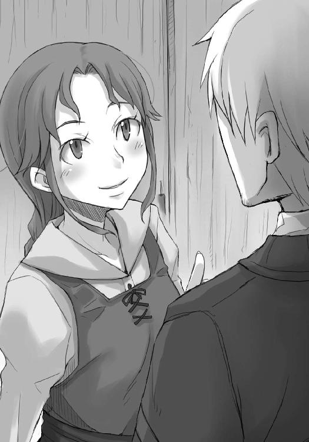
「酒場の娘の誇りにかけて？」
「ふふ、それもありますけどね、ちょっと自分に自信のある女なら、ちょっかい出してみたくなる感じがしますよ。そう言われません？」
生憎と宿の女中に袖にされたことしかない。
ここは実に素直に首を横に振ることができた。
「なら、答えはひとつ。あなたの側の女の人とは最近出会った」
油断ならない。女の勘の鋭さというやつだろうか。
「あなたはとても優しそうな人ですからね。一人でうろうろしている間は誰も相手にしてくれなかったでしょうけど、側に女がいるとわかると女の目には突然気になるものですよ。羊が一匹ぽつんといたら狩るのも面倒だと思うでしょうけど、狼が側にいればそんなにうまい獲物なのかと横取りしたくなるでしょう？」
自分を羊に例えられて喜ぶ男は少なそうだが、隣にいるのは本当に狼なので参ってしまう。
この娘、本当に人だろうか？
「だから、私は一度あなたのお連れの人をこの酒場に招待したいんです」
金にも名誉にも興味がなければ、日々の生活に辛味を出すにはこんな香辛料がうってつけなのだろう。
案外、真実の話をそんなことと引き換えに教えてくれたのかもしれない。
「案内状は、すでにもらいました」
だからロレンスがそう言うと、娘は悔しそうに笑ってロレンスの胸をついた。
「その余裕顔。腹立つなあ」
「羊ですから。感情に乏しいんです」
ロレンスは言って、裏口の扉に手をかける。
そして、娘を振り向いた。
「もちろん、ここでのことは他言しません」
「それはあなたの側の人に対して？」
どうしても笑ってしまう。
もしかしたら、自分はおとなしい娘よりもこういうほうが好みなのかもしれない、とロレンスは思ったのだった。
「で、ぬしはわっちにそれをそっくりそのまま伝えたと」
「包み隠さずな」
ロレンスが部屋から出ていった時と同じ姿勢で本を読んでいたホロは、尻尾をゆらゆらさせてから、ぱたりと伏せた。
「その小娘には一度しっかり縄張りについて教える必要があるが......」
ホロの視線がロレンスに向けられ、その顔はちょっと嬉しそうだった。
「ぬしはだいぶ物事の道理がわかってきたようじゃな」
「荷馬は手綱を握られているが、自由に動くにはその手綱を握る御者の意を汲むのが一番いい」
ホロは満足げに笑って、「で」と体を起こす。
「ぬしはどう思うのかや」
エーブが石像を教会相手に卸していたのは事実らしく、喧嘩別れをしたのも真実と見ていい。
またエーブがロレンスに言った会議の結論の内容も、ほぼ間違いのないものと考えていいだろう。
気になるのは、教会がこの町で権力を築こうと画策していることで、その目的は間違いなくこの町に司教座を置くことだろう。教会組織の要として機能する司教座は、縄張りとなる土地の権力者や教会の権力者の推薦が得られれば置かれるらしいが、普通は土地の領主が教会の進出を拒んだり、新たな勢力の台頭を嫌がる既存の教会権力者たちによって妨げられたりする。
もっとも、それも金と人脈しだいとはよく聞く話だ。
司教座が置かれれば、この町の教会の司教は司教に任命される側からする側に回ることになる。司教区の教会に集まる寄付金も一定額の徴収を行う権利を得るし、世俗権力者たちの権威づけのために戴冠を行う権利も得られる。
宗教的な裁判権も一手に担うことになり、極端な例を挙げれば教会の権力を濫用して気に食わない者全てを異端と称して火刑に処すことも可能だ。もっとも、その権益の大半は、裁判による罰金を徴収できることにあるし、なにより裁判権ほど権威を高めるものはない。
その可能性を見越しているからこそ、酒場の娘はあのように教会の話が出ることを恐れていたのだろう。
そんなところと喧嘩別れをしたエーブがこの町を去りたがっているのは理解できるし、来年も取引を再開できるかもなどと悠長なことを言っていられないのも理解できる。
理解できないのは、その教会と喧嘩別れをすることになった原因だ。
ロレンスならば、泥を飲んででも耐える。それくらいの辛抱に見合うと思えた。
ここが納得できれば、一つ博打を打つのも悪くはないかもしれない。
教会の権力の隆盛からして、五十人会議の結論を出したのは司教の判断だろうし、教会は当然この町の経済の保護を優先させるためにその結論を出したはずなので、エーブの企みは教会の意に反する行為になる。
あるいはここで命を狙われるかもしれない、とは考えられても、それは本当に可能性の話といえるだろう。
外地の商人が正当な取引をしたのにその直後に不可解な死を遂げたり行方不明になったりすれば、真っ先に疑われるのは利害関係にある町の権力者たちだ。ロレンスは曲がりなりにもローエン商業組合の一員なのだから、それを示せれば司教座を狙う司教がそんな荒っぽい行動に出るとは考えられない。
それに、エーブが望んでいる取引の金額など、ロレンスたち個人の商人から見れば空恐ろしい金額でも、町全体の毛皮取引の量から見れば芥子粒とまではいかないだろうがそう大した金額にはならないだろう。そんな小さな金額で目くじらを立てられはしないし、殺す殺さないの話にもならないはずだ。もちろん、誰か個人に対して銀貨数千枚の話となれば、命のやり取りになるだろうが。
ロレンスはそんなことをホロに説明した。
しばらくは真面目に聞いてくれていたホロは、段々と姿勢を崩して最後にはベッドの上に寝っ転がっていた。
ただ、ロレンスも怒らない。
それはホロに反論する理由が見つからない、ということなのだから。
「どう思う？」
最後にロレンスがそう訊ねると、ホロは大欠伸をして、目尻の涙を尻尾で拭った。
「ぬしの説明そのものには、おかしな点はないと思いんす。なんとなく、それっぽくは聞こえる」
それは手を出しても大丈夫そうだということか、と聞こうとして、思いとどまった。
そこを判断するのは、商人たるロレンスだ。
「んふ。わっちゃあ賢狼じゃが神ではありんせん。ぬしがご宣託を期待するようになったらわっちゃあぬしの前から姿を消そう」
「大きな取引を前にするとな、なんでもいいから他人の声を聞きたくなるんだよ」
「くっく、どうせぬしは自分の中で結論を出しているはずなのに？ なら、わっちが泣いて頼んだら考えを変えてくれるのかや」
ホロはにやにやと笑っている。
ただ、ここでどう答えるべきかはロレンスにもわかる。
「たとえそれを振り切ったとしても、お前はきっと宿にいてくれる。俺は商売を成功させて、帰ってくる。それだけのことだ」
喉を鳴らして笑うホロは、こそばゆくて聞いていられない、とばかりに喉元を搔いている。
「その台詞を顔を赤くせず言えるようになったら一人前じゃな」
ホロのからかいにも一通り慣れてきた。
挨拶みたいなもの、と肩をすくめてやる。
「ま、さっきの説明の最中のぬしの顔は実に生き生きしておった。もちろん」
ロレンスが口を開きかけたのを制して、ホロは続けた。
「それが悪いことなどとは言わぬ。雄はやはり餌を追っておる姿が一番よい」
今度はロレンスのほうがこそばゆくて鼻の頭を搔いてしまうが、ここで言葉を返せないとホロは絶対に怒るはず。
一つわざとため息をついて、これは冗談に付き合ってやっているんだと自分に言い聞かせながらこう言った。
「ただ、たまには自分のほうを振り向いて欲しい」
「合格」
ホロは言って、嬉しそうに笑った。
「じゃが、ぬしがもし取引で失敗したらわっちゃあどうなるのかや」
「仮にも質草だからな。金が返せなければ、どこかに売られることになる」
「ほう......」
ベッドにうつぶせになったホロは、自分の腕枕の上に顔を載せ、尻尾と共に足をゆらゆらとさせた。
「じゃからぬしはうなされるほど悩んでおったのかや」
「......それもある」
もしも取引に失敗し金が返せないようになればホロの身柄は当然質入れ先の商会のものになる。
ただ、ホロがおとなしく売られるままでいるわけがない。
その点は安心できるが、縄を食いちぎって逃げ出したホロが自分の下に帰ってきてくれると思うほど、ロレンスは楽観的ではない。
「そうなったら......次の伴侶はもう少し賢いのがよいな」
ちろり、と細められた瞼の隙間から意地悪そうな琥珀色の瞳が向けられる。
「ああ。借りた金を返せないような間抜けには後ろ足で砂をかければいい」
ホロの軽い挑発にきっちりと言葉を返す。
賢狼は、それが気に食わなかったらしい。
「ふん。わっちが立ち去ろうとしたらべそをかいてすがった小僧がよく言うの」
胡桃を殻ごと飲み込んでしまったような顔をしたことだろう。
ホロは満足げに牙を見せて、尻尾をぱたぱたと鳴らした。
ふと表情が変わったのは、そんな尻尾が伏せられてからだ。
「じゃが、わっちゃあぬしを信じておるから協力する」
真剣な笑顔というものは存在する。
ロレンスは頰を搔いてから、顎鬚を撫でた。
「もちろんだ」
夕暮れ時。
茜色の日がゆっくりと沈み、ところどころにそのかけらを落としていったかのように灯りがともりだす。日が落ちると寒さは一気に増し、人々は襟巻きの中に顔をうずめながら家路を急いでいた。
ロレンスはそんな町のひとときをしばらく眺め、日が完全に沈んで人通りがなくなってから、木窓を閉じる。部屋の中では獣脂の灯りを頼りにホロが本のページをめくっていた。
本は年代順にまとめられていたらしく、時代の新しいものから順繰りに読んでいっている。
ホロがパスロエの村にいた時間を考えると古いほうから読んでいったほうが早く見つかりそうな気もしたが、そうしないのはホロの心に幾分か余裕があるからだろう。
もっとも、それも残すところあと二冊で、そろそろお目当ての記述に行きつく可能性はとても高い。そうなってくるとやはり続きがいたく気になるらしく、暗くなってからも本が読みたいと言い出した。なので、煤と、特に火を絶対に本につけないことを条件に獣脂の灯りを使うことを許可した。
ただ、ホロがベッドの上で寝転んで本を読んでいる格好はいつものくつろいだものではなく、そのまま外に出ても大丈夫な外出着。
寒いからというわけではなく、このあとのエーブとの交渉のためだった。
「さて、そろそろ行くか」
明確に交渉の時刻を決めていたわけではないが、晩に、と商人同士の間で約束を取り交わしたのであればある程度絞り込むことはできる。が、ロレンスがいそいそと夕暮れ時から下に下りてホロと二人待っていれば、利益にそわそわしている小物と取られかねない。
かといって大幅に遅れたのではそれはそれで失礼にあたる。
要するにこれはエーブのちょっとした試験なのだろう。
夕暮れ時に、と言わなかったのは、商人たちの取引は蠟燭を使わないで文字が書ける夕暮れまでに終わらせるのが普通で、宿屋に彼らが帰ってくるのはもう少しあとになるからだ。
だとすれば、宿に帰ってくる者たちの波が一段落してから来いという意味のはず。
宿は耳を澄ましていればどこの部屋に誰が帰ってきたか程度はロレンスにもわかる。
それと部屋数を吟味して、ロレンスはそろそろ頃合だと判断した。
「商人とやらはなかなか面倒くさい生き物じゃな」
ぱたん、と本を閉じてベッドから体を起こしたホロは、ひとつ伸びをしてから笑った。
最適の時刻はいつかとそわそわしていたのは普通の娘にだってわかったはずだ。
「宿の部屋の中でまで見栄を張っていたら俺はいつ気を緩めればいいんだ？」
冗談まじりに言ってやる。
ホロはベッドから下りて、ローブの下の耳と尻尾を調整しながらなにか考えるふうだった。
「出会ってしばらくは......いやここ最近までは、どこであろうともわっちの前では気を張っておったように見えたが」
「女との二人旅なんて初めてだったからな。それもいい加減に慣れるさ」
それに、多少のだらしなさを見せても今更という気がする。
これほど気の置けない相手は、ほとんど初めてといってもいいくらいだ。
「出会ったばかりの頃は、わっちを連れて歩いておるだけで鼻の穴を膨らましておったのに」
「今は俺が他の女といたらお前が尻尾を膨らませてくれるのかな」
少し強気に返してやると、ホロはいい度胸だとばかりに顎を上げて笑った。
「じゃが、そうやって雄は段々と化けの皮をはがしていって、やがてこんなはずではなかったという姿に成り果てる」
「誰が相手でも親しくなれば多少はそうなるだろう？」
「たわけ。人はこう言うそうじゃな。釣った魚に餌はやらぬと」
「お前の場合は、釣った魚というよりも勝手に荷台に潜り込んでいたのだからそれには当たらないだろう？ 餌をやるどころか乗り賃を払って欲しいくらいだ」
ただ、ロレンスはそう言ってからたじろいだ。
ホロの冗談とも思えないような鋭い瞳が獣脂の灯りで鈍い金色に輝いていたからだ。
どこかで対応を間違えたか、それとも、そわそわしている様がそんなにみっともなかったのか、あるいは切り返しが気に食わなかったのか。
ロレンスが少し困惑していると、ホロははっと我に返ったようで少しそっぽを向いた。
「う......む、要するに、初心を忘れるなということじゃ」
なにが原因なのかはわからなかったが、おとなしくうなずいておく。
もしかしたら妙なところで子供っぽいホロのことだから、自分の思いどおりにロレンスが慌てなくなったどころか、時折切り返されることが面白くなかったのかもしれない。
急に矛を収めたのも、自分に非があると思ったからだろう。
やれやれ、とロレンスは薄く笑ってため息をついた。
「なにか腹の立つ気配がするがの」
「気のせいだ......いや、そうだな」
ロレンスは咳払いをして、ホロを改めて見返した。
「お前、俺の胸中が見抜けるのか？」
出会った頃に本気で訊ねたその質問をしてやった。
ホロはにこりと笑い、小首をかしげて近づいてくる。
「たわけ」
「いっつ！」
加減なく向こう脛を蹴られた。
それでもホロは笑顔のまま優雅にロレンスの前を通り過ぎ、扉に手をかける。
「ほれ、行くんじゃろ？」
ホロだって出会った頃はロレンスのことをからかいこそすれ、こんな乱暴なことはしなかった、という言葉はもちろん飲み込み、先に部屋を出たホロのあとを追う。
初心を忘れるなと言っても、それは実際には無理な話だ。
その言葉がとても重い含蓄を持つのは、時間は決して巻き戻らず、またまったく変わらない人間というのもいないことを皆がわかっているからのはず。
ロレンスがそう思うのだから、ホロも当然わかっているだろう。
「もちろん、旅を経てきたからこそこうしてぬしの手を気安く取れるということもありんす。じゃがな」
ホロは言って、急に寂しげな顔つきになった。
「いつまでも出会った頃のままでいたいと、詩人も歌っておるじゃろう？」
いつものからかいか、と思ったのは一瞬にも満たなかった。
そんな、旅の終わりを明確に意識しているような、時間が巻き戻ればいいというようなホロの言葉にロレンスは驚いてしまっていた。
ホロはなにもかも達観しているように見えて、その実そうではない。
それでも、何百年といた村に居ついた当初の楽しいあの時に戻ればいいとか、旅に出る前の故郷にいた時に戻ればいいとか言われなかったことがとても嬉しかった。
だから、ロレンスはホロが摑んできた左手を少し動かし、気恥ずかしかったが指を絡める形にした。当然、口ではこう言ってやる。
「お前はいいかもしれないが、ずっと出会った時のままでいたら俺は心労で倒れてしまう」
階段を下りながら、ホロは少し体を寄せてきた。
「なに、最期は看取ってやるから安心するがよい」
意地悪い笑みと共に向けられたその言葉に、苦笑い以外に返すものはないだろう。
ただ、一階へと下りる途中に、ロレンスはその言葉がまったくの冗談でもないのだなと気がついた。
たとえホロが故郷に帰るのを先延ばしにしてもいいと言ったところで、ロレンスは必ずホロより先に死ぬ。ホロの旅は終わらなくとも、二人旅の終わりは必ずやってくる。
レノスに来る前に立ち寄ったテレオの村で、ホロが故郷に着いたあとにどうするのかという結論を出さなかった理由がわかった気がした。
そんなことを考えていると、一階に下りる階段が終わる直前、ホロのほうから手を離してきた。女と手をつないだまま人前に出ることは相手がホロであってもロレンスとしては困るが、自分からほどくのもどうなのかと思っていたところなので、その心遣いはとても嬉しい。
こんなふうに気を回してくれるホロなのだ。
故郷についた時、どうするかなど答えは出ているようなものだ。
「お待たせしました」
だから、ロレンスはすでに待機していたアロルドとエーブを前に、落ち着いて、いつもより重みを持って挨拶ができた。
「では、始めようか」
エーブのかすれた声が、そう言った。
「で、調べて回ってみた結論は？」
ホロの紹介すら要求しない。
フードの下にある顔つきと、椅子に座る動作を見るだけで十分だといわんばかりだ。
確かに、これは別にホロを売ることが主要な目的ではないのだから当然といえばそうだが、その即物的なエーブの態度には、ある種の守銭奴のような雰囲気すらあった。
「エーブさんが教会相手に石像の商売をしていたこと、また、そこと喧嘩別れしたこと、毛皮の買い付けが現金でしかできないという情報が出回っていることがわかりました」
言葉を投げて相手の反応を見るのは初歩の初歩。
エーブはその点、顔を隠すのがあまりにうまいのでロレンスの目では把握しきれないし、これでなにかが摑めるとも思っていない。運動の前に体を温めるようなものだ。
「私は自分の商人としての経験と勘で、エーブさんの話を本当のことだと思います」
「ほう」
興味がなさそうなかすれた声。交渉にも相当慣れている。
「ただ、一つだけ気になることがあります」
「というのは？」
「エーブさんが教会と喧嘩別れをした、その理由です」
それを本人に聞くことほど無駄なこともないが、ロレンスは自分の集めた情報とつじつまが合わなければそれはすぐにエーブが噓をついていると判断しようと心に決めている。
隣にいるホロはその真偽を判断してくれるだろうが、それに頼るのは結局ホロにご宣託を願っているのと変わらない。自分の考えに合致しないのであれば切るのが得策だ。
なにせ、今回はロレンスの判断でホロの身柄を他者に売り渡すのだから、その判断は全て自分で下すことがその行為に責任を持つことだと思った。
「喧嘩別れの理由か。まあ、気になるだろうな」
至極当然のこと、とばかりにエーブは言って、小さく咳をした。
エーブも必死に頭を回しているはずだ。
エーブはロレンスをこの取引に取り込まないことには、なにか良からぬことを考えているにせよ、その企みが失敗になる。
ロレンスが今日一日、町でなにを見てなにを聞いてきたか考えているはずだ。
エーブが噓をついているとすれば、これから口に出すこととロレンスの得た情報を摺り合わせることはほとんど絶望に近い。
「ここの教会の司教は古き良き教会の時代が忘れられない過去の遺物でな」
そして、そう語り始めた。
「若い頃にこの近辺の布教活動で地獄のような毎日を送っていたそうだが、それに耐えられたのはいつか自分も偉くなって威張り散らすためだったというような権力志向の強い男だ。こいつはここの町に司教座を置きたがっている。要するに大司教を目指しているんだな」
「大司教」
権力の代名詞のような単語だ。
エーブはうなずいて、続けた。
「オレは前述のとおりに没落とはいえ貴族の出だ。この辺りにうまい商売はないかと探していた時にな、不恰好に金儲けをしている司教の存在を聞いた。そいつがここの教会の司教だ。当時は子飼いの商会と寄付金を使って毛皮の売買に手を出していたが、所詮は教会にこもって文字ばかり追っかけているような奴だ。赤字続きだった。そこでオレが一石二鳥の案を出してやった」
「それが、石像の売買」
「そうだ。しかも、ただ石像を売ってやっただけじゃない。オレはウィンフィール王国の貴族だからな。一応権力者連中に話を通すことくらいはできる。向こうで確固たる権力基盤を築いている大司教に渡りをつけてやったんだ」
なるほど、とロレンスは思わず呟いてしまった。
だとすれば、石像の加工は大司教が統轄する大聖堂を整備修復するために雇われたりする遍歴の石工たちの仕事だろう。聖堂の複雑な装飾の修復の時だけ臨時で雇われる彼らは、修復が終われば次の町に移るか、あるいはその町で手間賃仕事をするのが普通だ。
それでも町に日頃からある仕事の数など限られているから、当然地元に残る者がいると地元の石工組合との軋轢が生まれる原因になる。しかも、皮肉なことに各地を渡り歩いて腕を磨いてきた遍歴の石工たちのほうが圧倒的に腕が立つことがあり、複雑な聖堂の装飾を修復できるのは遍歴の石工たちだけ、などということもある。
だから、大聖堂があるような町は聖堂の修復が行われるたびに、地元の石工たちが仕事を奪われるのではないかと戦々恐々となり、不必要な緊張をもたらすことがある。
そこで、エーブが石の加工という仕事を頼むのは、そんな緊張を和らげる仕事を提供することになる。遍歴の石工たちを必要な時だけ雇いたい大聖堂にとっても、町にとっても、当の遍歴の石工たちにとっても渡りに船だ。エーブはそのお礼にということで、レノスの町の司教が面識を得たがっていると、大聖堂の大司教に話を通す。エーブは加工された石像をこの町の教会に売ることで利益を得る。
全ての人間が得をする、商売の理想形だ。
「説明する手間が省けて助かるな。まあ、察しのとおりだ。当然、オレが石像売買の薄利に甘んじたのは、ここの司教が大司教になることに賭けていたからだ。それがだ」
声が硬質に感じられるのは演技なのか、それとも、怒りを抑えるためにそうなってしまうのか判別がつけづらい。
ただ、全てのつじつまは合っているし、ここまでは十分すぎるほどあり得ることだとロレンスは判断した。
「オレとの取引で資金を得て基盤が固まり始めると、当然司教の行く先が明るいものだと周りの連中が気づき始めるし、司教は司教で邪魔な者は排除しようとし出す。あいつは今回の件をな、いい機会だとばかりに利用してオレを切ったんだよ。特にオレには恩がある。そんなオレをいつまでも側に置いていては、面倒くさいことを色々要求されると思ったんだろう。もちろんオレはそうするつもりだった。それくらいの権利があると思った。しかし、司教にすればオレみたいな個人の商人がでかくなるのを待つより、すでにでかい商会なんかを相手にしたほうがよほど使い勝手がよい。理屈はオレにだってわかる。だが、納得できるわけがない」
人の怒りというものは、火のように目に見えるものかもしれないと思った。
「だからな、喧嘩別れになった」
ホロは隣の席で起きているのか疑わしいほど静かに聞き入っている。
ロレンスは、もう一度エーブの話を頭の中で追いかけてみる。
やはり、エーブの話はどこにも欠陥がないように思えた。
気味が悪いほどに、つじつまが合っている。
もしもこれが噓なのだとしたら、ロレンスはエーブの下で働いてもいいと思えるくらいだ。
「なるほど。そうなれば在庫の石像も金に換えるのは難しいですし、来年の大遠征を待てばいいと悠長に構えていられないのもわかりました」
エーブは先ほどまでの饒舌な様子が噓のように、相槌も打たず頭巾の下で沈黙している。
ロレンスは、ゆっくりと、静かに深呼吸をする。
そして、吸ったところで止めて、目も閉じる。
これだけつじつまの合った状況を提示されてなお疑うならば、他のどんな取引だって難しいだろう。
あるいは、これならば策に嵌ってもいい。
策を弄し弄される商人ならではの、そんな感覚を得てしまう。
「わかりました」
吸った息を吐き出すと共に、そう言った。
その瞬間、ほんのわずかにエーブの肩が動いたのがわかった。
それは絶対に演技ではないと言い切る自信がある。
この瞬間に無表情でいられる商人など絶対にいはしないのだ。
「改めて、策の細かい打ち合わせを」
「......そうしよう」
頭巾の陰で、エーブの口元が笑った気がした。
手を差し出してきたのはエーブだ。
ロレンスがその手を取ると、それは少しだけ震えていたのだった。
その後、ロレンスとエーブ、それにホロの三人で町に繰り出した。
契約が成立したお祝い、というわけではない。商人は利益を手にするその瞬間まで祝杯を挙げることはない。
五十人会議の結論がいつ公のものになり、よその商人たちに毛皮を独占されるかわからないので、一刻も早く現金のめどをつけておく必要がある。
ホロの身柄を質草に金を借りる商会を訪れたのだ。
商会の名は、デリンク商会といった。
港が望めるなかなかよい立地にありながら、荷揚げ場を持っておらず、建物は狭く小さい。
商会を示す旗も小さく控えめに扉にかけられているだけだった。
ただ、建物の壁は髪の毛も挟めそうにないほどきっちりと石が組まれ、五階建てでありながら隣接する建物に寄りかかっているというふうにも見えない。
ぼんやりとした油の灯りを頼りによくよく見れば、小さな旗も細かい刺繡が施された一級品で、昨日今日商売を始めたわけではないことを示すように壁のくすんだ石の色とあいまって小さな巨人のごとく貫禄を有していた。
他の商会とは、宣伝という行為に対する姿勢が違うのだろう。
「デリンク商会を代表しまして、ルッズ・エリンギンです」
取り扱う商品が異なる商人同士だと慣習もまた大きく異なる。
ロレンスたちを迎えてくれたデリンク商会の人間は四人で、その四人共がそれぞれ商会を代表していそうな立派な雰囲気を有し、身なりも誰が一番良いとは決められなかった。
人を商う者たちは常に商品の判断を複数人で行うと聞いたことがある。きっと商会の経営者はこの四人なのだろう。
「クラフト・ロレンスです」
ロレンスはエリンギンと握手を交わす。
それは妙に柔らかい手で、顔にはなにを考えているのかまったくわからない張りついたような微笑が浮かんでいる。羊を扱うには犬の鳴き声が有用だが、人を扱うにはこういう笑顔が有用なのかもしれない。ホロも遅れて握手を交わしたが、その時のホロを見る目は、蛇か蜥蜴のようだった。
エーブは頭巾を外すだけで特に挨拶を交わすことはなかった。おそらく、エーブが成金の商人に買われた時、その取引に一枚嚙んでいたのがここの商会なのだろう。
「お掛けください」
エリンギンの言葉でロレンスたちは羅紗布の張られた椅子に座った。中には綿が詰められている高級品だ。
「詳しいお話は事前にボラン家の御当主からお聞きしています」
だから無駄なやり取りはやめようということだろう。
ロレンスも値段の交渉をするつもりはない。貴族の娘を売るなどという取引は、相場がまったくわからない。
「ただ、一つお聞きしたい。ロレンスさんはローエン商業組合の一員であるとか？」
エリンギンの後ろには三人の男たちがぴくりともせず立って、じっとこちらを見つめている。
一人ひとりはこれといった表情を浮かべているわけではないのに、全体的な雰囲気があまりにも不気味な印象を与えてくる。
交渉事に慣れている身ですら、圧迫される。
身一つで売られてきた者たちが彼らの前で噓をつくのは至難の業だろう。
「ええ」
ロレンスが短く返事をすると、その直後に後ろの三人の不気味な雰囲気がなくなった。
やはり、ロレンスの口から真実を絞り出すための策だったのだろう。
「ローエンですと、ゴールデンス卿と何度かお取引をしたことがありましてね。慧眼を持たれているというのはああいう方をいうのでしょう」
組合の中心人物の一人の名前に、ロレンスはどうしても緊張してしまう。
それがロレンスに逃げられないと思わせる策だとわかっていても。
「そちらに所属で、なかなかの身なり。また、お連れの方は実に貴族然とされた娘さんでいらっしゃる。我々は四人で事前に協議致しました結果を、ここに宣言させていただきたいと思います」
エーブは二千五百枚は欲しいと言っていた。
もったいぶるようにエリンギンが笑みを強くする。
いつの世も、金を出す人間が、強い。
「トレニー銀貨にして二千枚」
目標に届きはしなかったが、二千枚もの軍資金を引き出せるならば万々歳だ。
ロレンスは無意識に緊張していた体から力が抜ける様を悟られないようにするので精一杯だったが、それはエーブも同様だったらしい。
その横顔は不自然に無表情だった。
「エーブさんからは二千五百枚と打診されていましたが、個人の行商人の方を相手にそれだけの取引をするのはあまりにも無理があると。これは、例の......毛皮を巡る取引の一環でしょう？ ですから、その代わりに手数料は頂きません。満額お貸しします。ただし、銀貨をそんなに備蓄してはいませんのでね。お支払いはリュミオーネ金貨を六十枚ということで」
リュミオーネ金貨一枚でトレニー銀貨が三十四枚前後。レノスの町での詳しい相場はわからないが、貨幣は貨幣との交換よりもそれ以外と交換する時により大きな威力を発揮する。
場合によっては、トレニー銀貨二千枚を大幅に上回る金額分の毛皮を買い付けられるかもしれない。
それよりも驚いたのは、満額の融資というほうだ。
高価な貨幣は存在そのものが貴重だ。場合によっては鋳潰せばいつでも万能な財産である金や銀になる貨幣は、当然紙の上の金とは釣り合わない。
紙に名前を書いて貨幣の金を借りる時、いくらか手数料として引かれるのが当然のこと。
しかし、それをしないという。
「気前がいいな」
そう呟いたのはエーブ。
「投資ですよ」
エリンギンは笑みを濃くして、そう言った。
「貴女は賢い方だ。この町の状況と人間関係から利益を引き出す術を心得ていた。きっとこの成功を弾みにさらなる躍進をするでしょう。我々もそれにあやかりたい。そして」
ロレンスのほうに視線を向ける。
「貴方は幸運な方だ。お二人がこの町で出会われたのは幸運に他ならない。また、これほど大きな取引を前に舞い上がっているわけでもない。これは貴方が幸運に慣れているからだと判断します。我々の商売は運の要素がとても強い。幸運に慣れている者でないと、すぐに足元をすくわれてしまいます。我々はその点で、貴方を信用します」
そういう評価の仕方もあるのかと感心しながら、確かに、自分が褒められることといえば運くらいしかないかとも思う。
そんな自虐とも感心とも言いがたいことを思っていると、隣のホロが少し笑ったような気がした。
「我々の商売は金鉱を探すようなものですから。協力者を得るためには多少の投資は惜しみません」
「それで、数多の人間の御託を黙らせる現金はどうやって受け取ればいい」
エーブの言葉にエリンギンは初めて笑顔を本物に変える。
「毛皮の買い付け先はアーキエ商会でしたね。本当に目のつけどころが良い。是非その探し方をご教示いただければと──」
「オレは声がかすれていてね。喋るのが辛いんだよ」
冗談には聞こえない、エーブの硬質な言葉と、聞きようによっては脅しているようにも感じられる蛇のような陰湿さを含んだエリンギンの言葉。
ロレンスが経験してきたものとは違う、異質なやり取り。
もちろん商談をする者同士が仲良くある必要はどこにもないが、二人のやり取りの間にはおよそ人間味が感じられない。
金が儲かりさえすれば相手の態度などどうだっていい。
そんな雰囲気が空気のように当たり前だった。
「受け取り方ですか。それはお望みのように」
「どうする」
エーブは初めて隣のロレンスに視線を向けてきた。
打ち合わせをしていたわけではないので、ロレンスは自分の思っていたことをそのまま伝えた。
「まばゆいばかりの金貨が近くにあっては夜眩しくて眠れませんから」
少し背筋を伸ばしてうっすらと顔に笑みを浮かべることができたのは、隣にホロがいたせいかもしれない。
エリンギンは、「お」という顔になってから、肩を揺らして笑った。
「まさしく目が覚めるようなご返答です。扱う金額が大きくなるとどうしても同時に気位まで高くなってしまいましてね。結果、商談中の心の余裕とは、いかにきつい皮肉を言えるかになりがちです。謙遜を感じさせながら、鋭さを失わない言葉こそが真の心の余裕。見習わなくてはなりません」
日頃から恐ろしい金額の取引を当たり前のようにこなしているのだろう。銀貨二千枚を貸す際の手数料となればかなりのものだが、それをあっさりと無料にしてしまうのだから。
商人がのしあがっていく先には、こういう世界が待っているのだろう。
「では、毛皮買い付けの直前にお渡しするということでよろしいですか」
エーブになにか考えがあるかと思い、ロレンスはエーブが口を挟めるようにとわざと間をあけたが、結局口は挟まれなかったのでこう答えた。
「それでお願いします」
「かしこまりました」
エリンギンはそして握手のための手を差し出してきた。
ロレンスはそれを受け取り、先ほど交わしたものよりも若干強く握手を交わす。
今度はホロに向けられる代わりにエーブに手が向けられ、エーブもそれに応える。あれほど刺々しいやり取りをしながら、ほんの少しのわだかまりも残していないように見えた。
「商いがうまくいきますように」
まったく神を信じていないように見えるエリンギンは、そう言って目を閉じた。
その様は、神を踏みつけてでも金儲けをしてみせるという気概にあふれた、どこか神々しさすら感じさせるものだった。
「不愉快な男だ」
もろもろの文書をしたため、商会を出るなりエーブは呟いた。
あまりに感情に満ち満ちていた言葉なので意外に思えてしまう。
「初めて相対する雰囲気の方でした。自分がいかに小さい行商人であるか実感しましたよ」
ロレンスが素直な感想を述べると、エーブは頭巾の下から視線を向けてきて、しばし沈黙した。
「......本当にそう思っているか？」
そして、そんなことを言った。
「ええ。少なくとも、銀貨の百枚や二百枚をこつこつと商っている身では初めて目にする感じでしたね」
「その割にはいい言葉を返していたな」
「金貨のたとえ話ですか？」
エーブはうなずき、ゆっくりと歩き出す。
ロレンスはホロの手を取り、その後ろをゆっくりと追う。ホロは役どころをすっかり心得ているらしく、ずっと黙っておとなしくしていたが、手を取ると少しだけ熱い。
きっと、エリンギンの目つきが気に入らなかったのだろう。
「オレたちにすりゃ、あんな切り返しのほうが新鮮だ。エリンギンは慌てていたぜ。市井の行商人も馬鹿にはできない」
「それは光栄です」
ロレンスが答えると、エーブの短く咳き込むような笑い声が聞こえた。
「あんた、実はでかい商会の御曹司だったりしないか」
「そういう考えを持つ夜も、確かにあります」
敵わねえな、とエーブは呟くように言って、珍しく頭巾の下から鋭くない目を向けてきてこう言った。
「喋って喉が渇いたと思わないか」
取引の全てが終わったわけではないが、関門の一つは越えた。
それに賛同しないほど、ロレンスも乾いているわけではない。
港近くには夜になっても酒を売る露店がいくらでも出ている。
ロレンスはぶどう酒を三杯頼んで、手近な場所に打ち捨てられている空いた木箱に腰を下ろした。
「取引の成功を祈って」
そんな乾杯の音頭を取ったのはエーブ。
三人は縁が何箇所も欠けている土器のジョッキをぶつけ合わせるふりだけをして、ぶどう酒を飲んだ。
「それで、今更なんだがな」
「なんでしょう」
「あんた、連れはどこで拾ったんだ」
「え」
驚きを隠せなかったのは、交渉のあとで気が緩んでいたからというわけでもない。
エーブがそんなことを気にするとは思えなかったからだ。
「そんなに意外かよ」
エーブは口元だけで苦笑し、幸いなことにホロはぶどう酒の注がれた土器を両手で包むように持って黙っていた。
「詮索しないとは言ったがな、気になるだろう」
「ええ......いえ、よく聞かれますね」
「で、どこで拾ったんだ。農民の蜂起を受けて没落した領主の一人娘だと言われてもオレは驚かないが」
没落貴族だというエーブならではの冗談だが、真実を言えばいくらエーブといえども驚くだろう。ホロの背中のほうでわさりと小さい音がして、ロレンスは本当にさりげなくホロの足を軽く踏んだ。
「北の生まれらしいのですが、長い間ここから南に行った麦の大産地で暮らしていました」
「へえ」
「私はそこの村と何度か取引があり、知り合いもいたので行商の途中に立ち寄ったのですが、その際に勝手に荷物の中に潜り込まれていましてね」
そう言えばと、ホロが潜り込んでいたのは毛皮の中だったことを思い出した。
ホロは尻尾を持っているくらいだから、なにかと毛皮と縁があるのかもしれない。
「故郷に帰りたいというので、紆余曲折はありましたが、結局その道案内をすることに」
噓はないので実に語りやすい。ホロもうなずき、エーブは一口酒をすすった。
「安っぽい詩人の歌みたいな出会い方だな」
ロレンスは笑ってしまう。
まったくそのとおりだからだ。
ただ、その後のやり取りはとても金に換えられるようなものではない。
馬鹿らしくて、楽しくて、できることならば一生続けていたいと思うような。
「なによりその紆余曲折が気になるところだが、そこは神父にすら言えないというところか」
「神父様にこそ言えない、が正しいでしょう」
それは事実だが、ロレンスの言う意味と、エーブが受け取る意味は全然違うだろう。
エーブが声を上げて笑う。それで誰かが振り向くほど港は静かではない。
「まあ、こんなに良い服を着せているんだ。良い出会いだったのだろうというのはわかる」
「油断していたら勝手に買われたんですよ」
「そうだろうな。賢そうな雰囲気だ」
きっと、フードの下は得意げな顔だろう。
「仲も良さそうだからな。ただ、宿ではもう少し声を小さくすることを勧めるぜ」
ぶどう酒に口をつけようとしていた動きが止まってしまう。まさか宿でのやり取りが丸聞こえだったのかと思うのと、これがかまかけだと気がつくのは同時だった。
ホロからは、こんなことに引っかかるなとばかりに足を踏み返された。
「大事にすることだ。出会いは金で買えるが、その良し悪しまで決められるわけではない」
しかし、そんな言葉に視線がエーブの頭巾の下に走る。
エーブは青い瞳を覗かせていた。
その目の青は、上品そうな蒼。
「オレを買った成金は、そりゃあひどいものだったからな」
言って、エーブは視線をロレンスから外し、ちらりとホロを見てから港のほうを向く。ロレンスがそんなエーブの横顔から視線を外せたのは、自嘲するような笑みが浮かんでからだ。
「同情して欲しくないといえば噓になるが、昔のことだ。それに、あいつはすぐに死んじまったからな」
「そう......なのですか」
「ああ。知っているとは思うがオレの国は羊毛取引が盛んでな。外地の商人と先物買いで争って、身の丈を超えた金を注ぎ込んだところで王が政策転換をして、あっさりと破産した。日々パンを買うのにも困っていたような没落貴族からしたら信じられないような金額の取引だったぜ。で、気位が貴族より高い男だったからな、破産が決まったその日のうちにナイフで喉を突いて死んだ。まあ、その点だけはボラン家の名にふさわしい潔い最期だった」
怒るでも悲しむでも、またその成金商人をあざ笑うでもなく、懐かしそうにエーブは喋る。
これが演技だとしたら、ロレンスはもう誰も信じられないだろう。
「結婚式も派手でな。ボラン家の歴史でも一位二位を争うだろうと爺は泣いていた。もっとも、オレには葬式と変わらなかったがな。それでもいいことはあった。一つは飯に困らなくなったこと。もう一つは、ガキができなかったこと」
貴族ほど血縁が重要な連中はいない。
子供は神からの授かりものではなく、政治のための道具でしかない。
「そして、オレがちまちまあいつの財布から抜いてた金が誰にも見つからなかったこと。破産して家屋敷一切合財を取られたがな、商人を始めるには十分な金が残った」
成金とはいえ貴族の家を買えるほどの商人であれば、それは立派な商会を構えていたはずだ。
貴族の娘たるエーブが商人の道を選び、またうまく事を運べるようになったのは、その商会に残された者たちの協力があったからだろう。
「オレの夢はな、あいつの商会を超えるものを作ることだ」
エーブはぽつりと言った。
「オレを買えたのは幸運に他ならない。本当ならばあいつ程度の商人が買えるような安い商品ではなかったと、そう証明したくてな。子供みたいだろう？」
かすれた声で言って、笑うその横顔はあまりにも幼かった。
エーブと毛皮の取引をまとめた時、最後の握手でエーブの手は震えていた。
この世に、何物にも負けない完璧な人間など、絶対にいないのだ。
「はは、まあ、忘れてくれ。たまに誰かに聞いて欲しくなる。オレもまだまだだということだ」
そう言ってぶどう酒を飲み干し、小さくげっぷをする。
「いや、違うな」
エーブが頭巾の縁を軽く持ち上げたのは、どういうつもりだったのだろうか。
「あんたらが羨ましかった」
青い瞳は、眩しそうに細められていた。
ロレンスは返答にしばし悩み、結局酒に逃げる。
きっとホロにからかわれることだろうと思った。
「くく、馬鹿なことだ。オレたちが気にするべきは金儲けだけ。違うか？」
ジョッキの中のぶどう酒に映った自分の顔を見る。
エーブ同様、商人らしくない顔だ。
「まったくそのとおりです」
自分の顔諸共にぶどう酒を飲み込み、ロレンスは言う。あとでホロになにを言われるか怖くて仕方がなかったが、エーブが最後に乾いた笑い声を短く上げ、腰を上げた時には二人とも商人の顔に戻っていた。
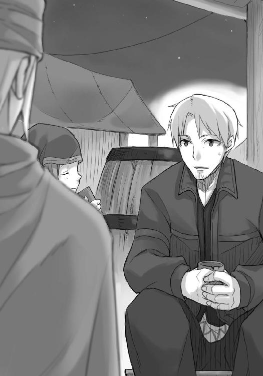
「会議の結論が公布されたら即座に取引に向かう。常に居場所はアロルドの爺さんに伝えておいてくれ」
「わかりました」
どこから見ても歴戦の商人が、がさがさの手を差し出してきた。
「取引はうまくいくだろう」
「もちろん」
ロレンスはその手を握って、そう言ったのだった。
ロレンスはレノスの町に入る際、狼の毛皮があっても怒るなよと言った時の、ホロの返事を思い出した。
自分も特に気にすることはないが、知り合いの誰かが狩られるとあっては心安らかではない。
それは売買にも当てはまるようだ。
養子のための子供の売買や、働き手としての奴隷の売買は必要不可欠な商売で、誰にも後ろ指を差されるようなものではない。
それでも、もしも本当にホロを売ることになったらと少し思っただけで、ロレンスは心の内がざわついてしまう。
人身売買を非難する教会の潔癖な教えが、初めて理解できるような気がした。
そんな交渉ののち、宿に帰るとエーブだけはアロルドと飲み直すと言って一階に残った。
きっと、げんなりとした顔をしてベッドに倒れ込んだのは、この件に関わった者の中でホロだけだろう。
「まったく、腹の立つ無駄な時間じゃった」
獣脂の蠟燭に火をつけながら、ロレンスは苦笑いしてしまう。
「借りてきた猫のよう、とは、まさしくだったな」
「その猫で金を借りようというのじゃからな。おとなしく楚々とするほかないじゃろうが」
ロレンスはエーブの話を信用できると判断し、エーブはそれに応え、取引は順調に進んでいる。予想外の事態に遭遇しない限り、毛皮の取引は成功し、懐に莫大な利益が転がり込むだろう、と考えてしまうのはなにも楽観的な観測ではないと思っている。
物乞いが言った、腹の底がふわふわするような喜びの予兆を早くも感じてしまっても誰も笑いはしないはずだ。
あまりに久しぶりなこの感覚。
なにせ、ついに、念願の町商人としての門出に目鼻がついたのだから。
「いや、本当に助かった」
ロレンスは言ってから、軽く顎を撫でた。
「ありがとう」
ホロがちらりと向けてきた視線はあまり友好的なものではなかった。ほこりでも払うように耳を振り、どうでもいいとばかりに鼻でため息をつき、仰向けからうつぶせに姿勢を変えて本を開く。
ただ、その姿は端的に言って、照れているようにも見えた。
「気になる話は載ってたか？」
ホロが本を見ながらもそもそとローブを脱ぎ始めたので、ロレンスは機嫌良くそれに手を貸してやる。邪険にされなかったので、照れていたという推測は当たらずとも遠からずだったのかもしれない。
「不気味な話が多いの。二つの道が交わる場所に不吉な歌を歌う悪魔が埋められるというのがありんす」
「ああ、それはよく聞くな」
「ふむ？」
ローブを脱がしたせいで水に油をたらしたように広がってしまった髪の毛をまとめてやってから、答える。
「楽士と呼ばれる楽器を持ってあちこちの町をうろつく連中はな、時として町に不幸や病を連れてくる悪魔の使いだと言われることがある。それで、そういう連中を縛り首にするのは決まって町の外の道が交差する場所なんだ」
「ほう......」
解けかけた腰帯が尻尾の上に乗っかっていて邪魔そうに払おうとしていたので取ってやると、お礼とばかりに尻尾をこすりつけてくる。
少しいたずら心でこっちから触ろうとしたら、あっさりとかわされた。
「悪魔である楽士が死んで、町とは別の場所に魂が行ってくれるようにと願いを込めてな。だから、町の外の二つの道が交わる場所は慎重に石が取り除かれていたり穴がふさがれていたりする。そこで誰かがつまずくと、埋めたはずの悪魔が蘇ると言われているからな」
「ふむ。人は色々と考えるものじゃな」
ホロは本気で感心するように呟いて、再び本に視線を戻した。
「狼は迷信を持たないか」
「......」
突然真剣な表情になったので、尾を踏んでしまったかと思ったが、単に考えていただけらしい。しばらくして視線を向けてきた。
「言われて気がついた。そういえば、ない」
「まあ、子供が夜に小便しに行けなくなるということがなくていいな」
ホロは不意を突かれたようにきょとんとして、それから笑った。
「俺のことじゃないからな？」
「くふ」
笑い、尻尾をゆらゆらとさせる。ロレンスが本当に軽くホロの頭を小突くと、ホロはくすぐったそうに首をすくめた。
それから、なんの気なしにホロの頭に手を置く。
払われるかとも思ったが、ホロはそのままで、耳を少しだけ動かした。手から、子供のような少しだけ高いホロの体温が伝わってくる。
切なくなるほど静かで、かけがえのない時間。
そして、ホロはようやく準備が整ったとばかりに、唐突に口を開いた。
「わっちに一連の言葉の真偽を聞かないんじゃな」
エーブの、という意味だろう。
ロレンスはホロの頭から手を離し、返事はただうなずいただけ。
ホロは確認のために視線すら向けてこない。その気配だけで十分なようだった。
「真偽を聞いてきたなら、呆れて見下してからかって、それから教えてたっぷりと恩を売れたというに」
「危ないところだった」
ロレンスが言うと、ホロは楽しそうに笑う。
それから、こてんと顔をベッドの上に置いて、見上げるように視線を向けてきた。
「ぬしが全てを自分で判断したがる理由もわっちにはわかる。わっちを売ることに妙な責任を感じておるのじゃろう？ じゃが、人はそれほど強くないこともわっちゃあ知っておる。言葉の真偽を確かめる術があれば頼りたくなるはずなのに、ぬしはなぜそれをしないのかや」
そんなことを言うホロの真意こそ知りたかったが、下手に頭を巡らせれば火傷の元だと思ったので、素直に答えることにした。
「そのあたりのけじめを忘れたら、怒るのはお前のほうだと思うが」
「......本当に律儀じゃな。もう少しわっちに甘えてみたらどうじゃ？」
一度頭から頼ってしまえば、次からそれに頼る敷居は絶対に低くなる。
何事にも慣れということがある。それを忘れずにいられるのは、聖人だけだという自覚くらいはある。
「俺は器用じゃないからな」
「何事も練習すればそれなりにはなれる」
ロレンスがまとめてやった髪の毛が、さらりと音を立ててこぼれる。
「練習してみるかや？」
「甘え方の？」
冗談めかして聞き返すと、ゆらりゆらりと揺れていたホロの尻尾がゆっくりと伏せられた。
ホロが一度目を閉じて、ゆっくりと開く。その顔には柔らかな笑みを浮かべ、どんな失敗も許してくれそうな優しそうな眼差しをしていた。
どんな甘え方をしても受け入れてくれそうな顔、とはこういうのをいうのかもしれない。
ロレンスをからかうためにわざとやっているのだとしたら、これ以上悪質なものもないかもしれない。
こんなのに引っ掛かったとして、誰がそれを責められよう。
だから、余計にロレンスの頭は冷めてしまっていた。
それどころか、逆にこんな罠を作ってロレンスを笑おうとしているのだからホロの機嫌はむしろ悪いのかもしれない、とまで考えてしまう。
そして、ホロはそんなロレンスの胸中を見て楽しむのが主な目的だったらしい。
いつの間にか顔をにやにやとした笑みに変えていた。
「そんな悪質な罠を張るなと怒らないんじゃな」
「怒ったら怒ったで......」
「では、今度は罠ではありんせん。存分に甘える練習をしてくりゃれ？」
「......そう言うだろう？」
ロレンスが肩をすくめるとホロはけたけたと笑い、ひとしきり笑ったあとに自分の腕枕に顔を載せた。
「ぬしに読まれてしまうなど、賢狼の名折れじゃ」
「いくらなんでもな。さすがに慣れるさ」
ホロは笑うでも悔しそうにするでもなく、笑顔の余韻だけを顔に残して、ベッドの隅を指差した。
座れ、ということだろう。
「じゃが、お人好しなところはずっと変わらぬ......」
と、ロレンスがベッドの隅に腰掛けると、ホロは体を起こしてあとを続けた。
「わっちがぬしを罠に嵌めて腹いっぱい笑っても、ぬしは怒りこそすれ、わっちに愛想をつかさぬ」
ロレンスは、笑いながら答えた。
「さあ、この先もそうとは限らない」
だからもう少し行動に注意しろよと言葉を続けようとして、飲み込んだ。
不敵な笑みを浮かべてまたぞろうまいこと切り返してくるだろうと思っていたホロが、悲しそうに笑っていたからだ。
「もちろん、そうじゃろうな。きっと、そうじゃろう」
そして、独り呟くように言って、予期していなかった行動に出た。
ホロは起き上がると、のそのそとロレンスの側までやってきて、腿の上に横向きに腰を下ろした。挙句、なんのためらいもなく両腕をロレンスの背中に回してしっかと抱きついてきたのだ。
顔はちょうどロレンスの左肩に載る形。
どんな表情なのかはもちろん見えない。
ただ、ここまであからさまなことをされても、なにか良からぬことを企んでいるとは思わなかった。
「人が変わるというのは本当じゃ。ちょっと前のぬしなら、こんなことをされた途端に体が強張っておったからの」
どんな時でも冷静を装えそうなホロも、耳と尻尾はどうにもならない。
音と、左手に当たる感触から、尻尾が不安そうにゆっくりと動いているのがわかった。
軽く、摑んでみる。
その瞬間、ホロが驚くほど体を強張らせたので慌てて手を離した。
謝る前に側頭部で頭突きをされる。
「気安く触るでない」
時折ホロはなにかの褒美に尻尾を触らせてやろうなどと言うことがあるが、どうやら一つの弱点らしい。
ただ、別にそんなことを確かめるのが目的だったわけではないし、純粋ないたずらというわけでもない。
なにが原因かはわからないが、ホロの反応から心底しょげているのではなさそうだったので少し安心した。
「たわけが」
付け加えてホロは言って、ため息をついた。
沈黙が降りる。
ホロが尻尾を揺らすぱったぱったという音が断続的に響き、獣脂の火が芯を焦がす短い音もそこに混じる。
こちらのほうから口を開こうか、とロレンスが思うのと、ホロが口を開いたのは同時だった。
「そこまでぬしに気遣われては、まさしく賢狼の名折れじゃ」
喋り出そうとした気配が伝わっていたらしい。
ただ、それがホロの空元気にしか感じられなかったのは、気のせいではないだろう。
「まったく、わっちが甘えてしまっては話が違う。ぬしがわっちにという話じゃったのに」
肩の上に置いていた顔を上げ、背筋を伸ばすと少しだけロレンスよりも視線が高くなる。
琥珀色の瞳でロレンスのことを見下ろし、不機嫌そうに唇を歪めた。
「ぬしはいつ取り乱してくれるのかや」
「お前が思っていることを言ってくれたら」
途端に、ホロは苦いものでも食べたかのように嫌そうな顔をして体を引く。
それでも、ロレンスが特に狼狽することもなくそのままでいると、ホロはすぐに悲しそうな顔になって、「ぬしよ」と小さく言った。
「なんだ？」
「取り乱して欲しいんじゃが」
「わかった」
ロレンスが答えると、ホロは再びゆっくりとロレンスの胸に体を預け、もそりと身じろぎしながら呟くように言った。
「ここで旅を終わろう？」
その時の驚きを誰かに伝えようと思ったら、この場の様子を見てもらうほかない。
そんなことを思うくらいに、驚いてしまった。
ただ、それから感じたのは怒り。
それは、冗談で口に出されたくない言葉だったからだ。
「冗談だと思うかや」
「思う」
間髪いれずに答えていたのは、冷静だったからではない。
むしろその逆で、ホロの肩を摑むや引きはがし、その顔を見た。
その顔は笑っていたが、とてもロレンスが怒れるようなものではなかった。
「ほんとに、ぬしは可愛い」
ロレンスは、胸中で呟いていた。
そんなことを言って顎を指でくすぐるなら、もっと、いつものような底意地の悪い笑顔でないと駄目だろう、と。
「冗談ではありんせん。こんなことを冗談で言ったらぬしはきっと本気で怒る。そして」
肩を摑むロレンスの手に自分の手を重ね、付け加えた。
「結局許してくれる。ぬしは優しいからの」
ホロの指は細く、爪もろくに研いでいないのに綺麗な形をしている。
そんな爪がほとんど手加減なしに手の甲に突き立てられれば痛くないわけがない。
ただ、爪を立てられてもホロの肩から手は離さなかった。
「俺が交わした契約は......お前を故郷まで送り届けることだった」
「もう、だいぶ近くにまで来たじゃろう」
「それなら、この間の村ではどうして......」
「人は変わる。状況も変わる。もちろん、わっちの気分だって変わる」
そう言ってから、ホロが苦笑いしたのは、きっと自分の顔が情けないものだったからだろうとロレンスはすぐに思った。
一瞬とはいえ、愕然としてしまったのだ。
気が変わった程度で決めるようなことだったのか、と。
「くふ。まだまだ耕されておらぬ畑があるらしいの。じゃが、ここはあまり土足で踏み入ってよい場所ではない」
ロレンスが狼狽したり戸惑ったりするのをからかって楽しんでいたのはもちろん今更のことだが、だんだんと同じ手には引っ掛からなくなってくればその方法もまた少しずつ過激になってくる。
ただ、ここはホロの言うとおり、遊んでもらいたくない場所だった。
「だが、突然、なぜだ？」
「あの娘が言っておったじゃろう？」
「......エーブが？」
ホロはうなずき、ロレンスの手の甲に突き立てていた爪を離した。
少しだけ血が滲んでいて、目で謝りつつ、ホロは続ける。
「出会いは金で買えるが」
「その......良し悪しまでは決められない？」
「じゃからその出会いは大切にしろと。人の小娘が、偉そうに......」
ホロはかけらも思っていないようなことを毒づいて、ロレンスの手に頰を当てた。
「わっちゃあぬしとの出会いをよいものにしたい。それには、ここで別れるのがよいかや、と思いんす」
ロレンスにはホロの言っていることがわからない。
テレオの村で、ホロは故郷にたどり着いたあとにどうするのかという問いをはぐらかした。
それは、故郷に着いたらこの二人旅が終わるのだろうという予感が二人の間にあったからだとロレンスは思っている。
そもそもの約束からいえばそれはとても自然だし、ロレンスもホロと出会った当初はそう思っていた。ホロもきっとそうだったろう。
ただ、この二人旅はとても楽しい。できれば一日でも長く続けていたい。
そんな子供のような駄々をこねたい誘惑にどうしても駆られてしまう。
そして、それはホロも同じではないのか。少なくともこれまでの旅を振り返って、ロレンスはそう確信できるだけの自信がある。
だとすれば、ここで旅をやめることが、どうして出会いを良いものにするということにつながるのか。
ロレンスが困惑を隠せていないであろう目を向けると、ホロは、ロレンスの手に頰を当てたまま、困ったように笑った。
「たわけが。本当にわからぬのかや」
からかうでも怒るでもない。できの悪い子供が悩むのを見て呆れるのに似ているし、そこにはどこか慈しむような色さえある。
ホロは顔を上げると、ロレンスの手を取って肩から下ろし、もう一度ゆっくりと抱きついてきた。
「この旅はとてもとても楽しい。笑えて、泣けて、この冷静にして老獪なわっちが、仔のようにわめき散らして喧嘩もした。長いこと一人でおったわっちの身にはとてもとても眩しい。本当に、永遠に続けばよいと思ったこともありんす」
「なら」
ロレンスは言おうとして、はたと言葉に詰まった。
それはできない相談だ。
なにせ、ホロは人ではない。その生きる時間はあまりにも違いすぎる。
「ぬしは頭の巡りこそよいが、やはり経験が足らんな。ぬしは金儲けにいそしむ商人じゃからすぐにわかるかとも思ったが......わっちゃあ別にぬしの最期を看取りたくないからこう言うわけじゃありんせん。そんなことには......とっくに慣れた」
冬の、茶色い世界の大平原に吹く風のように、さらりとホロは言った。
「わっちにもっと自制が利けば、あるいはわっちの故郷まで保ったかもしれぬ。ちょっと前の村をあとにする頃にはその自信もあったんじゃがな......。じゃが、ぬしはとことんまでお人好しじゃ。わっちがどんなことをしてもぬしは受け入れてくれるし、望めば望むだけ与えてくれる。わっちゃあそれらを我慢することがとても難しい。難しいんじゃ......」
こんな、騎士道物語の最後のページのような言葉をホロの口から聞いても、ロレンスは全然嬉しくなかった。
ホロがなにを言っているのかは、依然としてやはり全然わからないが、少なくともわかっていることがある。
それは、これらの言葉の最後には、だからここで別れよう、という言葉がつくということだ。
「じゃから、わっちゃあ......怖い」
ホロの尻尾がわき上がる不安のように膨らんだ。
子豚の丸焼きを食べた晩のことだ。ホロが怖いといって怯えたこと。
あの時はまったくわからなかったが、この流れからすれば、ホロが怖いものは一つしかない。
ただ、それがなぜ怖いのかわからない。
ホロはロレンスにそこを察してもらいたがっている。
あの晩に、ホロはロレンスがそれに気がつくと困ると言った。それでもこの流れで話を出してきたのは気づかれないほうが困るとホロが判断したからに違いない。
ホロは賢狼だ。無駄なことはしないし、滅多に間違ったことはしない。
ならばここまでに提示された条件でわかるはず。
ロレンスは必死に頭を巡らせた。
商人自慢の記憶力で、全てを思い出して必死に考える。
エーブの言葉。ホロが突然切り出した旅の別れ。商人だからわかるかもしれないということ。それに、ホロが恐れること。
どれもこれも関係がなさそうで、一体どのようにつながるのか皆目見当もつかない。
大体、楽しい旅なのであればずっと続けていたいと思うのは自然な感情なのではないのか。
旅には必ず終わりがつきまとうが、ホロは避けられないそれを忌避しているわけではないはずだ。それはとっくのとうに理解しているはずで、ロレンスだってもちろんそうだ。しかるべき旅の終わりには、笑顔で別れられる自信があった。
だから、こんなふうに旅を途中でやめることになにか意味があるに違いない。
旅の途中で。この頃合で。故郷にたどり着くまで保たないと思うから......。
そこまで考えて、なにかつながりそうな予感がした。
楽しい。旅。頃合。商人。
ロレンスは、その瞬間に、体が強張るのを防げなかった。
「......気がついたかや」
ホロはやれやれといった調子で言って、ロレンスの足の上から立ち上がる。
「本当なら気がついて欲しくないことじゃが、このまま放っておいたらきっと最善の結末を逃す。わかるじゃろう？ この言葉の意味」
ロレンスはうなずく。
わかりすぎるほどにわかった。
いや、漠然とわかっていたのだ。ただ、認めたくなかったのかもしれない。
ホロはさしたる未練も見せずにロレンスから離れ、ベッドから下りる。
ロレンスは、ホロの琥珀色の瞳に見下ろされて、呟くように言った。
「お前ですら、その物語は見たことがないのか」
「物語？ というのは......そういう意味かや。なかなかうまいことを言う」
世の中には大きく分けて二つの物語がある。人が幸せになる物語と、不幸せになる物語だ。
しかし、本当なら物語は四つなければならないが、残る二つは、人間が編み出すにはあまりにも難しく、また、それを理解するには人間というものはあまりにも不完全だ。
それを創ることができて、読める者がいたとしたら、それは神に他ならず、実際、教会は死後の世界にそれを約束する。
「幸せであり続ける、物語」
ホロは無言のままゆっくりと歩き、部屋の隅に荷物と一緒に置いてあったぶどう酒の詰まった水差しを手に取る。振り向くとその顔は笑っていた。
「そんなものは存在せん。もちろん、ぬしとのやり取りはとても楽しい。とてもとても楽しい。それこそ、ぬしを食べてしまいたいほどに」
赤みがかった琥珀色の瞳を細められてこんなことを言われたら、出会った当初ならどきりとしていたに違いない。
それが、今では大した動揺もない。
出会った頃のままでいたい、と言ったホロの言葉が、痛く胸に突き刺さった。
「じゃが、どんなにおいしいご馳走も、同じものばかりを食べておればどうなる？ 飽きるじゃろう？ しかも厄介なことに、わっちらが新しい楽しさを得ようと思えばどんどんやり取りを過激にしていかねばならぬ。その階段の先になにがあるか、わかるじゃろう？」
手をつなぐだけで動揺していたのが、抱きつかれても慌てなくなり、手の甲にあっさりと口づけをする。
その先にあることを指折り数えてみれば、すぐに愕然とすることがわかる。
自分たちにできることは、長い時間に対してあまりにも少ない。
手を替え品を替え、あっという間に打ち止めだ。
階段を上り続けることはできる。
しかし、その階段がいつまでも存在するとは限らない。
「やがてわっちらは求めても満たされず、全ての楽しかったやり取りはただ風化し、色褪せた楽しさだけが記憶の中に残りんす。それこそ、出会った当初は楽しかったのにな、と」
意地悪げな視線を向けてきたのは、わざとだろう。
「じゃからな、わっちゃあ怖かった。この楽しさの摩滅を加速させる、ぬしの......」
水差しからぶどう酒を一口飲んで、自嘲するようにホロは言った。
「優しさが」
賢狼ホロ。
何百年と生きてきて、麦の豊作を司る、孤独を恐れ人に化けられる狼。
その孤独への恐怖は少し理解しがたい面もあった。神として敬われ、畏れられるのが嫌だという理屈だけでは理解できない気がしていた。
もちろん、長く長く生きる身であるから、同じ時間を生きる者たちの数がとても少なく、その事実ゆえに孤独に対して敏感なのかとも思った。
ただ、ここに来て、その答えがようやくわかった。
孤独が嫌ならば同じ時間を生きる者たちを探して仲良くなればいいのに、それをしない、いや、できない理由。
ホロは、自分は神ではないと言った。
その真の理由は、ここにあった。
神は天の御国を老いも病もない永遠に幸福な世界として作っているという。
ホロには、そんなことなどできやしない。
人と同じように、どんなことにも慣れ、飽き、あれほど楽しかったことなのに、とぼんやりと思う夜がある。
永遠に楽しいままでいたい。
少女のようなその願いが決して叶わないことを、この長い時を生きる賢狼はわかりすぎるほどにわかっていたのだ。
「終わり良ければ全て良し、とはぬしら人は本当にうまく言うものじゃとわっちゃあ感心したことがありんす。なるほどそうじゃと思いつつも、本当に楽しいことはなかなかやめる踏ん切りがつかぬ。ずるずると故郷まで一緒におってはどうなるかわからぬ。じゃからな、わっちゃあぬしとの楽しい旅が、初めから終わりまでずっと楽しいままでいられるように、ここいらで別れるのがよいと思いんす」
ロレンスは言葉を持たず、歩み寄ってきたホロが差し出した水差しを受け取った。
喋っている内容はなにひとつ前向きなものがないのに、それがどことなく前進のための決意に聞こえるのは開き直りに近いものだからかもしれない。
「ちょうどぬしの夢も実現間近じゃ。ぬしの物語の一区切りとしても、これ以上よい頃合はないじゃろう？」
「それは、そうだな」
だから、ロレンスもホロの言葉を妨げることはなかった。
「それに、あとで言って驚かせようと思っておったんじゃがな」
ホロは含み笑いを漏らし、つい今しがたまでのやり取りなどこの世に存在しなかった、とばかりに軽い振る舞いでロレンスの隣に腰掛け、体をひねると横着して枕元の本を手に取った。
「本に、わっちが出てきておった」
そう言い終えると、ホロは不意に苦笑いした。きっと、その言葉を聞いた瞬間に驚いてしまったからだろう。
自分の夢が実現間近だと言われた時には、ぴくりとも表情を変えなかったのに。
「昔の色々なことがあった。見るまでずっと忘れておったことじゃがな」
ホロはそう言って、ページをめくってからロレンスに本を向けてくる。
読め、ということだろう。
ロレンスは本と水差しを交換し、ページに目を落とした。
神経質な角ばった文字で書かれた物語は、およそ誰もがまだ無知と蒙昧の中にいた時代、と書かれている。
教会の名も、はるか遠くの国の噂話程度だった頃の話だろう。
そこには、異教徒の町クメルスンで、年代記作家のディアナから聞いたホロの名前があった。
「麦束尻尾とは......複雑な気分じゃがな」
その表現は、当たらずとも遠からじ、だと思ったのは黙っておく。
「......お前は昔から大酒飲みだったんだな」
ロレンスが該当の箇所を読みながら呆れて言うと、ホロは気分を害するどころか逆にろくにない胸を張って得意げに鼻を鳴らす。
「今でも鮮明に思い出せる。わっちと張り合った大酒飲みはぬしより若い娘でな、わっちと娘は最後は酔っ払うというよりも腹に入りきらなくなった。勝負の幕引きはそれはもう壮絶な状況でな」
「いや、いい、それ以上は聞きたくない」
手を振ってそう口を挟む。意地っ張りなホロと、おそらくは同じくらいに意地っ張りな娘だったのだろう。どんな幕引きの仕方をしたのかなど、考えなくてもわかるというものだ。
ただ、確かにその飲み比べの話も書いてあるが、どちらかというとホロと張り合った娘の武勇伝になっている。
当然といえば当然かもしれない。
「うふふ、それにしても懐かしい。読むまでとんと忘れておったのにな」
「飲んで食って歌って踊ってか。何度か書き直してあるんだろうが、それでも楽しそうな雰囲気が伝わってくるな。きっと元の言い伝えはほとんど笑い話の類だろう」
「うむ。実に楽しかった、ぬしよ、ちょっと立ってくりゃれ」
「？」
ロレンスは言われるままに腰掛けていたベッドから立ち上がる。
それから、ホロに指を差されて、手にしていた本を置いた。
なにをするのかと思っていたら、ホロがすすっと近寄ってきて、ロレンスの手を取った。
「右、右、左。左、左、右。わかるかや」
なんのことか、と思う間もない。
ホロがあの書物の中で踊ったという、この村の古い踊りだろう。
ただ、近くに立ってみてわかった。
ホロには狼の耳と尻尾がついている。
この明るい振る舞いの下になにがあるのか、わからないわけがなかった。
ホロが旅をやめたがっているのは、旅が楽しいからだと言うのだから。
「酒を入れて踊るとあっという間に目が回るようなやつじゃがな」
上目遣いにホロは笑い、すぐに足元に視線を落とす。
「右、右、左の、左、左、右じゃからな？ ほれ、いくぞ」
踊りなどろくに踊ったことがないが、それでも異教徒の町クメルスンでの祭りの時、ホロに無理やり駆り出されて一晩中踊り通した。
あれだけ練習すれば誰だってそれなりになれる。
ホロが「それっ」と言って足を出したのに合わせてロレンスも足を出した。
羊飼いのノーラが自分が本物の羊飼いであることを示すために舞を舞ったように、踊りはそこかしこにあふれている。踊りは数あれど、それらはどれも似たようなもの。
ロレンスが一発目からホロに足捌きを合わせると、目の前のホロは驚いていた。
「むう」
大方ロレンスのどんくさいところを笑おうとでもしていたのだろうが、そうはいかない。
とんとんとん、と軽やかに足を動かして、むしろ足の動きが乱れがちなホロをロレンスのほうが導いてやる。こういうことは技術云々よりも自信なのだということを学んでしまえば、あとは大胆にするだけだ。
ただ、ホロの動きが驚きのせいか鈍かったのも最初だけ。
すぐに滑らかなそれになって、時折明らかにわざととわかる呼吸でわずかに乱す。その拍子にロレンスに自分の足を踏ませようという魂胆だろう。
当然、引っかからない。
「むっ、ぬう」
きっと傍から見たら二つの人形が糸で縫い合わされていたように見えたことだろう。
それくらい二人の息は合っていた。
右、右、左、左、左、右、と単純な動きではあるが、狭い宿の部屋で一度も止まらずにステップを踏み続ける。
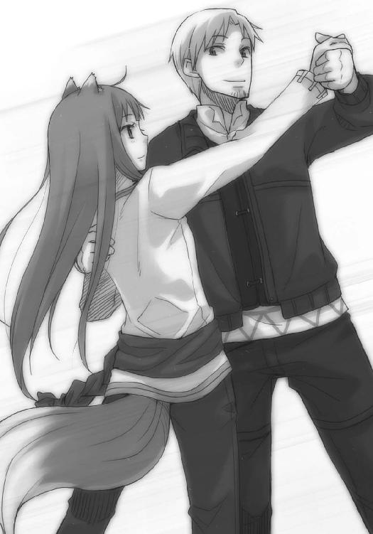
いつまでも続くかと思われた踊りが終わったのは、意外にもホロがロレンスの足を踏んづけたからだ。
「おわっ」
と、ロレンスが小さく声を上げた直後には、幸いというべきか二人諸共にベッドの上だった。
つないでいた手だけは離していない。
ロレンスはホロがわざとやったのではと意地悪く勘ぐったが、ホロはなにが起こったかわからないようにきょとんとしていた。
そして、ようやく我に返ったようでロレンスと目が合う。
自然と、笑みがこぼれてきた。
「......なにをしておるんじゃわっちらは」
「そういうことは敢えて問わないほうがいいな」
ホロはくすぐったそうに首をすくめて、牙を見せる。
本当に楽しそうだった。
だからこそ、言葉を続けられたのだろう。
「わっちの故郷の方角も書いてあったじゃろう？」
ロレンスは馬鹿なやり取りをした余韻を示す笑顔のまま、本の内容を思い出し、うなずく。
本には、麦束尻尾のホロウはおよそ人の足で二十日あまりの眠りと誕生の方角の合間にあるロエフの山奥から来た、とあった。
北が眠り、東が誕生の方角だろう。方角に意味を持たせるのはよくあること。
それに、なによりも決定的なのは、ロエフの山奥という記述。
この名前はロレンスも知っている。
レノスの町の側を流れるローム川に注ぎ込む支流の名前だ。
ほとんど疑いもなく、ロエフの山奥とはロエフ川の源流が流れ出す山のことだとわかる。こうなれば、ホロは本当に独りでも十分に故郷に帰れることだろう。
そして、その予想は間違ってはいないはず。
間違っているとしたら、パスロエの村で、ロレンスが麦を荷台に載せていたことだけだ。
「で、全部読み終えたのか？」
沈黙が二人の見え透いた噓を暴いてしまいそうで、ロレンスは間をあけずにそう言った。
つないでいた手も、体を起こしがてら離してしまった。
「うむ。一番古いのはこの町の最初の最初、人が住むために最初の柱を打ち立てた人なのか怪しい男の話じゃった」
「知り合いじゃないのか」
その軽口に、ホロは「かもしれぬ」と笑った。
「しかし」
ホロも体を起こした。
「酒をこぼしてしみを作らぬうちに返しにいったほうがよいかもしれぬ。写しが必要なほどではないじゃろうし、ほとんどはわっちの頭の中に元々あったことじゃからな」
「確かにな。お前が読んでいる途中に転寝して涎をたらさないとも限らないし」
「わっちゃあそんなことせん」
「わかってる。いびきも当然かかないんだよな」
ロレンスは笑い、さっさとベッドから立ち上がる。
そのままそこに留まっていては嚙みつかれかねないからだ、と演出して。
「ぬしが寝ておる最中にどんな寝言を言っておるか教えて欲しいかや」
ホロは半目になってそんなことを言ってくる。
何度かどきりとさせられた言葉だ。
なぜこんなにもこのやり取りが悲しいのだろうかと、ロレンスは表情に出ないようにするので精一杯だった。
「多分こうだろう。もう、これ以上食べないでくれ......」
うまいものをたらふく食べる夢を見るのはよくあること。
ただ、ホロと旅を始めてからうまいものをたらふく食われる悪夢を実際に何度か見た。
「食い扶持はきちんと稼いでおるじゃろうが」
ホロは抗議をして、ロレンスとはベッドの反対側に下りる。
二人は喧嘩しているのだと演出するように。
「結果論だろう。クメルスンでの儲けがなかったら、本当に俺の財産が文字どおり食いつぶされていた」
「ふん。毒を食らわば皿までというからな。その時はぬしもぺろりと平らげてやろう」
芝居がかった舌なめずりをして、ホロは妖艶な目つきでロレンスを見る。
それが本当に芝居だというのはもちろん大昔からわかっていた。
ただ、その下にあるものがこれまでと違うのも、また痛いほどわかった。
どこか決定的なつながりが断ち切れてしまった。それはとても悲しかったが、耐えられないほどではない。
それが一番悲しかったのは、きっと神が意地悪なせいなのだ。
「まったく。で、本を返しに行った帰りになにが食いたいんだ？」
ロレンスが言うと、ホロは尻尾をぱたぱたと振りながら、意地悪そうにこう言った。
「それはあとのお楽しみ」
このやり取りだけは、いつもどおりに楽しかった。
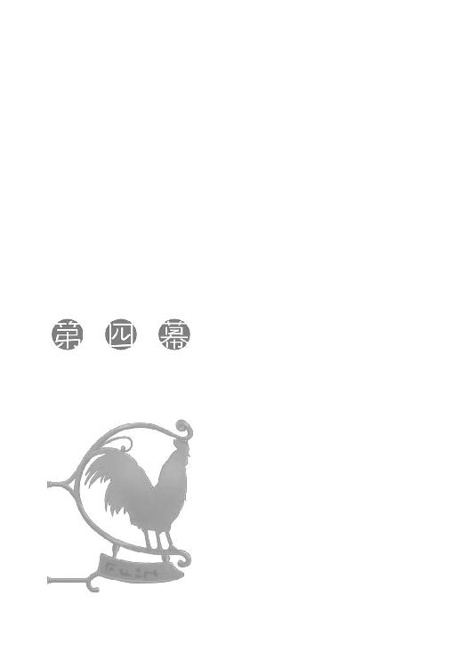
翌日、昼過ぎに宿を出る時にリゴロのところに行ってくるとアロルドには伝えておいた。
ちょっと外出している間に会議の内容が公布される、なんていうことは考えにくいだろうが万が一ということもある。アロルドは黙ってうなずき、じっと炭火を見つめていた。
町に出て、一度通った狭くて細い道をまた歩く。
前回と違ったのは水溜りが少なかったことと、会話も少なかったこと。
ぽつりぽつりと、ホロが気を遣うようにとっくに把握しきっているだろう取引の状況と、展望を再度聞いてきた。
「万事順調じゃな」
何度か聞いた言葉をホロは言った。
ロレンスがホロに手を貸した大きな水溜りの場所は、どこかの子供がいたずらで掘ったのか大きい穴になっていたらしく、いくらか水面は低くなっていたものの依然として水溜りになっていた。
だからそこだけは以前と同じようにロレンスがホロに手を貸してやり、ホロは手を預けて渡った。
「ああ、順調だ。ちょっと怖いくらいだ」
「何度も痛い目に遭っておるからの」
ホロは言い、ロレンスが笑う。
しかし、その怖さのほとんどは取引の先に待っている利益があまりにも大きいからだろう。
エーブがロレンスのことを罠に嵌めているとは思えなかったし、また狡猾に嵌めるというのもそう簡単にはできない気がした。
金を借りて、商品を買い付け、それを売るだけなのだから。
その売買さえ失敗しなければいい。
もしも力業で罠に嵌めようとして、商品を途中で強奪するなどの手段を取りたければ、船を使おうとは提案しないはず。
川は道よりもよほど重要な貿易路だ。そこを行く船の数も多い。
そこで誰にもばれずに強奪劇を繰り広げるのは至難の業。
やはり、問題はない気がする。
「わっちの体は銀貨で何千枚だったかや」
「ん、大体二千枚くらいか」
ホロの体というよりも、エーブの家の名の値段なのだが。
「ほう。それで酒を買ったらどうなるかや」
「そりゃあとびっきりのやつを信じられないくらい買える」
「その金をもってしてぬしは金儲けをするんじゃな？」
分け前を寄越せということだろうが、もちろんロレンスもそのつもりだ。
「うまくいったらいくらでも酒をご馳走するよ」
「ふふ、それこそ......」
と、ホロは言って、慌てて口を閉じたのがわかった。
一瞬怪訝に思ったが、ホロがなにを言おうとしたのかロレンスにもわかった。
それこそ一生酔いから覚めぬほどに、だろう。
それは、叶わない夢だ。
「それこそ......わっちが酔っ払うよりも前に吐き出してしまうほどにな」
賢狼ホロは、そしてそんなことを言った。
行商人ロレンスとして、引き継がないわけにはいかない。
「なんだお前は飲み比べに負けたのか」
「うむ......じゃが、それも当然じゃ。考えてもみてくりゃれ？ 相手はわっちほどじゃありんせんがなかなかに見目良い娘でな、そんなのが顔を真っ赤にして頰をパンパンに膨らませてものすごい形相で酒を胃の腑に押し込んでおるんじゃ。誇り高き賢狼であるわっちも似たような醜態を晒しておるのではと気がついた瞬間に、喉の栓が外れおった」
どちらにしろとんでもない醜態だが、そんな見栄っぱりなところがあまりにホロらしくて笑えてしまった。
ホロは腕を組んで苦虫を嚙みつぶしたような顔をしている。
本当に、おてんば娘のような無邪気さだ。
これが演技でなかったとしたらどれほど楽しかっただろう。
「ま、そんな目に遭ってもまた懲りずに酒を飲むんだよな」
ロレンスが言うと、ホロは顔を上げて「たわけ以外のなにものでもない」と答えたのだった。
リゴロの家に着くと、リゴロは不在だった。
応対してくれたのはやはりメルタで、相変わらずの修道服だった。
「読むのがとてもお早いのですね。私は短い物語でも読むのに一月近くかかります」
謙遜というわけでもなく、わずかに恥じ入るように微笑みながら言うあたりがとても優しそうな雰囲気を与える。
ロレンスはそんなことを思ってしまったが、メルタがリゴロの机から鍵を取り出し、ロレンスたちを先導する間、一度もホロに足蹴にはされなかった。
「リゴロさんからは、なにかまだ必要なものがあれば自由にお貸しするようにと申しつかっております」
書庫の扉の鍵を開け、蜜蠟に火をともしながらメルタは言った。
「なにか読みたいものがあるか？」
ロレンスがホロに言葉を向けると、曖昧にうなずいた。
「では、自由にご覧になってください。いくら貴重な書物といえど、誰の目にも触れられないのは少しかわいそうですから」
「ありがとうございます」
礼を言うと、にこりと笑って首をかしげるだけ。
修道女だからというよりも、メルタは元々こういう性格なのかもしれない。
「ただ、お貸しした本はリゴロさんのお祖父様が書き直されたもので最近の言葉で書かれていますが、ほかの古い書物は古い文字で書かれていると思います。中には読みにくいものもあるかもしれません」
メルタの言葉にホロはうなずいて、蜜蠟の灯りを受け取るとゆっくりと書庫の奥に歩いていった。きっと本当は読みたい本など特になく、時間をつぶしたかっただけなのだろうとロレンスは思う。
ホロが宿でロレンスを踊りに誘ったのも、ある種の期待を持ってのことだったのだろう。
それこそ、全てをわかったうえであくまで楽しく、最後まで笑ってこの旅を終えられないかという期待を持って。
しかし、それは無理だったとわかってしまった。
「あの」
「はい？」
ホロの持つ灯りを見ていたメルタは、ロレンスのほうを振り向いた。
「図々しいお願いなのですが、リゴロさんの庭園を見せてもらってもよろしいですか？」
暗い書庫の雰囲気の中では、どんどん思考が暗くなってしまいそうで怖かった。
ただ、メルタはもちろんそんなことになど露ほども気がつかず、蜜蠟の灯りのように微笑んで「きっとお庭のお花たちも喜ぶと思いますよ」と言ってくれた。
「ホロ」
ロレンスが声をかけると、呼ばれることがわかっていたようにホロが書棚の陰から顔を出した。
「本に絶対に粗相するなよ」
「わかっておる」
メルタはころころと笑った。
「大丈夫ですよ。リゴロさんの扱い方のほうがよほどひどいですから」
なんとなくそれが事実のような気もしたが、一応ホロにそう注意して、ロレンスはメルタに先導されて一階に戻った。
あの明るい庭を見ていれば、なにも考えずぼんやりできるだろうという期待があった。
「なにかお飲み物をお持ちしますね」
「あ、いえ、お構いなく」
と、いう言葉はそよ風のごとく聞き流して、メルタは一礼すると静々と部屋から出ていってしまった。
商談で来ているならば相手にも利益になることがほとんどだから気にすることもないが、これは完全に邪魔をしに来ているのであまり気遣われるのも申し訳なくなる。
それとも、そんなことを考えるのは損得勘定しか頭にない商人だからか、とも思ってしまう。
自ら持てるものを分け与えよとは、教会の教えの基本原則のうちの一つだ。
「まあ、いいか......」
敢えて口に出して、これ以上なにも考えたくないとばかりに思考を停止させた。
目はリゴロの庭に向けている。
透明なガラスを造るのはかなり難しいと聞く。値段のみならずさまざまな問題がこの窓を造るのにはあったことだろう。
何枚もの透明なガラスを継ぎ合わせたその向こうには、それ以上に手がかかっているだろうと窺える庭がある。
この冬のさなかに緑や白の草花を見るのはなんとも奇妙な気がする。
手を尽くせば一年中このような景色を保てるとリゴロは得意げに言った。
その言葉を信じるのならば、リゴロは一年中、飽きもせずにこの机に座り、この庭を眺めていることになる。
リゴロの生活の世話をしているのだろうメルタは、きっとその背中を呆れるような笑みを持って眺めているはずだ。
まるで絵に描いたような生活。
ロレンスはそれが正直に羨ましくて、そんなことに嫉妬している自分に苦笑いをして視線を戻した。
紙や羊皮紙であふれ、一見汚いように見えるのに片づくところはきちんと片づいている。
家や仕事場と呼ぶよりも、巣、と呼んだほうがしっくりくるような散らかり具合。
こんな部屋だというのに聖母の石像があるのは、リゴロがエーブと親しいからだろうか。
それとも、売れ残りを無理やりに引き取らされたのか。
きちんと木の箱に綿花とともに収められ、箱の中には赤い糸でくくられた小さな羊皮紙も置かれている。きっと、教会で聖別されたということを示す証明書だろう。
石像の大きさは、両手の指を目一杯に引き伸ばした程度。
これで値段はどのくらいなのだろうかとしげしげと見つめていると、ロレンスはあることにふと気がついた。
石像の表面が少しはげていたのだ。
「なんだ？」
石像は見た目を良くするために石灰の粉を塗ったり、時には墨を塗ったりする。
聖母の石像は柔らかな白だったので、きっと塗ってあるのは石灰だろう。
ただ、それがはがれたらしい奥にあるのが、なにか妙なものに見えた。
軽くこすり、拭ってみる。
「......これは、まさか──」
「どうかされました？」
そして、そんな声で我に返った。
振り向くと、メルタだった。
「あ、いえ......お恥ずかしい話ですが、聖母様の像があまりにも良くできているので、悩みを聞いていただけないかなと」
「まあ」
メルタは目を軽く見開いて、柔らかに笑う。
「私は教会の子羊ですから、その悩みを取り除いて差し上げましょうか」
メルタは頭の固い修道女ではないらしい。
ロレンスは「ご遠慮します」とおどけて答えた。
「パンから造った飲み物ですが、お口に合うかどうか」
綺麗に削られた木の盆の上に載っているのはやはりこじんまりとした木のコップと、それだけは鉄製の水差し。
盆やコップはもしかしたらメルタの手作りかもしれない。そんな柔らかな曲線だった。
「クワスですか」
「まあ、商人さんというのは物知りなのですね」
薄い茶色の飲み物をコップに注ぎながら、メルタは答えた。
「最近ははやらないのかあまり見ませんね」
「私は神の血よりもこちらのほうが......あ、今のは聞かなかったことに」
神の血とはぶどう酒のことだろう。
物静かなメルタの精一杯の冗談は、本当に微笑ましいものだ。
ロレンスはうなずいて、口に人差し指を当てた。
これがリュビンハイゲンやクメルスンやテレオの村でのことだったら、ホロの復讐が怖くてもう少し違った対応になっていたかもしれない。
ただ、このやり取りを本当に楽しんでいたかというと、その問いには否と答える。
ロレンスの頭の中では、聖母の石像のことがめまぐるしく回転していた。
「どうぞ」
メルタは笑顔で勧めてくれた。
ロレンスはそれでもメルタの柔らかい物腰にどこかささくれ立った心が癒されるのを感じながら、コップを手に取った。
「そういえばリゴロさんは会議に？」
「ええ。今朝方突然呼び出しがあり......あ、えっと、会議についてのことは他言するなと言われていまして......」
申し訳なさそうにするメルタに、ロレンスはもちろん商談用の笑顔を浮かべて首を横に振った。
「いえ、内容を聞きたいというわけではありません。話題の選び方が悪かったですね。このガラスのことをお聞きしたかったので、リゴロさんとお会いできなかったのが残念で」
「あら、それは......。このガラスは、一枚一枚根気よく集めて、都合三年かかったんですよ」
「なるほど。リゴロさんのお庭にかける情熱が伝わってくるようです」
ロレンスが殊更驚くように言ってやると、メルタは自分が褒められたかのようににこりと微笑んだ。
エーブは、リゴロがなんの欲も持たずにただこの庭を作ることだけに情熱を傾けていることを理解できないと言っていたが、メルタのような理解者が側にいて、自らの趣味に没頭できるなら毎日がとても豊かな日々だろう。
「それほど情熱をかけられているなら、会議の書記を辞めてしまいたいなんていうリゴロさんの大胆な発言も納得できるというものです」
メルタは困ったように笑い、うなずいた。
「お仕事に呼ばれても、時間の寸前までお庭を眺めているんですよ」
「いっそのこと、と思っても、書記というのは大事なお仕事ですからね」
「労働は確かに尊いと神も仰っております。ですが、のんびりと日がな一日お庭を眺めて暮らすというささやかな願いくらい、叶ってもいいのでは、などと思ってしまいます」
メルタはそう言って笑う。
敬虔な修道女なら抱いてはならないような堕落した夢だが、それが微笑ましいものに思えるのはメルタが恋をしているからだろう。
どう考えたって、リゴロの幸せが自分の幸せ、と言っているようなものだ。
捉えようによってはメルタ自身の夢のため、と言えなくもない。
日がな一日のんびりと庭を眺めるリゴロの側で、あれこれ甲斐甲斐しく世話をするのがメルタの夢なのかもしれないのだから。
「ささやかな願いほど叶いにくいものですよ」
「ふふ。そうかもしれませんね」
メルタは頰に手を当て、眩しそうに庭を見た。
「それに、いつでも、いつまでも見ていたいと思っているうちが一番楽しい時なのかもしれませんしね」
ロレンスは虚をつかれ、まじまじとメルタを見てしまった。
「どうかされました？」
「メルタさんのお言葉に感心してしまいました」
「まあ、お上手」
まったくの噓でもないが、メルタは冗談だと受け取ったらしい。
ホロとずっといたい。いつまでもいたいと、そんなふうに思っているうちが花、というのは、あまりにも鋭くロレンスの胸に突き刺さった。
実際にずっといれば、いつでも会えるとわかれば、どうしたってその喜びは減るだろう。
それはそんなに難しい世の真理ではない。
簡単な事実だからこそ、それを覆すようなホロの夢はあまりにも難しいのだ。
「ですが、常にささやかな夢を追い続けるというのはとても幸福なことだと思います」
ただ、せめてそんなことだけを口にして、避けようのない現実を忘れたかった。
そして、そんなやり取りをしているうちに、ホロが燭台を持って一階に上がってきた。
火が消えてしまったとのことだが、きっと噓だ。
ロレンスが逃げ出したように、ホロも書庫の暗い空気が嫌で逃げてきたのだろう。
なぜそんなことがわかるかといえば、明るい日差しの入る庭に面した部屋に来るや、恨むような視線を向けてきたから。
ホロはなにも言わずロレンスの隣に立つ。
ロレンスは、そんなホロにまっすぐ視線を向けて、口を開いた。
「なにかいい本はあったか？」
ホロは首を横に振る。代わりに、「そちらは？」と目で聞いてくる。
ホロはホロだ。
ロレンスの様子の変化など、軽くお見通しなのだ。
「こっちはな、ちょっと、ためになる話を聞いた」
だから、そう口を開いた瞬間だった。
屋敷の扉を叩く音がした。
それから、大して間をあけずに扉の開かれる音。
どかどかどかという遠慮のない足音が響き、その人物は現れた。
メルタは当然驚いていたが、無法な闖入者に怒るでも慌てるでもなかったのは、それがよく見知った人物だったからだろう。
そこにいたのは、エーブだった。
「来い。まずいことになった」
息が上がっていた。
「武装蜂起だ」
「扉を固く閉じて、絶対に、直接知っている人間以外は扉を開けるな」
エーブが言うと、メルタは石でも飲み込んだかのようにうなずいた。
「は、はい」
「いくら会議に不満があるとはいっても、まさか書記の家まで襲いには来ないだろうから大丈夫だとは思うが」
エーブはそう言って、メルタと軽く抱擁を交わす。
「もちろん、リゴロも大丈夫だろうぜ」
その言葉に、メルタは悲壮な様子でうなずく。
自分の身がどうこうよりも、そちらのほうが重要な様子だった。
「よし、行こう」
その言葉はロレンスたちに向けられたもので、ロレンスも小さくうなずいた。
ホロは一人だけ興味なさそうに離れていたが、フードの下ではあちこちに耳を向けているのがわかった。物々しい町の雰囲気を感じ取っているのかもしれない。
「じゃあな」
そして、エーブが扉から離れると、メルタは心配そうに両手を組み、無事を祈っていた。
「蜂起というのは、具体的に誰が？」
人気のない道を小走りに近い速度で歩きながら、ロレンスは訊ねた。
「毛皮職人と、加工に必要な商品を扱う連中だ」
突然リゴロの屋敷にやってきたエーブは、開口一番にまずいことになったと言った。
きっかけは、予想外に早い会議の結論の公布だったという。
会議の結論を記した木札を中央広場に立てようとしたところ、手に手に武器代わりの加工道具を持った職人や商人が邪魔に入り、会議の結論の取り消しを要求した。
よくできたように見える五十人会議の結論も、場合によっては明日から仕事や商品がなくなってしまうかもしれないと思う者たちには、決して飲めない危険な結論に思えるのだろう。
それに、エーブも会議の結論は見通しの甘いものだと言っていた。
その不安や心配が武器を持っての蜂起という形を取ってもおかしくはない。たとえ町の毛皮産業が生き残っても、自分たちが破産してしまったあとでは意味がないのだ。
そして、その蜂起の情報はあっという間に町中に伝わり、町の中心部は人が入り乱れた大変な状況になっているらしかった。
ロレンスの耳にも遠くから人々の喚声のようなざわめきが聞こえてくる。
ホロを見ると、うなずかれた。
「当然、会議の決定を覆すなんてこと、できませんよね？」
その言葉には、エーブがうなずく。
五十人会議は、町のさまざまな立場の有力者たちが集う会議で、そこでの決定は町としての結論を示す。それはなによりも優先されることであり、レノスの町に住むのであれば無条件に従わなければならない。
その会議の結論が、利害が対立するからといって一部の者たちから否定されるとあっては会議の権威を著しく傷つけることになり、正常な町の運営が行えなくなる危険性がある。
なにより、町とはそもそもが相反する利害関係の者たちが集まってこその町だ。全員が納得し、常に万全な結論などありはしない。
毛皮の加工に携わる者たちは、それらを承知のうえで蜂起したのだろう。
「会議の名誉にかけて、結論は実施されることになる。すでに町の外にいた商人たちが中に入ってきている。職人連中が必死に流入を食い止めようとして血も流れているようだが、まあ、無理だろう」
エーブは複雑に入り組んでいる路地を迷うことなく歩いていく。
時折、似たような目的を持った者たちなのか、商人ふうの者が狭い路地を全力で駆けていく姿を何度も見た。
ロレンスはホロがついてこられるか心配だったが、今のところ大丈夫らしい。ロレンスの手を摑みながら、しっかりとついてくる。
「毛皮の取引は？」
「会議の結論はオレが摑んでいた情報どおりだった。それが実施されたとなれば、当然可能だ」
だとすれば一刻を争うことになる。
「どうします。現金受け渡しは事後で、とりあえずこのまま毛皮の買い付けに？」
その質問に、しかし、エーブは「いや」と答えた。
「難癖をつけられたくない。きちんと現金を持って臨もう。お前はデリンク商会のほうに行って現金を取ってきてくれ」
エーブは水溜りも気にせず歩き、ロレンスが聞き返すよりも先に言葉を続けた。
「オレは船の手配をしてくる」
エーブは言って、立ち止まる。
狭い曲がりくねった路地から突然開けた場所に出ると、そこは港のまん前だった。
たくさんの人々が行き交い、そのどれもこれもが血相を変えている。
あわただしく駆け回る商人全てが毛皮の調達に走っているように見え、ぞわりと悪寒に似たものが背筋を這う。
毛皮の職人たちと会議の結論を記した木札を死守する者たちが対峙しているという広場は、きっとすごいことになっているのだろう。
「これだけの連中を出し抜くわけだからな。単純に慌てればいいというわけじゃない」
エーブはくるりと振り向いた。
「宿で落ち合おう。毛皮の交渉は、全てを揃え、満を持して臨む」
少しも揺らがない決意に満ちた青い瞳。
この港を前にして、エーブと酒を飲んだ時、エーブは自身の子供っぽい復讐のために金を稼ぐのだと言った。
その動機の良し悪しを決めることなど当然できはしない。
ただ、エーブが腹の据わった優秀な商人であることだけはわかった。
「わかりました」
差し出してきた手を軽く握ると、エーブはわずかに笑って身を翻し、人ごみの中に消えていった。
きっと船の手配を見事成し遂げ、毛皮の販路を確保してくれるだろう。
ロレンスはエーブの消えていった方向を見つめ、そんなことを思った。
「では、わっちらも行くかや」
ホロが声をかけてきた。
その声は、緊張しているわけでも、急かすわけでもない。
「そうだな」
短く返事をして、ロレンスは歩き出そうとした足を止めた。
ホロの、射抜くような視線に縫いとめられた、と言ってもいいかもしれない。
「ぬしがさっき見たらしいこと、いや、それを見て思ったことをなぜわっちに言わぬ？」
顔が笑ってしまったのは、ホロはなんでもお見通しだったからだ。
「ぬしはなにかこの取引の危ないところに気がついた。違うかや」
だから、隠そうともせず即答した。
「違わない」
「それをなぜ黙っておく？」
「聞きたいのか？」
ホロの手がロレンスの胸倉に伸びかけたのは、質問に質問で返されたから、などという単純な理由ではないはずだ。
ロレンスの胸倉に指先が触れたところで止まっているホロの手を取り、下ろさせてから、離した。
「今の今まで気がつけなかったこの取引の危険についてお前に喋ったとする。危険は、俺の身にも、お前の身にも及ぶ。しかし、可能性を検討した結果、おそらく危険を顧みず利益を追求したほうがよいとなるだろう。なぜなら、手に入る利益は俺の命を賭けるに値するものだし、お前の身に危険が及んだとしても、それはお前自身の力でいくらでも回避できるからだ。もちろん」
ロレンスが言うと、ホロは、表情を消してその言葉を受け止めた。
「そうなると再会は難しいだろうが」
ホロは黙っている。
ロレンスは、続けた。
「そして、そんなやり取りをしてしまったら、お前は間違いなくこう言うだろう？」
「......全ての利益を放り出し、あらゆる危険を回避して、一縷の望みに賭けるようなことはするでない」
肩をすくめて笑ったのはロレンスだ。
気がついていたことを黙っていたのは、ホロの口からその台詞を出させたくなかったため。
この取引が成功すればロレンスの夢はほぼ叶う。金持ちになってこの町に帰ってきたロレンスを出迎えたホロは、祝福の言葉と共に、笑顔で別れの言葉を口にするだろう。
あるいは、取引に失敗した時、ホロは売られることなどもってのほかとばかりに逃げ出して、良い踏ん切りがついたと故郷に帰るだろう。甘えた考えが許されるなら、ロレンスの身を案じて様子を見に来てくれるかもしれないが、そのあとにロレンスが立ち去るホロを引きとめる言葉を持つことはできない。
つまり。
「お前と旅を続けられるかもしれない可能性は、この取引を全て放り出した時にしか生じない」
自分の夢がかかっていようとも、お前を危険に晒すことなどできはしない、と気障な言葉をもってして。
「それでわっちが喜ぶと思うかや？」
ロレンスは、恥ずかしげもなく言った。
「思う」
そして、その瞬間に頰を張られた。
「嬉しい、とは言わぬ。すまぬ、などとは絶対に言わぬ」
ホロのか細い手で力任せに叩いたら手のほうが痛かっただろう。
ロレンスはそんなことを思いながら、わなわなと震えるホロの顔を見ていた。
これで、ロレンスがホロに、ホロがロレンスにこの先も旅を続けようと言い出すきっかけは全てつぶされた。
それはこの町で旅をやめようと言い出したホロの望むことで、ロレンスの望まぬことだ。
自分の望まぬことをしてまで相手の望むことをする。
これはきっと世間では優しさと呼ばれる行為の中でも上位に位置するもので、ホロはそれを怖がっている。
要するに、突然の旅の終わりを宣告されたことへのささやかな復讐だった。
「ぬしは計算高く冷徹な商人だったと記憶しておこう」
ホロのその言葉に、ロレンスはようやく笑うことができた。
「間抜けな商人だと思われたままじゃ名誉に関わるからな。じゃあ、軍資金を借りに行くか」
歩き出すロレンスの後ろを、若干の間をあけてホロがついてくる。
鼻をすする音がしていたのは、寒いからではないだろう。
ずるいとは思ったが、ささやかな復讐すらしないままホロと別れられるほどロレンスの心は広くない。
ただ、復讐などいつだって虚しいものだ。
デリンク商会に到着した時、ホロはいつも以上にいつもどおりだった。
復讐は復讐を呼ぶ。
ただ、これでいいのだ。
「きっと、この世に神などおらんのじゃ」
ホロはぽつりと呟いた。
「ぬしらのいう全知全能の神がおるのなら、どうしてわっちらが苦しむのをじっと眺めておるのじゃろうな」
ロレンスは、扉をノックしようとしていた手を止めた。
「ああ、そうだな......」
ホロの言葉にロレンスはうなずき、それから、扉をノックしたのだった。
デリンク商会は相変わらず質素なたたずまいで、商会の中も外の騒ぎとは無縁のように静かだった。
もちろん外で起こっていることは把握していて、ロレンスの顔を見るや笑顔で現金を手配してくれた。
なにを考えているのかわからない不気味な笑顔ではあったが、「お連れの方の身の安全だけは保障します」と胸を張って言ったその姿だけは信用ができた。
どんな心の冷たい商人であっても、そうであるからこそ商品の取り扱いに関してだけは信用できる。
ただ、金貨の詰まった袋をロレンスに手渡すのではなく、その袋はいったんホロの手に渡された。
金を貸す者の知恵だ。
質草たるホロの手から金貨を渡させることによって、その存在を心により強く焼きつけさせるということなのだろう。持ち逃げを防ぐという意味合いもあるし、なにより借りた金を増やそうとする意欲が段違いに上がる。
ホロは、ホロの小さな手ですら楽に持てるような袋をしげしげと見つめ、それから、ロレンスを見た。
「儲けたら、もちろん特級のぶどう酒じゃろう？」
永遠に酔っ払えるほどの。
最後の思い出として、永遠にホロの心に残るほどの。
ホロは、仏頂面で、そう言った。
「ああ、もちろんだ」
ロレンスは受け取って、答えた。
「我々もご健闘をお祈りしています」
口を挟んだのは、放っておいたらいつまでも踏ん切りがつかない、と経験からわかっているためだろう。
しかし、ホロとロレンスはとっくに別れの挨拶をすませてある。
「次に会う時は、一角の商人だ」
大見得を切ると、ホロは笑った。
「わっちの連れがつまらぬ商人では困りんす」
ロレンスはその言葉にどんな表情を返したのかわからない。
わからないが、店をあとにした時、振り返るとホロは扉のところでうつむいていた。
たった六十枚の金貨が詰まった袋を手に、ロレンスは町を走っていた。
歩いていられるような心持ちではなかった。
これが正しい選択だったのかわからない。
まったくわからない。
これ以外に選ぶ道などないのに、それでもなおこれが本当に正しい選択だったのかわからない。
なにもおかしいところなどないような気がする。この先には夢にすら見なかったような利益が待っている。
それでも、心が躍りはしない。
ロレンスは、金貨を抱えて走っていた。
宿に着くと、宿泊客とその仲間たちだろう、入り口のところで額を寄せ合ってなにごとかを話している者たちがいた。
聞き耳を立てるまでもなく、町に起こっている騒動のことだと予想がついた。
ロレンスは足を厩のほうに向け、倉庫のほうから入ることにした。
厩には二頭の馬と一台の荷馬車がある。当然そのうちの一頭と一台はロレンスのもの。なかなか立派な荷馬車で、御者台は独りで座るには広すぎるくらいだ。
眉根に皺が寄ってしまったのは、抱えている金貨の袋が重いからではない。胸に詰まっているものがあまりにも重いからだ。ロレンスは振り切って倉庫へと入った。
相変わらずさまざまな荷物が頭の高さまで積まれ、荷物と荷物の間にようやく細い通路ができているといった倉庫。そこになにがあるのかなど、完全に把握している者は誰一人としていないだろう。なにかちょっとしたものを隠すにはうってつけのような気がする。
ロレンスがそんなことを思って歩いていると、ばったりとその人物と出くわした。
「お、おお、待ちくたびれたぜ」
しゃがみ込み、荷物を漁っていたエーブだった。
「借りてきましたよ。軍資金」
ロレンスが手にしていた麻袋を掲げると、エーブは三日ぶりの水を飲み込むように、目を閉じた。
「船の手配もできた。毛皮の騒動に便乗して積荷の値段を値切られた船頭を見つけた。金をたんまり弾んだらたとえ軍勢が川を封鎖しても船を出してやると言ってくれたぜ」
目のつけどころがやはりいい。
あとは、この騒ぎの中で無事に毛皮を買い付けられるかどうかだ。
そして、それを持って川を下れば三倍の売値。
考えるだけで眩暈がする。
エーブは漁っていた荷物の中から片手に収まる巾着を取り出し、手早く懐にねじ込み立ち上がった。
「金貨を叩きつけられれば商会の連中の首が縦に振れないわけがない。目が釘付けになるだろうからな。振りたくなくたって振れちまうだろうさ」
その様が容易に想像できて笑えてしまうが、上手に笑えたかは怪しかった。
「よし、ならば行こう。冗談のような取引だ」
口数が多いのはエーブも緊張しているからだ。
トレニー銀貨にして二千枚に達する、リュミオーネ金貨という想像上の産物といっても差し支えないような夢の金貨六十枚を使っての大取引。
そこから生まれる利益は人の命すらかすみかねないほどのもの。
いや、実際に、かすんでしまうほどのものだろう。
ロレンスの後ろにある厩の出入り口から外に出ようとしたらしいエーブは、ロレンスが動かなかったせいで通せんぼをされる形になった。
「どうした？」
顔を上げ、不審げに問いかけてきた。
「この金貨で毛皮を買えば、最終的な利益で銀貨四千枚、でしたっけ？」
頭一つ分低いエーブが、一歩、二歩、と後ろに下がり、頭巾の中に全ての表情を隠す。
「そうだ」
「船も手配できて、あとは毛皮を買い付けるだけ」
「そうだ」
「それを運んで売り付ける先もおおよそ見当をつけている」
「そうだ」
エーブはロレンスから資金を借りる代わりにその頭脳と経験を提供した。
考えに考え抜いたのだろう。
この騒ぎの中、複雑に絡み合った町の連中の思惑の間を縫うように取引を結び、利益を生み出す構図を描き出した。
その自信が、たとえ今ここでどんな突風が吹いてもぴくりともしないように見えるほど安定したエーブの姿勢に現れていた。
荒野を行く行商人。
最初に抱いたエーブへの感想。
乾いた風にやられた、かすれた声。
そして、時にはその分厚い頭巾の下に隠した弱々しい本音を見せながらも、ロレンスをたばかれる肝の太さ。
これだけ狡猾な商人なのだ。
このまま黙って、なにも気がつかなかったふりをして、馬鹿になりきって取引を任せていればなにも問題はないのかもしれない。
それに、エーブがロレンスを騙しているとしても、それはロレンスの利益を横取りするとかそんなことではない。
もっと逼迫したことで、有り体に言えばこの取引をうまくいかせるための知恵ですらある。
エーブは馬鹿ではない。勝算がないことに手を出すような浅はかな商人とはとても思えない。
だから黙っていればいい。
このまま取引が成功すれば、少なくともロレンスは町商人になれる。
だから、黙っていればいいのだ。
「お前、まだオレを疑っているのか？」
ぽつりと、エーブが言った。
「いえ」
「なら、どうした。怖気づいたのか？」
ロレンスは自問した。
自分は怖気づいたのだろうかと。
いや、違う。
黙って馬鹿になりきれないのは、ホロのことが頭から離れないからだ。
「さっさとしないと外の連中が現金の都合をつけちまうかもしれない。根回しはしてあるはずなんだ。どこから現金を調達するかわからない。馬鹿でかい利益を指を咥えて眺めているつもりか？ おい、聞いて──」
ロレンスは、エーブの言葉を遮って言った。
「あなたは怖気づかないんですか？」
エーブの顔が、これ以上ないほどにきょとんとした。
「オレが？ はっ。馬鹿なことを言うな」
吐き捨てるように言って、口元を歪めた。
「怖いさ」
その声は、小さくとも確かな響きを持って倉庫の中に広がった。
「銀貨にして数千枚の取引だぞ？ 怖くないわけがない。大金の前には人の命など軽い。それでもなおどっしりと構えていられるほどオレの肝は太くない」
「......私が態度を豹変させて襲いかからないとも限りませんしね」
「はっは。そう。その逆もありうる。いや、そう考えてしまうからこそ互いに疑心暗鬼になり......なんてこともあるだろうぜ。どちらにせよ」
エーブは深呼吸を挟んで、気を落ち着けるように静かに付け加えた。
「こんな危ない橋ばかりは渡れない」
エーブにはこの取引が危ないという自覚が確かにある。
いや、わかっているからこそロレンスを騙しているのだ。
そんなことをしてまでもなお求める利益の先に、なにを見ているのだろうか。
「ははは。つまらないことを聞きたそうな顔をしているぜ。お前はこう聞きたいんだろう？ どうしてそこまでして金を稼ぐのですか、と」
乾いた声で笑って、右手の掌を腰の辺りで拭ったように見えた。
それくらいに、自然な動作だった。
「悪いが、ここで取引を降りてもらうわけにはいかない」
その手には、ナイフと呼んでは失礼なほどに肉厚で長い、片刃の鉈が握られていた。
「本当ならばこんなものは出したくない。だが、金額が金額だ。お前に降りられるとオレは困るんだよ。わかるだろう？」
強力な武器を手にした時、人は知らず知らず興奮して頭に血が上ってしまうものだが、エーブの声はあくまで冷静で乾いていた。
「取引がうまくいけばお前の利益は保証する。だから、それを渡せ」
「金貨六十枚の前に、人の命は軽いですからね」
「ああ、そうだ......その軽さを、実感したくないだろう？」
ロレンスは商談用の笑みを浮かべ、右手にホロから手渡された袋を持ち、それを差し出した。
「知恵と勇気を持つ者に、神の祝福あれ」
エーブが囁くように言ってその袋を摑もうとした瞬間だった。
「......っ」
「......！」
互いに無言の気勢を発し、その一動作を終えた。
ロレンスは後ろに下がり、エーブは右手を振り抜き。
直後に、どちゃりと音を立てて金貨の詰まった袋が床に落ちた。
それくらいの、刹那の瞬間。
エーブの瞳が青い炎のように揺らめき、ロレンスは驚きもせず見つめ返す。
ただ、失敗した、と二人共に気がついたのはほんの数秒後のことだ。
「お前とオレは一つずつ失敗した。違うか」
腕を引いて後ろに下がらなければエーブの鉈が十分ロレンスのことを捕らえていた。
しかし、エーブはどこまでも狡猾だった。
その刃は逆を向けられていて、エーブにはロレンスを切りつけるつもりがなかったことがわかる。
対して、ロレンスがふりではなくて本気で鉈を避けながら、なおかつ驚かなかったのはエーブが鉈を振ってくるだろうと確信していたからこそのもの。
もしもエーブのことを信用していたのであれば、鉈は振られないと判断してじっとしていたか、避けたあとに驚いていたはず。
信用せず、かつ、驚かなかったのは、エーブが隠し事をしていると知っているからだ。
「オレの失敗は、お前に嗅ぎつけられたこと。お前が聞き返した、オレが怖気づくってのは、そういうことだろう？」
床に落ちた金貨にちらりとも目を向けない。
荒事に慣れている証拠だ。
女を相手にしていると思っていればあっという間に殺されるだろう。
「リゴロさんの家に置いてあった石像の、少なくとも一つは証拠品。そうですよね？」
エーブの口が歪み、逆手に握られていた鉈が順手に持ち替えられる。
「あなたは石像を輸入すると見せかけて、実のところは大々的な塩の密輸を行っていた。岩塩を加工して、石像とすることで」
「さあな......」
言いつつ、腰を少し落としたのがわかる。
逃げられるかどうかは、分が悪い賭けだろう。
「私はあなたが塩の密輸を行っているのではと、ある情報を得て疑いましたが、岩塩を加工してのものとは思いませんでした。なぜなら、石像に模した岩塩の大きな密輸となると教会が必ず気がつくからです」
ただ、これを回避できる可能性はもちろん存在する。
言うまでもなく、教会がその密輸に一枚嚙んでいた時。
そして、この町の教会は喉から手が出るほど金を欲しがっていた。
石像の売買よりも儲かるだろう塩の密輸をするのにためらいはなかっただろう。
すぐにこの考えに思い至らなかったのは、エーブが港町から荷揚げして石像を運んできたという情報があったからだ。
海から運ばれてくるのなら、嵩や重量の点から製塩してあるのが常識だ。
荷がかさばり重く、製塩に手間のかかる岩塩をわざわざ海から運んでくるなど商人の常識にはない。
当然、エーブは市壁の門をくぐる際にその常識を利用したに違いない。
「しばらくは教会と蜜月を過ごしていたことでしょう。この町の教会はどこから金を引っ張っているのかわからないほど金遣いが荒かったそうですからね。それが、突然の破局。北の大遠征が原因とは、まあ、間違ってはいないのではと思います。教会の権力基盤は固まり始め、塩の密輸なんていう、ばれれば一騒動も二騒動もあることから手を引く頃合に、毛皮の問題が持ち上がった。狡猾なあなたは司教にこう持ちかけた」
エーブの鉈の切っ先が下がる。
ロレンスも、半歩後ろに下がった。
「町の外の商人たちにこの町の毛皮を買われるくらいならば、自分たちで買い占めないかと」
エーブは五十人会議の結論を教会の中の協力者に聞いたと言っていた。
それにしたって、エーブの手際の良さは尋常ではなかった。
とっさに思いついたことを次々こなしていったと考えるよりも、前々から案を練り、それを利用したと考えるほうが理にかなっている。
それに、町の毛皮は現金でしか買い付けできない、などという案がどこの誰にもっとも利益をもたらすかと考えれば、言うまでもない。
寄付金という、総額の把握がほぼ不可能な現金を大量に所有する教会にとってもっとも有利な結論だ。
大きな商会になればなるほど、莫大な金額の取引は紙の上で行われるし、出入りする金はすべて帳簿にまとめられ、現金の秘密裏の持ち出しは困難だ。
それに、市壁の入り口で綿密な身体検査をして、なおかつ、毛皮の買い付けの際にその現金はどこから持ってきたものかと聞くことで、かなりの数の裏切り者を封じ込めることができる。
それでもなおエーブは毛皮は買い占められると自信を持って言っていた。
確かに外地の商人たちが根回しをしていればそうだろうが、毛皮を加工する職人や商人たちが蜂起した今、危険を犯して外地商人に金を渡す者などいないはずだ。
だというのにエーブは焦っている。
そうなれば結論は一つしかない。
エーブはどこから外地商人に現金が渡るのかを知っている。しかも、それは防ぐことのできないものだとわかっている。
塩の密輸を共にし、海を越えた国の大司教に渡りをつけた没落貴族の商人と手を切ると決定した教会の真意。
エーブは、個人の商人よりもどこかの商会と手を組んだほうが使い勝手がいいからだろうと言った。
それはまったくそのとおり。
教会がこの町の毛皮の買い占めを狙っている当の商会と手を組んでいたのなら、そんなエーブを切り捨てるに足る強力なパトロンを得ることになるのだから。
誰もが遠方からの商人たちがよもや大量の現金は持ってきはすまいと思っていたことだろうが、教会が寄付金をせっせと町の中から外に運んでいたとしたらどうか。
職人や商人たちの武装蜂起は、予想に反して外地の商人たちが大量の現金を持っていたことを知り、町の中の誰かが裏切っていると気がついたからだろう。
エーブがロレンスに取引を持ちかけた際に喋った言葉には一つも噓がない。
噓はついていないが、真実はなにひとつ言っていなかった。
「リゴロの家に置いてあった石像は、確かに岩塩だ。そして、オレがくそったれの司教に毛皮の買い付け案を言ったのも合っているし、オレを切って新たなパトロンを得たというのも、合っている。信じるか信じないかは、あんたに任せるがな」
エーブは、笑って鉈をひょいと足元に落とした。
信用しろ、ということだろう。
この期に及んで噓をつく必要があるだろうか、とも思わない。
それが噓であろうがなかろうが、ロレンスはそうだと判断したうえで行動する。
それまでのことだ。
「あんたに取引を持ちかけた理由も......あんたが思っていることで合っているだろうさ」
「あなたの、身を守る盾」
エーブは肩を揺らした。
「オレは塩の密輸なんていう教会の一級の醜聞を知る身だからな。もっとも、教会はオレと手を切る時に一応の身の安全を保障した。口約束でもちろん当てになるかはわからなかったが、またいつか利用価値が出てきたらオレを利用するつもりだろうからな。きっと本当だろう。それに、オレも儲けさせてもらった。あえて揉め事を起こす気はないし、向こうもそれはわかっているはずだ」
「しかし、あなたは自分で提案したこの取引を見過ごすことができなかった」
「そう。教会の思惑を邪魔することになるがな、この儲けの機会を見過ごすことはできない」
「あなたは考えた。一人ならば簡単にひねりつぶされても、二人なら、と」
町の意向に反するような取引を、連れの女を抵当に入れてまで行うようなロレンスの存在を、教会はどのように考えるだろうか。
きっと、傍から見ればエーブの裏も表も知っている協力者として映るだろう。
一人ならば簡単に口封じができても、二人となると途端に難しくなる。しかも、それが予備知識のない外からの人間となるとなおさらだ。どんな背景を持っているかわからないから、下手に手を出せばどこの組合や商会が町に乗り込んでくるかわからない。
ロレンスは、そんな役を知らぬ間に割り当てられていたのだ。
しかも、そんなことをやらされているとはわからないから、実に堂々と振る舞える。
それこそ、命知らずか、あるいは教会など恐るるに足りないという根拠を持っていたように見えていたかもしれない。
きっと、なにも知らなければ、知らんぷりをしていれば取引はうまくいっていたことだろう。
「で、どうするんだ？」
エーブは言った。
「こうします」
ロレンスが言って、鉈と、金の詰まった袋に手を伸ばした瞬間だった。
「............」
「............」
互いに無言で睨み合う。
額に冷や汗が浮かぶ。
ロレンスが鉈に手を伸ばした瞬間、エーブはナイフを手に、それを頭上から振り下ろそうとしていた。
今度は、峰打ちなどではない。
予測はできていたものの、防げるかどうかは賭けだった。
「そんなに、金が欲しいですか」
神のご加護か、摑んだエーブの左手首をひねり上げる。
エーブは非力ではないとはいっても所詮は女の身だ。ナイフが落ちた。
「お、お前は、欲しくないのか......」
「欲しいですよ。いや」
言葉を切って、続けた。
「欲しかった、と言うべきか」
「面白い──」
冗談だ、と続けようとしたのだろうが、ロレンスがさらに腕をひねり、エーブの体を脇に積み上げられた木箱に押しつけ、残る手で胸倉を締め上げたせいで途中で言葉が切れた。
「私を殺して死体を隠しておけば、取引が終わる頃までしばらくはばれないでしょうからね。教会もまさか仲間割れとは思わないでしょう。その行動力に感心します。あるいは、単純にこの金貨を奪って逃げるつもりだったのか」
エーブは爪先立ちになり、苦しそうに顔を歪めている。
それが演技ではないことを、額に浮いた脂汗が証明している。
「いや、そんなことはしないでしょうね。あなたが私を殺そうとしたのは、先ほど、私が倉庫に来た時にあなたが懐にねじ込んだ袋。あれをどうしても使いたいからでしょう？」
その瞬間、エーブの顔色が変わった。
このまま締め上げられ、殺されてもおかしくないような状況で初めて顔色を変えたのだ。
命よりも金が大事。
ロレンスは、笑ってしまった。
「やはり、塩の密輸の儲けですか。こつこつ貯めたその金額は私が用立てた金額と同じか、あるいはそれ以上ではないのですか？ それを全額使って毛皮を買い付けようとした。私の知らぬ間に」
エーブは答えない。
苦しそうな顔は、謀がばれたからというよりも、胸元にしまいこんだ金を奪われないかと恐れているようなものだった。
「あなたが一人で毛皮の取引をしなかったのは、手元にある資金があまりにも大きいため。一人でそんな取引をしたら教会にあっさり殺されると予想ができたため。だから、私を巻き込んだ。一人を殺すのは簡単でも、二人を殺すとなるとそうはいかない。そして、あなたは教会が本腰を入れて私たちを消しにかかろうとする限界まで賭け金を積み上げる。他人の命はもちろん、自分の命も顧みず、ただ利益だけを追求して」
ロレンスも、これがなければずっと黙っていたかもしれない。
塩の密輸のことなどには気がつかないふりをして、取引を眺めていたかもしれない。
しかし、こんな危険な行為に気がつきながら見過ごすことはできない。
どんな利益にだって、許容できる危険には限度というものがある。
エーブのしようとしていることは自殺行為だ。
それに、そこまでして金を求めるエーブに聞きたかった。どうしても聞きたかった。
「あなたは......」
「......？」
「あなたは、こんな危険を冒してまでする金儲けの果てに、なにを見ているのですか」
ロレンスに締め上げられ、顔色が赤黒くなっているエーブが、それでもなお、笑った。
「私も商人ですからね。金を儲けることに幸福を感じます。しかし、その果てになにがあるのかわかりません。銀貨を一枚稼いだら次は二枚、二枚の次は三枚。どれだけ稼いでも癒えない渇きを満たし続ける果てになにが待っているのか、考えたことはありますか」
ロレンスだって、もちろんこんなことは考えたことなどない。
そんなことなど考える余裕もなかったからだ。
それが、ホロに出会ってから、突然旅に潤いが出た。張り詰めていた金儲けへの執念がどこか緩んでしまった。
その間隙に滑り込んできた、ホロとのやり取り。
ホロは満たされないのならば望まないことを選んだ。
エーブは、おそらく、その真逆にいる。
命よりも、金儲けのほうが大事なのだ。
だから、聞きたかった。
「な......なにが......」
かすれた声なのはもともとだからではない。
ロレンスが少しだけ締め上げている腕の力を緩めると、エーブは喘息のように息を吸い込み、咳き込んで、なお笑みを消さずに続けた。
「なにが......待っているかだと？」
エーブは青い瞳をまっすぐに向け、嘲るように言った。
「なにかが待っていると思うほど、お前は少年なのか？」
それ以上エーブの胸倉を締め上げなかったのは、図星だったからだ。
「オレは......オレを買った成金を見ていて常々思っていた。あいつらはそんなにも金を稼いでどうするのだろうかと。果てがないのに、どれだけ稼いでも、あくる日にはまた金を稼がなければいてもたってもいられない。金持ちは不幸な生き物だと、オレは思ったぜ」
エーブは咳き込み、深呼吸をしてから、続けた。
「お前から見れば、オレはまさしくそんな不幸な生き物そのものに見えたことだろうな。オレは、あいつと同じ道を選んだわけだから」
その直後、エーブの手が動いたような気がした。
そして、一瞬の間、なにが起こったかわからず、自分が殴られたのだと気がついた時には形勢が一気に逆転していた。
「オレはあいつの愚挙を見て、その顚末まで見て、それでもなお、この道を選んだ。なぜかわかるか」
ロレンスの首に突きつけられているのは、ナイフではない。
虎視眈々と反撃の機会を狙っていたのか、エーブの手には、鉈があった。
「──、からだ」
エーブが言った直後、鉈の柄で顔を思い切り殴られ、視界一杯の赤い光と、顔半分を覆う灼熱の衝撃が爆発した。
体が軽くなったことには気がついたが、とても体を起こすことなどできない。
口を閉じることもできず、痛みというよりも耐えがたい苦しみが渦を巻いているようで声を上げることすらできなかった。それでもなんとか肘をついてうつぶせから四つん這いになるが、それ以上は動かず、ぼたぼたと音を立てて床に血が落ちるのを、涙の滲んだ目で見ているだけ。
それでも耳だけは冷静に音を聞き分け、エーブが倉庫から出ていったことを理解していた。
金貨は、持っていかれただろう。
ぐらぐらする頭に、その事実が冷水のように気持ち良かった。
それからどれほどそのままでいたのか、まったく関係のない客が倉庫にやってきて、慌てて駆け寄って抱き起こしてくれた。
太った男で、服のあちこちに毛皮の縁取りがある。
アロルドが言っていた、北の毛皮商かもしれない。
「だ、大丈夫ですか」
定番の言葉にロレンスはつい笑ってしまい、それから、「失礼」と言ってうなずいた。
「泥棒ですか」
倉庫で人が倒れていればそう思うのが自然だ。
ただ、ロレンスが首を横に振ると、「おお、では取引の決裂？」とくる。
商人が見舞われる災難など、数えられるほどなのだ。
「おや、こちらにあるのは......」
言って、男が拾い上げた物を見た時、ロレンスは痛む顔も忘れて声を上げて笑ってしまっていた。
「どうされました」
太った男は文字が読めないのか、その紙を見ても首をひねるばかりで、ロレンスが手を伸ばすと不思議そうな顔のまま手渡してくれた。
ロレンスはもう一度目を落とす。
やはり、勘違いではなかった。
エーブは、どうあってもロレンスとの取引を反故にするわけにはいかないのだ。
「執念？」
血を飲み下し、ロレンスは呟く。
しかし、それは違う気がした。
エーブが鉈の柄でロレンスのことを殴る直前、わずかに見えたエーブの顔。
それは、執念でも欲望でもなく。
「だ、大丈夫なのですか」
ロレンスが立ち上がるのを見て慌てて男が手を添えてきてくれるが、ロレンスはうなずきながらそれを断った。
エーブが残していったのは、この宿をロレンスに引き渡すというアロルド直筆の念書。
こんなものを残されたら、同じ商人として、エーブの思考を理解しないわけにはいかない。
足にきているようで、おぼつかないながら、ロレンスは歩き出す。
ふらふらと、倉庫を出て、厩のほうに。
「期待しているから、だと？」
有り金を巻き上げられたのだ。
ロレンスが行く場所は一つしかない。
「期待しているから」
ロレンスはもう一度笑って、血だらけのつばを吐いた。
町の中心部は会議の結論を公布しようとする者と、それを妨害しようとする者たちとで揉めに揉めているのだろう。港に出るために中心部の広場近くを通ろうとしたら、あまりの人の多さに少しも近づける様子ではなかった。
怒号や喚声が飛び交い、物々しい雰囲気だ。
それに、誰一人ロレンスのひどい有様を見て驚かない。そういう状況なのだろう。
太陽か月が出てさえいればロレンスは暦と方角から初めての町のどんな複雑な路地の中でだって位置がわかる。路地の中を走り、デリンク商会を目指した。
エーブはあのまま毛皮の買い付けに行ったのだろう。
きっと、ロレンスは目もくらむような利益には与れないだろうが、それでも構わないと思った。
アロルドが宿を譲り渡すと書いた念書を残したのはエーブの最大限の譲歩で、ロレンスにはそれだけで十分だった。
この念書の価値は、ロレンスがデリンク商会から借りた金に若干足りないくらいだろう。少なくともデリンク商会としては貴族であるエーブに恩を売れるのだから、彼らの目的は達成できる。ロレンスに貸した金をすぐに回収できるかどうかなど二の次のはずで、足りない分の返済くらいは多少待ってくれるだろう。
問題は、ホロだ。
ロレンスが、自身の夢がかかっていた取引を逃したと知ったらどんな顔をするだろうか。
間違いなく、怒り狂うはずだ。
質素にして威厳に満ちたデリンク商会の扉を開けると、すぐさまエリンギンと目が合った。
「これはこれは」
エリンギンのみならず、デリンク商会の面々がロレンスのことを見て表情を崩さなかったのはさすがというべきだろう。
ロレンスがホロの居場所を聞くと、商会の奥にある部屋の一室に案内してくれた。
ただ、扉に手をかけようとしたところ、目で止められた。
質草に手を触れるなということだ。
ロレンスはエーブから預かっていた証書を取り出して、デリンク商会に手渡した。損得勘定の速さは行商人の比ではない。
すぐにその証書を懐にしまうと、これだけは演技ではなく本当に笑い、身を引いた。
ロレンスは、扉に手をかけて、開いた。
「部屋に入るなとっ！」
その瞬間、ホロの怒鳴り声が響いて、やんだ。
泣いてくれているのを期待したのだが、それはホロを見くびりすぎだったらしい。
それでも、これ以上ないほどに驚いてくれ、そして、憤怒の形相になった。
「こっ......こ、こ......この......」
ぶるぶると震える唇のせいで言葉が紡げないらしい。
ロレンスはどこ吹く風と扉を閉めて、部屋の真ん中に置かれている椅子に腰掛けた。
「この、たわけが！」
飛びかかるという表現はきっとこの瞬間のためにあるのだろうという具合にホロが飛びかかってきた。
予想できていたことなので、椅子からひっくり返ることはなかった。
「な、な、なんじゃその......まさか、まさか反故にしてきたわけじゃあるまいな」
「いや。反故にはしていない。丸ごと奪われただけだ」
大事な服にしみを作ってしまった娘のような驚愕の顔をして、ホロはロレンスの胸倉を力の限りに締め上げた。
「ぬしの夢ではなかったのかや」
「夢だった。いや、今でも夢だ」
「なら、なぜ、なぜ」
「こんなに落ち着いているのかと？」
ホロは泣きそうな顔になって、唇をわなわなと震わせた。
ロレンスは取引の成功如何にかかわらずこの町でホロと別れることになるのは避けられないだろうと思っていた。
それはホロも同じだったはず。
「色々と商人同士の都合があってな、お前をこの商会から取り戻すくらいのものは残してくれた」
ホロの顔は、呆れてものも言えない顔、と題名をつけて額に入れておきたいくらいだった。
「わ、わっちゃあぬしのなにが怖いと言ったか覚えておるか」
「気恥ずかしくて口にはできないが」
その瞬間、柄で殴られた右頰をさらにホロに殴られて、あまりの激痛に体を折ってしまう。
しかし、ホロは容赦なく胸倉を摑んで引き起こす。
「それで、のこのこと戻ってきたたわけのぬしが、このヨイツの賢狼ホロの前に現れて、なにを言う？ なにを望む？ なにを願う？ 言ってみろ、言ってみるがよい！」
似たような状況があったなとロレンスは思い出す。
あの時も、ロレンスは殴られて財産の全てを奪われ、殺されかけた。
あの時は、ロレンスが頼まずともホロが一肌脱いでくれた。
では、今ならどうだろうか。
力ずくで奪われ、傷つけられ、ほうほうのていで、なんとかホロの身柄だけを確保したというふうに見えていはしないだろうか。
だとすれば、ホロが期待する一言は決まりきっている。
ホロは、この町で、ロレンスと、笑顔で別れることを望んでいるのだから。
「お前の......狼の姿で」
瞬間、ホロはうなずいて牙を剝いた。
「任せるがよい。ぬしはわっちと出会ったお陰で一角の商人になる。物語は笑顔で締めくくられる。そうでなければならぬ」
胸元の巾着から麦を取り出しながらホロは言う。ロレンスは、そんな様子を笑って見つめていた。
「......どうしたか」
「や？」とは言わせなかった。
「お前の狼の姿で取り返してくれ、と言うと思ったか」
ホロの体を抱きしめた直後にした、なにかがこぼれ落ちるような音は、袋から麦がこぼれた音だろう。
もしかしたら涙だったかも、と思うのは希望的観測だったかもしれない。
「エーブは自殺行為に近い取引をしようとしている。教会に知られたら俺たちの身も危ない。町の騒動が収まる前に逃げよう」
「っ」
ホロが体を離そうとしたのを抑えて、ロレンスはあくまでも冷静に言った。
「俺にはエーブの本性を見抜けなかった。あいつは守銭奴だった。金のためなら命などへとも思っちゃいない。そんな取引に付き合っては命がいくつあっても足りはしない」
「それなら、ぬしはどんな取引に付き合うと言うんじゃ」
ホロは言って、なおもロレンスの腕の中から逃げようとして、やがて、やめた。
「危ない橋を渡るのは、一度でいい」
「......」
ロレンスがパスロエの村を訪れたあの時、荷台に潜り込んだホロがロレンスと共に旅をしなければならない理由などどこにもなかった。麦を持って服を盗み、こっそり出ていかれたら絶対に気がつかなかったし、ホロなら一人でも十分やっていけたはずだ。
もしも本当にホロが誰かと親しくなることの先には絶望しか待っていないと固く信じ、それを恐れているのだとしたら、どれだけ人恋しくたってロレンスに声などかけなかっただろう。
一度暖炉で火傷をした犬は決して暖炉に近づかない。
暖炉に近づくのは、暖炉の中に焼栗があるのではと思う者たちだけで、その甘さを忘れられないからに他ならない。
どんなに辛いことが待っているだろうと予想ができても、あるいはそこにはなにもないかもしれないなどと思っても、それでも手を伸ばさずにはいられない。
それは、期待しているからだ。
その先になにかがあると期待しているからだ。
エーブはロレンスを殴る時、恥ずかしそうに笑っていた。まるで少女のように笑っていた。
すべてを悟った隠者になるには、ロレンスだってあまりにも若すぎる。
ロレンスが手をホロの頭の後ろに回すと、ホロはびくりと体をすくませた。
これ以上親しくなることは決して正しい選択とは思えない。そのホロの意見は正しいと思う。
必ず終わりが来るのであればそれは決して正しい選択とは思えない。
それでも、ロレンスはホロを抱きしめて、そして。
「俺は、お前が好きなんだ」
それから、右頰に軽く口づけをした。
ホロはきょとんとして、もうあと少しすれば額が触れ合いそうなくらいに近いロレンスの眼をまじまじと見つめ、それから、ゆっくりと表情を憤怒のそれに変えていった。
「ぬしに、わっちのなにがわかるかや」
「なにもわからない。だが、お前が何百年と生きてきた結果下した判断が正しいのかどうかもわからない。だがな、わかることがある」
赤みがかった琥珀色の瞳は、今にも熔けてこぼれ落ちてしまいそうだった。
ロレンスがホロより先に死ぬのは間違いないし、年老いるということはそれだけ早く価値観が変わるということだ。
きっと、楽しさが摩滅していく速度もロレンスのほうが速いのだろう。
それでも、ロレンスはホロを離さなかった。
「望んでも手に入らないかもしれない。だが、望まなければ絶対に手に入らない」
ホロはうつむき、そして、加減なく体をよじり、ついにロレンスの腕を振りほどいてしまう。
尻尾はパンパンに膨らみ、耳はこれ以上ないほどにいきり立っている。
それでも、ホロは狼の姿に戻らず、人の姿のまま、ロレンスを睨みつけていた。
「エーブは命がけで利益を追いかけるだろう。それが手に入れた瞬間に色褪せるだろうとわかっていてもなお。その姿勢は商人として見習うべきものだ。鑑と言ってもいい。だから、俺も真似をしてみようかとな」
恥ずかしげもなくロレンスは言い終えて、一つ咳払いをする。
それから、椅子の下に散らばった麦を拾い始めた。
ホロはずっと立ち尽くしている。
どこを見るともなしに見たまま立ち尽くしている。
麦を拾うところに、ぽたぽたと水が落ちてきて、ロレンスは顔を上げた。
「たわけが......」
ホロは言って、涙を片手で拭う。次から次へとあふれてくる涙を、あくまで片手で拭っている。
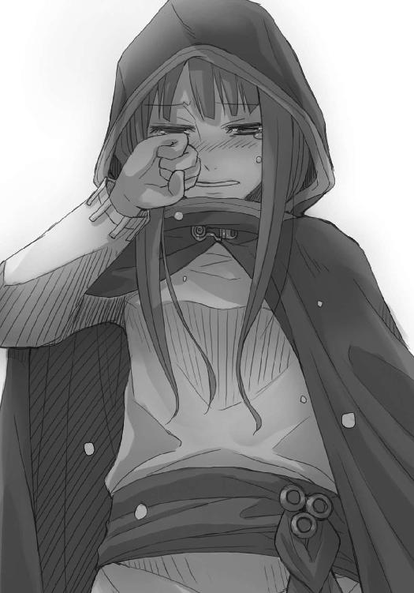
ロレンスが、麦を集め直した巾着をホロの残った手に載せると、ホロは力任せに握り締めた。
「責任、取れるんじゃろうな」
笑ってしまったのは、わざとではない。
「来るべき時が来れば、笑顔で別れればそれでいい。終わりのない旅はないからな。ただ」
次から次へとわいてくる涙は、どちらかというとホロ自身が自分の情けなさに泣いているのかもしれない。
こんな無様な様子、少女だってなかなか見せはしない。
ロレンスは、笑って、こう言った。
「このままじゃ笑顔で別れるのは無理だと思った。それだけだ」
ホロはロレンスの言葉に、涙を拭いながら、うなずいてくれた。
「大体、なんでそんなに悲観的なんだ？」
理由がないはずがない。
ホロが歩んできた長い長い年月は、臆病になってしまうのに十分なものだったに違いない。
それでも、ホロは涙を拭い、麦の袋を握り締め、わずかに余った人差し指だけをロレンスの指に絡ませてきた。ホロは、長い年月でたくさんの心変わりや楽しさの風化に苦しみながら、それでもなお、わずかの期待を持って荷台に潜り込んでいたはずなのだ。
幸福でいるためにはなにも望まないでいるほかない、という結論など、許容できるものではない。
何百年と生きているホロですら、子供のような無邪気さを忘れることができないのだから。
やがてホロは天井を仰ぎ、鼻をすすった。
それから、わずかの間。
「なぜ、わっちが悲観的なのか、じゃと？」
顔を戻すと、こう言った。
「こうやってめそめそしておるほうが、ぬしの好みなんじゃろう？」
虚をつかれたロレンスは、もう笑うしかない。
だから、立ち上がらずに、その場で、ホロの手を取り直して、まるで騎士のようにその甲に軽く口づけをした。
相手は賢狼ホロ。すぐにこの形に相応しい、上から宣告するかのような言い方で、言った。
「わっちの案を足蹴にしたんじゃ。これからのことにはぬしが全ての責任を負うんじゃな？」
「......ああ」
ロレンスが答えると、ホロはしばし沈黙し、それからため息をついた。
「ぬしはわっちのたわけたことに真剣に向き合ってくれた。それこそ、金儲けをふいにするくらいに。じゃからな、わっちは」
言葉を切って、首をかしげながらこう言った。
「ぬしのたわけた考えに付き合ってやろう......。じゃがな」
「だが？」
その直後、ホロはロレンスの肩を蹴飛ばして真上から見下ろすと、虫でも見るかのような冷たい顔でこう言った。
「わっちの連れがへたれの商人では困りんす。よもや、本当に儲け話を奪われたまま、尻尾を巻いて逃げ出さぬよな？」
これがホロなりの優しさだとしたら、ロレンスには言うべき言葉が一つしかない。
ホロの手を借りて立ち上がると、ロレンスはホロの目尻にまだ残っている涙を拭って、こう言った。
「お前の優しさも怖いんだがな」
ホロがその言葉に「たわけ」と返そうとしていたのかどうかは定かではない。
なぜなのかは、きっと、ホロが未来永劫語り継ぐという美談の中でも語られまい。
立ちくらみを起こしたロレンスはそんなことを思った。
ホロが言葉を遮る原因など、数えるほどしかないからだ。
「......で、取り返す算段は？」
ホロの底冷えするような目。
なにがなんでも儲けを取り戻せ、と言わんばかりだ。
それでもロレンスはその言葉に冗談を返したくなった。
その目が、ホロの照れ隠しだとわかったから。
「俺は儲けを取り返すより、主導権をお前から取り戻したいよ」
「たわけ」
今度ははっきりとホロは言い、挙句にロレンスの腫れた頰を引っぱたいて体を離した。
「そんなことをわっちが許すと思うかや」
ロレンスが激痛に体を折るのもまったく気にしていないような口調だ。
しかも、ヨイツの賢狼ホロは自慢の尻尾をロレンスに見せつけられるようにとくるりと体を回転させて、腰に手を当てると背中を向けながら肩越しに振り向いた。
「わっちがな、ぬしに惚れたら困りんす」
その時のいたずらっぽい笑みを、ロレンスはずっと忘れないだろう。
亜麻色の髪を揺らし、ホロはくつくつと笑う。
馬鹿なやり取りだ。
本当に、そう思う。
「そうだな」
「うん」
ロレンスとホロは部屋を出る。
つないだ手は、双方くすぐったそうに、どちらからともなく指を絡めたのだった。
終わり
あとがき
お久しぶりです。支倉です。五巻目です。
このあとがきを書く時にワードで新規ファイルを作ったのですが、どうしても今まで書いていたのと同じ環境にならず、じめじめとした雨の夜の暑さもあいまって、もう少しでパソコンを破壊するところでした。表示倍率が１１５％になっているのだと気がつくまでに相当の気力を使ってしまい、あとがきでなにを書こうとしていたかも忘れてしまいました。
どうしようかな......。
では、五巻目の原稿を書いていた時の生活状況でも。
実は五巻目を書いていた時は非常に健康的な朝型生活でした。朝八時頃に目を覚まし、朝食を食べながらネットを見て回り、八時五十分頃から株式市場に張りつき、取引開始から一時間ほど一喜一憂したら、近所のファミレスにノートパソコンを持っていき、原稿を書いていました。
外付けバッテリーと内蔵バッテリーであわせて最長六時間ほどいられるのですが、気力はもとより体力的にも（店員さんの視線も）厳しいものがあるので、大体株式市場が閉まる三時ちょっと前に帰ります。
それから取引終了まで株価に一喜一憂し、取引が終わったらネットゲームや資料の読み込みをし、夜頃に気力体力が奇跡的に回復すればまた原稿を書きます。疲れきって昼寝をすることも多く、昼寝をしたあとは原稿を読み返したりします。夜は十二時前くらいに寝ます。
土日は株式市場が開いていないので、起きたらすぐファミレスに行くこともあれば、お昼の混雑を避けてから行くこともありました。
で、なぜこんなにも健康的な生活が送れたかというと、そうしないと締め切りに間に合わないくらい切羽詰まっていたからで、原稿が上がって気が緩んだとたんに夜型になってしまいましたが、それでも午前四時に寝ようが七時に寝ようが、株式市場の開く九時前には目が覚めるのが怖いです。
最近の夢は、タックスヘイヴンの南の島で執筆して税金を回避できないかなということです。
来年の確定申告の時に頭を抱えていなければ私は南の国にいます。
でも、南の国に行ったらのんびりしすぎて原稿なんか書かなくなるような気がしてなりません。世の中、実にままならないようです。
それでは、また次の巻でお会いしましょう。
支倉凍砂
支倉凍砂
１９８２年12月27日生まれ。第12回電撃小説大賞〈銀賞〉受賞。大学にて物理を学ぶも、締め切り間際はいつも「がんばればできると思います」の精神論。ここは理系の人間として「物理的に無理です」とするべきか悩む今日この頃。
文倉十
１９８１年生まれ、京都府出身のＡＢ型。現在東京にて、フリーで細々と活動中。最近引越しを考えるも、改めて23区内の家賃の高さに絶望する日々です。
電撃文庫
狼と香辛料V
支倉凍砂
二〇十三年四月二十五日 配信
発行者 塚田正晃
発行所 株式会社アスキー・メディアワークス
〒一〇二─八五八四 東京都千代田区富士見一─八─十九
(C)2007 ISUNA HASEKURA/ASCII MEDIA WORKS
本書（電子版）に掲載されているコンテンツ（ソフトウェア／プログラム／データ／情報を含む）の著作権およびその他の権利は、すべて株式会社アスキー・メディアワークスおよび正当な権利を有する第三者に帰属しています。
法律の定めがある場合または権利者の明示的な承諾がある場合を除き、これらのコンテンツを複製・転載、改変・編集、翻案・翻訳、放送・出版、公衆送信（送信可能化を含む）・再配信、販売・頒布、貸与等に使用することはできません。